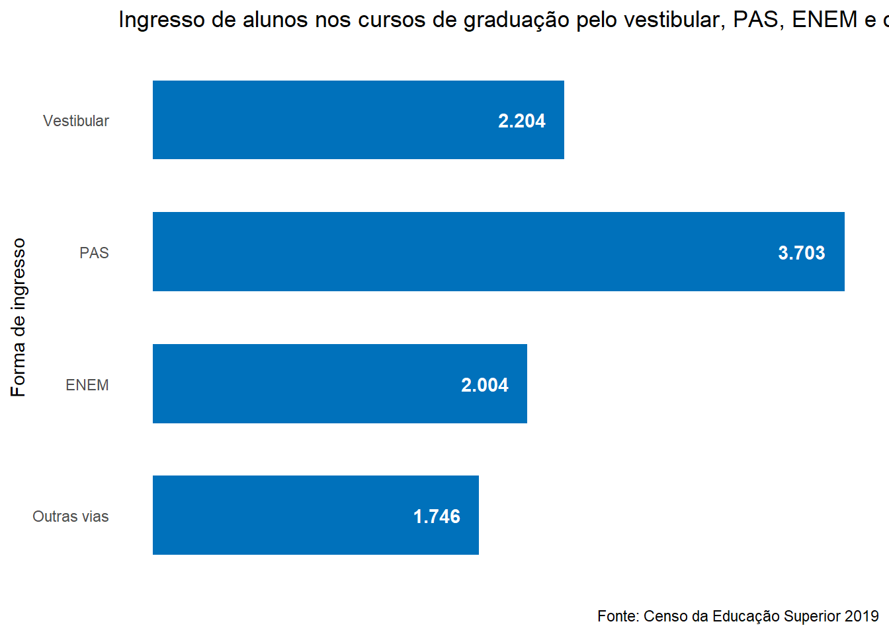
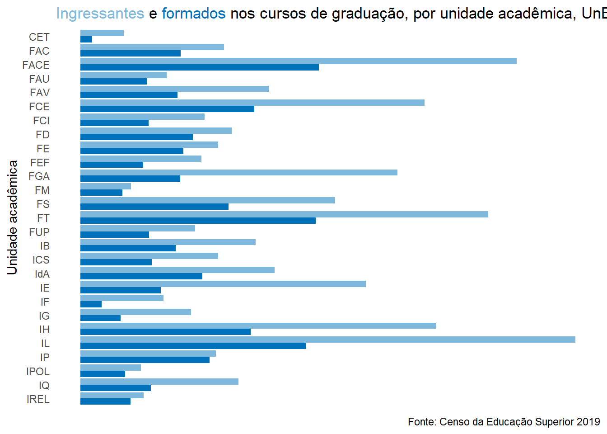

Capítulo 2 Graduação
2.1 Dados e características dos cursos de graduação oferecidos pela UnB, 2019
| UNIDADE ACADÊMICA / CURSO / HABILITAÇÃO | INÍCIO DO CURSO | ATO DE RECONHECIMENTO | DATA DO ATO | CARGA HORÁRIA CURRICULAR EXIGIDA | CRÉDITOS TOTAL | PERM. MÍN. | PERM. MÁX. | N. ORD. |
|---|---|---|---|---|---|---|---|---|
| Centro de Excelência em Turismo – CET | ||||||||
| Turismo (B - Integral) | 2º/2010 | P.Seres 271 | 03/04/2017 | 2640 | 176 | 8 | 16 | 1 |
| Faculdade de Comunicação - FAC | ||||||||
| Comunicação Organizacional (B - Noturno) | 2º/2010 | P.Seres 299 | 14/04/2015 | 2790 | 186 | 8 | 14 | 2 |
| Comunicação Social-Audiovisual (B - Integral) | 2º/2013 | P.Seres 522 | 15/10/2013 | 2820 | 188 | 8 | 14 | 3 |
| Jornalismo (B - Integral) | 2º/2006 | P.Seres 1.185 | 23/11/2017 | 2325 | 155 | 6 | 12 | 4 |
| Comunicação Social-Public. Propaganda (B - Integral) | 2º/2006 | P.Seres 271 | 03/04/2017 | 2790 | 186 | 8 | 14 | 5 |
| Faculdade de Economia, Administração, Contabilidade e Gestão de Políticas Públicas - FACE | ||||||||
| Administração (B - Integral) | 2º/1969 | P.Seres 271 | 03/04/2017 | 3000 | 200 | 8 | 16 | 6 |
| Aministração (B - Noturno) | 1º/2011 | P.Seres 271 | 03/04/2017 | 3000 | 200 | 8 | 16 | 7 |
| Ciências Contábeis (B - Integral) | 1º/2012 | P.Seres 271 | 03/04/2017 | 3000 | 200 | 8 | 14 | 8 |
| Ciências Contábeis (B - Noturno) | 1º/2012 | P.Seres 271 | 03/04/2017 | 3000 | 200 | 10 | 14 | 9 |
| Ciências Econômicas (B - Integral) | 1º/2007 | P.Seres 271 | 03/04/2017 | 3000 | 200 | 6 | 14 | 10 |
| Gestão de Políticas Públicas (B - Noturno) | 2º/2009 | P.Seres 404 | 22/07/2014 | 3000 | 200 | 8 | 16 | 11 |
| Faculdade de Arquitetura e Urbanismo - FAU | ||||||||
| Arquitetura e Urbanismo (B - Integral) | 1º/2010 | P.Seres 919 | 27/12/2018 | 3750 | 250 | 9 | 18 | 12 |
| Arquitetura e Urbanismo (B - Noturno) | 1º/2013 | P.Seres 919 | 27/12/2018 | 3750 | 250 | 9 | 14 | 13 |
| Faculdade de Agronomia e Medicina Veterinária - FAV | ||||||||
| Agronomia (B - Integral) | 1º/2004 | P.Seres 136 | 01/03/2018 | 3930 | 262 | 8 | 14 | 14 |
| Gestão de Agronegócios (B - Noturno) | 1º/2010 | P. Seres 658 | 28/09/2018 | 3000 | 200 | 8 | 16 | 15 |
| Medicina Veterinária (B - Integral) | 2º/2012 | P.Seres 136 | 01/03/2018 | 4200 | 280 | 10 | 20 | 16 |
| Faculdade UnB Ceilândia | ||||||||
| Enfermagem (B - Integral) | 2º/2008 | P. Seres 136 | 01/03/2018 | 4230 | 282 | 10 | 14 | 17 |
| Farmácia (B - Integral) | 2º/2014 | P. Seres 136 | 01/03/2018 | 4395 | 293 | 10 | 18 | 18 |
| Fisioterapia (B - Integral) | 2º/2008 | P. Seres 136 | 01/03/2018 | 4050 | 300 | 10 | 18 | 19 |
| Fonoaudiologia (B - Integral) | 2º/2012 | P.Seres 1.340 | 15/12/2017 | 3510 | 234 | 8 | 12 | 20 |
| Saúde Coletiva (B - Integral) | 2º/2008 | P. Seres 63 | 23/03/2016 | 3210 | 214 | 8 | 14 | 21 |
| Terapia Ocupacional (B - Integral) | 2º/2008 | P.Seres 298 | 14/04/2015 | 3510 | 234 | 8 | 12 | 22 |
| Faculdade de Ciência da Informação - FCI | ||||||||
| Arquivologia (B - Noturno) | 2º/2006 | P.Seres 309 | 02/08/2011 | 2400 | 160 | 6 | 10 | 23 |
| Biblioteconomia (B - Integral) | 2º/2006 | P.Seres 311 | 02/08/2011 | 2700 | 180 | 8 | 14 | 24 |
| Museologia (B - Integral) | 2º/2009 | P.Seres 428 | 30/08/2013 | 2535 | 169 | 7 | 12 | 25 |
| Faculdade de Direito - FD | ||||||||
| Direito (B - Integral) | 2º/2006 | P.Seres 763 | 21/07/2017 | 3840 | 256 | 10 | 16 | 26 |
| Direito (B - Noturno) | 2º/2006 | P.Seres 763 | 21/07/2017 | 3840 | 256 | 10 | 16 | 27 |
| Faculdade de Educação - FE | ||||||||
| Pedagogia (L - A Distância) | 2º/2007 | P.Seres 913 | 27/12/2018 | 3240 | 216 | 10 | 14 | 28 |
| Pedagogia (L - Integral) | 2º/2001 | P.Seres 919 | 27/12/2018 | 3210 | 214 | 6 | 14 | 29 |
| Pedagogia (L - Noturno) | 2º/2001 | P.Seres 919 | 27/12/2018 | 3210 | 214 | 6 | 14 | 30 |
| Faculdade de Educação Física - FEF | ||||||||
| Educação Física (B - Integral) | 1º/2012 | P. Seres 136 | 01/03/2018 | 3210 | 214 | 8 | 12 | 31 |
| Educação Física (L - A Distância) | 2º/2007 | P. Seres 244 | 31/05/2013 | 2910 | 194 | 8 | 14 | 32 |
| Educação Física (L - Integral) | 2º/2012 | P. Seres 919 | 27/12/2018 | 2820 | 188 | 6 | 10 | 33 |
| Faculdade UnB Gama - FGA | ||||||||
| Engenharia (ABI - Integral) | 2º/2008 | Resolução 16/2008 | 03/06/2008 | 3750 | 250 | 8 | 16 | 34 |
| Engenharia Aeroespacial (B - Integral) | 1º/2012 | P. Seres 187 | 17/03/2018 | 3930 | 262 | 8 | 16 | 35 |
| Engenharia Automotiva (B - Integral) | 2º/2011 | P.Seres 144 | 3885 | 259 | 10 | 16 | 36 | |
| Engenharia de Energia (B - Integral) | 2º/2009 | P. Seres 919 | 27/12/2018 | 3825 | 255 | 10 | 16 | 37 |
| Engenharia de Software (B - Integral) | 2º/2010 | P. Seres 301 | 08/07/2016 | 3600 | 240 | 10 | 16 | 38 |
| Engenharia Eletrônica (B - Integral) | 2º/2011 | P. 1096 | 24/12/2015 | 3855 | 257 | 10 | 16 | 39 |
| Faculdade de Medicina - FM | ||||||||
| Medicina (B - Integral) | 1º/2010 | P.Seres 1.014 | 25/09/2017 | 7200 | 480 | 10 | 18 | 40 |
| Faculdade de Ciências da Saúde - FS | ||||||||
| Ciências Farmacêuticas (B - Integral) | 2º/2013 | P. Seres 136 | 01/03/2018 | 4380 | 292 | 10 | 15 | 41 |
| Farmácia (B - Noturno) | 1º/2010 | P. Seres 136 | 01/03/2018 | 4380 | 292 | 12 | 18 | 42 |
| Enfermagem (B - Integral) | 1º/2010 | P. Seres 278 | 20/04/2018 | 4020 | 268 | 10 | 15 | 43 |
| Saúde Coletiva (B - Noturno) | 1º/2010 | P. 1.110 | 25/10/2017 | 3225 | 215 | 8 | 12 | 44 |
| Nutrição (B - Integral) | 1º/2008 | P.Seres 99 | 09/02/2018 | 3600 | 240 | 6 | 14 | 45 |
| Odontologia (B - Integral) | 1º/2010 | P.Seres 529 | 01/08/2018 | 4005 | 267 | 10 | 18 | 46 |
| Faculdade de Tecnologia - FT | ||||||||
| Engenharia Ambiental (B - Integral) | 1º/2010 | P. Seres 919 | 27/12/2018 | 3900 | 260 | 10 | 18 | 47 |
| Engenharia Civil (B - Integral) | 1º/2005 | P. Seres 919 | 27/12/2018 | 3930 | 262 | 8 | 18 | 48 |
| Engenharia de Produção (B - Noturno) | 2º/2009 | P. Seres 919 | 27/12/2018 | 3600 | 240 | 10 | 18 | 49 |
| Engenharia de Redes de Comunicação (B - Integral) | 1º/2005 | P. 1.096 | 24/12/2015 | 3660 | 244 | 9 | 18 | 50 |
| Engenharia Elétrica (B - Integral) | 1º/2005 | P. Seres 919 | 27/12/2018 | 3930 | 262 | 8 | 18 | 51 |
| Engenharia Florestal (B - Integral) | 1º/2005 | P. Seres 919 | 27/12/2018 | 3870 | 258 | 8 | 16 | 52 |
| Engenharia Mecânica (B - Integral) | 1º/2005 | P. Seres 919 | 27/12/2018 | 3930 | 262 | 8 | 18 | 53 |
| Engenharia Mecatrônica (B - Integral) | 1º/2005 | P. Seres 919 | 27/12/2018 | 4110 | 274 | 8 | 18 | 54 |
| Faculdade UnB Planaltina - FUP | ||||||||
| Ciências Naturais (L - Integral) | 1º/2013 | P.Seres 517 | 15/10/2013 | 3135 | 209 | 6 | 16 | 55 |
| Ciências Naturais (L - Noturno) | 1º/2008 | P.Seres 300 | 14/04/2015 | 3135 | 209 | 7 | 16 | 56 |
| Educação do Campo ênfases: Ciências da Natureza; Linguagens, artes e Literatura; Matemática (L - Integral) | 2º/2007 | P. Seres 301 | 08/07/2016 | 3525 | 235 | 6 | 12 | 57 |
| Gestão Ambiental (B - Noturno) | 2º/2008 | P.Seres 795 | 26/07/2017 | 2790 | 186 | 8 | 16 | 58 |
| Gestão do Agronegócio (B - Integral) | 1º/2006 | P.Seres 822 | 22/11/2018 | 3000 | 200 | 8 | 16 | 59 |
| Instituto de Ciências Biológicas - IB | ||||||||
| Biotecnologia (B - Integral) | 1º/2011 | P.Seres 305 | 16/04/2015 | 3210 | 214 | 8 | 14 | 60 |
| Ciências Biológicas (B - Integral) | 2º/2013 | P.Seres 919 | 27/12/2018 | 3210 | 214 | 8 | 14 | 61 |
| Ciências Biológicas (L - A Distância) | 1º/2009 | P.Seres 296 | 14/04/2015 | 3090 | 206 | 6 | 14 | 62 |
| Ciências Biológicas (L - Integral) | 1º/2005 | P.Seres 919 | 27/12/2018 | 2850 | 190 | 6 | 12 | 63 |
| Ciências Biológicas (L - Noturno) | 2º/2013 | P.Seres 919 | 27/12/2018 | 3060 | 204 | 8 | 14 | 64 |
| Instituto de Ciências Sociais - ICS | ||||||||
| Ciências Sociais-Antropologia (B - Integral) | 2º/1997 | P.Seres 919 | 27/12/2018 | 2520 | 168 | 6 | 14 | 65 |
| Ciências Sociais-C. Sociais (B - Integral) | 1º/2005 | P.Seres 919 | 27/12/2018 | 2520 | 168 | 6 | 14 | 66 |
| Ciências Sociais-Sociologia (B - Integral) | 1º/2005 | P.Seres 919 | 27/12/2018 | 2520 | 168 | 6 | 14 | 67 |
| Ciências Sociais (L - Integral) | 1º/2005 | P.Seres 919 | 27/12/2018 | 2520 | 168 | 6 | 14 | 68 |
| Instituto de Artes - IdA | ||||||||
| Artes Cênicas (B - Integral) | 1º/2009 | P.Seres 846 | 04/08/2017 | 2880 | 192 | 8 | 12 | 69 |
| Artes Cênicas (L - Integral) | 1º/2009 | R.Consuni 6/2009 | 20/04/2009 | 2880 | 192 | 8 | 12 | 70 |
| Artes Cênicas (L - Noturno) | 1º/2009 | R.Consuni 6/2009 | 20/04/2009 | 2880 | 192 | 8 | 12 | 71 |
| Artes Visuais (B - Integral) | 1º/2001 | P.Seres 626 | 27/11/2013 | 2790 | 186 | 8 | 12 | 72 |
| Artes Visuais (L - Integral) | 1º/2001 | P.Seres 919 | 27/12/2018 | 2730 | 182 | 8 | 12 | 73 |
| Artes Visuais (L - Noturno) | 1º/2001 | P.Seres 919 | 27/12/2018 | 2730 | 182 | 8 | 12 | 74 |
| Artes Visuais (L - A Distância) | 2º/2007 | P.Seres 913 | 27/12/2018 | 3180 | 212 | 8 | 12 | 75 |
| Desing-Programação Visual (B - Integral) | 2º/2012 | P.Seres 271 | 03/04/2017 | 2940 | 196 | 7 | 14 | 76 |
| Desing-Projeto do Produto (B - Integral) | 2º/2012 | P.Seres 271 | 03/04/2017 | 2940 | 196 | 7 | 14 | 77 |
| Música-Composição (B - Integral) | 2º/2006 | P.Seres 329 | 24/07/2013 | 3330 | 222 | 12 | 16 | 78 |
| Música-Regência (B - Integral) | 2º/2006 | P.Seres 764 | 21/07/2017 | 3333 | 222 | 12 | 16 | 79 |
| Música - Instrumentos (B - Integral) | 2º/2006 | P.Seres 330 | 24/07/2013 | 2070 | 138 | 6 | 10 | 80 |
| Música (L - A Distância) | 2º/2007 | P.Seres 913 | 27/12/2018 | 3015 | 201 | 8 | 12 | 81 |
| Música (L - Integral) | 2º/2006 | P.Seres 919 | 27/12/2018 | 2295 | 153 | 8 | 12 | 82 |
| Música (L - Noturno) | 2º/2009 | Res.CONSUNI 6/2009 | 04/04/2009 | 2850 | 190 | 8 | 14 | 83 |
| Teatro (L - A Distância) | 2º/2007 | P. 227 | 22/05/2013 | 2865 | 191 | 7 | 14 | 84 |
| Teoria, Crítica e História da Arte (B - Noturno) | 1º/2012 | P.Seres 300 | 08/07/2016 | 2610 | 174 | 8 | 12 | 85 |
| Instituto de Ciências Exatas - IE | ||||||||
| Ciência da Computação (B - Integral) | 2º/2007 | P.Seres 919 | 27/12/2018 | 3600 | 240 | 7 | 14 | 86 |
| Computação (L - Noturno) | 2º/2007 | P.Seres 919 | 27/12/2018 | 2700 | 180 | 7 | 16 | 87 |
| Engenharia de Computação (B - Integral) | 2º/2009 | P. Seres 919 | 27/12/2018 | 3780 | 252 | 8 | 18 | 88 |
| Estatística (B - Integral) | 1º/1997 | P. Seres 423 | 11/10/2011 | 3000 | 200 | 8 | 16 | 89 |
| Matemática (B - Integral) | 1º/2005 | P.Seres 919 | 27/12/2018 | 2520 | 168 | 6 | 14 | 90 |
| Matemática (L - Integral) | 1º/2005 | P.Seres 919 | 27/12/2018 | 2520 | 168 | 6 | 14 | 91 |
| Matemática (L - Noturno) | 1º/2005 | P.Seres 919 | 27/12/2018 | 2520 | 168 | 6 | 14 | 92 |
| Instituto de Física - IF | ||||||||
| Física (B - Integral) | 1º/2005 | P. Seres 919 | 27/12/2018 | 2670 | 178 | 6 | 12 | 93 |
| Física (L - A Distância) | 1º/2005 | Res. CEPE 238 | 05/12/2017 | 2670 | 178 | 6 | 12 | 94 |
| Física (L - Noturno) | 1º/2005 | P. Seres 919 | 27/12/2018 | 2670 | 178 | 6 | 14 | 95 |
| Instituto de Geociências - IG | ||||||||
| Ciências Ambientais (B - Noturno) | 2º/2009 | P.Seres 365 | 23/12/7572 | 2700 | 180 | 7 | 14 | 96 |
| Geofísica (B - Integral) | 2º/2009 | P. Seres 403 | 22/07/2014 | 3180 | 212 | 8 | 12 | 97 |
| Geologia (B - Integral) | 2º/1998 | P.Seres 263 | 16/11/2012 | 3960 | 264 | 8 | 16 | 98 |
| Instituto de Ciências Humanas - IH | ||||||||
| Filosofia (B - Integral) | 2º/2013 | P. Seres 919 | 27/12/2018 | 2400 | 160 | 8 | 14 | 99 |
| Filosofia (L - Integral) | 2º/2013 | P. Seres 919 | 27/12/2018 | 3030 | 202 | 8 | 14 | 100 |
| Filosofia (L - Noturno) | 2º/2010 | P. Seres 919 | 27/12/2018 | 3030 | 202 | 8 | 14 | 101 |
| Geografia (B - Integral) | 1º/2005 | P. Seres 919 | 27/12/2018 | 2520 | 168 | 6 | 14 | 102 |
| Geografia (L - A Distância) | 1º/2009 | P. Seres 913 | 27/12/2018 | 2910 | 194 | 6 | 14 | 103 |
| Geografia (L - Integral) | 1º/2005 | P. Seres 919 | 27/12/2018 | 2520 | 168 | 6 | 14 | 104 |
| História (B - Integral) | 01º/2013 | P. Seres 919 | 27/12/2018 | 2640 | 176 | 6 | 15 | 105 |
| História (L - Integral) | 1º/2013 | P. Seres 919 | 27/12/2018 | 2955 | 197 | 7 | 16 | 106 |
| História (L - Noturno) | 2º/2009 | P. Seres 919 | 27/12/2018 | 2955 | 197 | 8 | 14 | 107 |
| Serviço Social (B - Integral) | 2º/2013 | P.Seres 383 | 27/04/2017 | 3120 | 208 | 7 | 14 | 108 |
| Serviço Social (B - Noturno) | 1º/2010 | P.Seres 383 | 27/04/2017 | 3000 | 200 | 8 | 16 | 109 |
| Instituto de Letras - IL | ||||||||
| Letras-Língua Espanhola e Literatura Espanhola e Hispano-Americana (L - Noturno) | 1º/2005 | P.Seres 481 | 22/10/2019 | 2640 | 176 | 8 | 16 | 110 |
| Letras-Língua Francesa e Respectiva Literatura (B - Integral) | 2º/2010 | P.Seres 286 | 21/12/2012 | 2700 | 180 | 6 | 14 | 111 |
| Letras-Língua Francesa e Respectiva Literatura (L - Integral) | 2º/2010 | P.Seres 278 | 01/07/2016 | 2700 | 180 | 6 | 14 | 112 |
| Letras-Língua Inglesa e Respectiva Literatura (B - Integral) | 2º/2010 | P.Seres 279 | 01/07/2016 | 2700 | 180 | 6 | 14 | 113 |
| Letras-Língua Inglesa e Respectiva Literatura (L - Integral) | 2º/2010 | P. Seres 919 | 27/12/2018 | 2700 | 180 | 6 | 14 | 114 |
| Letras-Lingua e Literatura Japonesa (L - Noturno) | 1º/2005 | P.Seres 534 | 02/08/2018 | 2430 | 162 | 7 | 15 | 115 |
| Letras-Línguas Estrangeiras Aplicadas ao Multiculturalismo e a Ciência da Informação (B - Integral) | 1º/2010 | P.Seres 300 | 08/07/2016 | 2880 | 192 | 8 | 16 | 116 |
| Letras-Língua Portuguesa e Respectiva Literatura (B - Integral) | 2º/2010 | P.Seres 919 | 27/12/2018 | 2700 | 180 | 6 | 14 | 117 |
| Letras-Língua Portuguesa e Respectiva Literatura (L - Integral) | 2º/2010 | P.Seres 919 | 27/12/2018 | 2700 | 180 | 6 | 14 | 118 |
| Letras-Língua Portuguesa e Respectiva Literatura (L - Noturno) | 1º/1993 | Resolução s/n | 01/03/1993 | 2640 | 176 | 6 | 14 | 119 |
| Letras-Português do Brasil como Segunda Língua (L - Integral) | 1º/2005 | P.Seres 466 | 09/09/2016 | 2460 | 164 | 6 | 14 | 120 |
| Letras-Tradução Espanhol (B - Noturno) | 2º/2009 | P.Seres 300 | 08/07/2016 | 2520 | 168 | 7 | 14 | 121 |
| Letras-Tradução Francês (B - Integral) | 1º/2005 | P. Seres 281 | 01/07/2016 | 2700 | 180 | 6 | 14 | 122 |
| Letras-Tradução Inglês (B - Integral) | 1º/2005 | P.Seres 286 | 21/12/2012 | 2700 | 180 | 6 | 14 | 123 |
| Letras - Língua de Sinais Brasileira/Português Como Segunda Língua (L - Integral) | 1º/2015 | Res. CEPE 28/2014 | 13/10/2014 | 2460 | 164 | 6 | 14 | 124 |
| Letras-Lingua Portuguesa e Respectiva Literatura (L - A Distância) | 2º/2007 | P.Seres 913 | 27/12/2018 | 3240 | 216 | 9 | 14 | 125 |
| Instituto de Psicologia - IP | ||||||||
| Psicologia-Psicólogo (B - Integral) | 1º/2014 | P.Seres 271 | 03/04/2017 | 4230 | 282 | 10 | 16 | 126 |
| Psicologia (B - Integral) | 2º/2006 | P.Seres 271 | 03/04/2017 | 4140 | 276 | 10 | 14 | 127 |
| Psicologia (L - Integral) | 2º/2006 | P.Seres 916 | 14/08/2017 | 3330 | 222 | 7 | 14 | 128 |
| Instituto de Ciência Política - IPOL | ||||||||
| Ciência Política (B - Integral) | 1º/2006 | P.Seres 626 | 27/11/2013 | 2670 | 178 | 6 | 12 | 129 |
| Instituto de Química - IQ | ||||||||
| Engenharia Química (B - Integral) | 1º/2012 | P. Seres 919 | 27/12/2018 | 3960 | 264 | 8 | 16 | 130 |
| Química (B - Integral) | 1º/2005 | P. Seres 919 | 27/12/2018 | 2760 | 184 | 6 | 12 | 131 |
| Química (L - Noturno) | 1º/2005 | P. Seres 919 | 27/12/2018 | 2760 | 184 | 6 | 12 | 132 |
| Química Tecnológica (B - Integral) | 1º/2010 | P. Seres 919 | 27/12/2018 | 3300 | 220 | 8 | 18 | 133 |
| Instituto de Relações Internacionais - IREL | ||||||||
| Relações Internacionais (B - Integral) | 1º/2005 | P.Seres 271 | 03/04/2017 | 2790 | 186 | 6 | 12 | 134 |
| Fonte: SIGAA, atualização CAEG/DTG/DEG, em 23/06/2020 | ||||||||
| Nota: O ato de reconhecimento dos cursos Integral é valido para os cursos noturnos | ||||||||
| Legenda: D: Decreto; P: Portaria; Seres: Secretaria de Regulação da Educação Superior; Res: Resolução |
2.2 Ingresso nos cursos de graduação pelo vestibular, PAS, ENEM e outras vias, por unidade acadêmica, curso e habilitação, UnB, 2019
| UNIDADE ACADÊMICA / CURSO / HABILITAÇÃO | 1º SEM | 2º SEM | 1º SEM | 2º SEM | 1º SEM | 2º SEM | 1º SEM | 2º SEM | 1º SEM | 2º SEM | 1º SEM | 2º SEM | 1º SEM | 2º SEM | 1º SEM | 2º SEM | TOTAL GERAL |
|---|---|---|---|---|---|---|---|---|---|---|---|---|---|---|---|---|---|
| Centro de Excelência em Turismo - CET | 0 | 20 | 20 | 19 | 17 | 0 | 1 | 0 | 0 | 3 | 0 | 0 | 1 | 0 | 0 | 0 | 81 |
| Turismo (B - Integral) | 0 | 20 | 20 | 19 | 17 | 0 | 1 | 0 | 0 | 3 | 0 | 0 | 1 | 0 | 0 | 0 | 81 |
| Faculdade de Comunicação - FAC | 0 | 52 | 53 | 52 | 52 | 0 | 0 | 1 | 25 | 27 | 0 | 3 | 2 | 1 | 0 | 0 | 268 |
| Comunicação Organizacional (B - Noturno) | 0 | 20 | 20 | 20 | 19 | 0 | 0 | 0 | 4 | 11 | 0 | 1 | 0 | 0 | 0 | 0 | 95 |
| Comunicação Social-Audiovisual (B - Integral) | 0 | 0 | 0 | 0 | 0 | 0 | 0 | 0 | 7 | 4 | 0 | 0 | 0 | 0 | 0 | 0 | 11 |
| Comunicação Social-Jornalismo (B - Integral) | 0 | 11 | 11 | 10 | 11 | 0 | 0 | 1 | 5 | 3 | 0 | 2 | 2 | 0 | 0 | 0 | 56 |
| Comunicação Social-Public. Propaganda (B - Integral) | 0 | 0 | 0 | 0 | 0 | 0 | 0 | 0 | 9 | 9 | 0 | 0 | 0 | 1 | 0 | 0 | 19 |
| Comunicação Social (ABI - Integral) | 0 | 21 | 22 | 22 | 22 | 0 | 0 | 0 | 0 | 0 | 0 | 0 | 0 | 0 | 0 | 0 | 87 |
| Faculdade de Economia, Administração e Contabilidade - FACE | 0 | 171 | 175 | 169 | 166 | 1 | 11 | 11 | 23 | 75 | 0 | 6 | 4 | 2 | 0 | 0 | 814 |
| Administração (B - Integral) | 0 | 58 | 60 | 58 | 54 | 1 | 4 | 2 | 9 | 19 | 0 | 6 | 3 | 1 | 0 | 0 | 275 |
| Ciências Contábeis (B - Integral) | 0 | 34 | 35 | 32 | 35 | 0 | 0 | 2 | 3 | 16 | 0 | 0 | 0 | 0 | 0 | 0 | 157 |
| Ciências Contábeis (B - Noturno) | 0 | 29 | 30 | 29 | 28 | 0 | 3 | 1 | 3 | 13 | 0 | 0 | 0 | 0 | 0 | 0 | 136 |
| Ciências Econômicas (B - Integral) | 0 | 24 | 25 | 25 | 24 | 0 | 4 | 6 | 8 | 21 | 0 | 0 | 1 | 1 | 0 | 0 | 139 |
| Gestão de Políticas Públicas (B - Noturno) | 0 | 26 | 25 | 25 | 25 | 0 | 0 | 0 | 0 | 6 | 0 | 0 | 0 | 0 | 0 | 0 | 107 |
| Faculdade de Arquitetura e Urbanismo - FAU | 0 | 35 | 35 | 31 | 34 | 0 | 2 | 2 | 6 | 8 | 0 | 0 | 8 | 0 | 0 | 0 | 161 |
| Arquitetura e Urbanismo (B - Integral) | 0 | 20 | 20 | 16 | 19 | 0 | 2 | 2 | 2 | 6 | 0 | 0 | 7 | 0 | 0 | 0 | 94 |
| Arquitetura e Urbanismo (B - Noturno) | 0 | 15 | 15 | 15 | 15 | 0 | 0 | 0 | 4 | 2 | 0 | 0 | 1 | 0 | 0 | 0 | 67 |
| Faculdade de Agronomia e Medicina Veterinária - FAV | 1 | 95 | 77 | 60 | 80 | 0 | 4 | 1 | 9 | 19 | 0 | 1 | 2 | 2 | 0 | 0 | 351 |
| Agronomia (B - Integral) | 1 | 40 | 39 | 39 | 39 | 0 | 0 | 1 | 1 | 5 | 0 | 0 | 1 | 1 | 0 | 0 | 167 |
| Gestão do Agronegócio (B - Noturno) | 0 | 35 | 19 | 1 | 20 | 0 | 0 | 0 | 4 | 8 | 0 | 0 | 1 | 0 | 0 | 0 | 88 |
| Medicina Veterinária (B - Integral) | 0 | 20 | 19 | 20 | 21 | 0 | 4 | 0 | 4 | 6 | 0 | 1 | 0 | 1 | 0 | 0 | 96 |
| Faculdade UnB Ceilândia - FCE | 0 | 144 | 145 | 143 | 142 | 1 | 0 | 1 | 26 | 31 | 0 | 8 | 0 | 1 | 0 | 0 | 642 |
| Enfermagem (B - Integral) | 0 | 24 | 25 | 21 | 24 | 1 | 0 | 0 | 15 | 6 | 0 | 0 | 0 | 1 | 0 | 0 | 117 |
| Farmácia (B - Integral) | 0 | 24 | 25 | 25 | 24 | 0 | 0 | 0 | 2 | 3 | 0 | 0 | 0 | 0 | 0 | 0 | 103 |
| Fisioterapia (B - Integral) | 0 | 25 | 24 | 25 | 23 | 0 | 0 | 1 | 3 | 14 | 0 | 2 | 0 | 0 | 0 | 0 | 117 |
| Fonoaudiologia (B - Integral) | 0 | 18 | 17 | 18 | 18 | 0 | 0 | 0 | 5 | 2 | 0 | 0 | 0 | 0 | 0 | 0 | 78 |
| Saúde Coletiva (B - Integral) | 0 | 29 | 30 | 29 | 30 | 0 | 0 | 0 | 0 | 4 | 0 | 6 | 0 | 0 | 0 | 0 | 128 |
| Terapia Ocupacional (B - Integral) | 0 | 24 | 24 | 25 | 23 | 0 | 0 | 0 | 1 | 2 | 0 | 0 | 0 | 0 | 0 | 0 | 99 |
| Faculdade de Ciência da Informação - FCI | 0 | 78 | 49 | 35 | 56 | 0 | 0 | 0 | 1 | 13 | 0 | 0 | 0 | 0 | 0 | 0 | 232 |
| Arquivologia (B - Noturno) | 0 | 21 | 21 | 21 | 21 | 0 | 0 | 0 | 0 | 4 | 0 | 0 | 0 | 0 | 0 | 0 | 88 |
| Biblioteconomia (B - Integral) | 0 | 21 | 19 | 14 | 19 | 0 | 0 | 0 | 0 | 4 | 0 | 0 | 0 | 0 | 0 | 0 | 77 |
| Museologia (B - Integral) | 0 | 36 | 9 | 0 | 16 | 0 | 0 | 0 | 1 | 5 | 0 | 0 | 0 | 0 | 0 | 0 | 67 |
| Faculdade de Direito - FD | 0 | 59 | 59 | 59 | 59 | 0 | 22 | 5 | 10 | 3 | 0 | 2 | 4 | 0 | 0 | 0 | 282 |
| Direito (B - Integral) | 0 | 29 | 29 | 30 | 31 | 0 | 10 | 4 | 0 | 1 | 0 | 2 | 4 | 0 | 0 | 0 | 140 |
| Direito (B - Noturno) | 0 | 30 | 30 | 29 | 28 | 0 | 12 | 1 | 10 | 2 | 0 | 0 | 0 | 0 | 0 | 0 | 142 |
| Faculdade de Educação - FE | 0 | 56 | 59 | 58 | 59 | 0 | 3 | 3 | 2 | 13 | 0 | 2 | 0 | 1 | 1 | 0 | 257 |
| Pedagogia (L - Integral) | 0 | 37 | 38 | 38 | 38 | 0 | 3 | 2 | 2 | 11 | 0 | 1 | 0 | 1 | 1 | 0 | 172 |
| Pedagogia (L - Noturno) | 0 | 19 | 21 | 20 | 21 | 0 | 0 | 1 | 0 | 2 | 0 | 1 | 0 | 0 | 0 | 0 | 85 |
| Faculdade de Educação Física - FEF | 0 | 50 | 50 | 47 | 47 | 0 | 1 | 0 | 12 | 18 | 0 | 0 | 0 | 1 | 0 | 0 | 226 |
| Educação Física (B - Integral) | 0 | 25 | 25 | 22 | 23 | 0 | 0 | 0 | 7 | 9 | 0 | 0 | 0 | 1 | 0 | 0 | 112 |
| Educação Física (L - A Distância) | 0 | 0 | 0 | 0 | 0 | 0 | 1 | 0 | 0 | 0 | 0 | 0 | 0 | 0 | 0 | 0 | 1 |
| Educação Física (L - Integral) | 0 | 25 | 25 | 25 | 24 | 0 | 0 | 0 | 5 | 9 | 0 | 0 | 0 | 0 | 0 | 0 | 113 |
| Faculdade UnB Gama - FGA | 1 | 133 | 137 | 141 | 135 | 0 | 2 | 0 | 2 | 35 | 0 | 0 | 5 | 1 | 0 | 0 | 592 |
| Engenharia (ABI - Integral) | 1 | 133 | 137 | 141 | 135 | 0 | 0 | 0 | 0 | 0 | 0 | 0 | 1 | 0 | 0 | 0 | 548 |
| Engenharia Aeroespacial (B - Integral) | 0 | 0 | 0 | 0 | 0 | 0 | 0 | 0 | 0 | 8 | 0 | 0 | 2 | 0 | 0 | 0 | 10 |
| Engenharia Automotiva (B - Integral) | 0 | 0 | 0 | 0 | 0 | 0 | 0 | 0 | 1 | 6 | 0 | 0 | 0 | 0 | 0 | 0 | 7 |
| Engenharia de Energia (B - Integral) | 0 | 0 | 0 | 0 | 0 | 0 | 1 | 0 | 0 | 5 | 0 | 0 | 0 | 1 | 0 | 0 | 7 |
| Engenharia de Software (B - Integral) | 0 | 0 | 0 | 0 | 0 | 0 | 1 | 0 | 1 | 13 | 0 | 0 | 2 | 0 | 0 | 0 | 17 |
| Engenharia Eletrônica (B - Integral) | 0 | 0 | 0 | 0 | 0 | 0 | 0 | 0 | 0 | 3 | 0 | 0 | 0 | 0 | 0 | 0 | 3 |
| Faculdade de Medicina - FM | 0 | 17 | 20 | 20 | 20 | 0 | 8 | 6 | 0 | 0 | 0 | 2 | 1 | 0 | 0 | 0 | 94 |
| Medicina (B - Integral) | 0 | 17 | 20 | 20 | 20 | 0 | 8 | 6 | 0 | 0 | 0 | 2 | 1 | 0 | 0 | 0 | 94 |
| Faculdade de Ciências da Saúde - FS | 0 | 104 | 103 | 98 | 103 | 0 | 5 | 1 | 12 | 39 | 0 | 7 | 2 | 1 | 0 | 0 | 475 |
| Ciências Farmacêuticas (B - Integral) | 0 | 19 | 20 | 19 | 19 | 0 | 3 | 0 | 1 | 11 | 0 | 2 | 0 | 0 | 0 | 0 | 94 |
| Ciências Farmacêuticas (B - Noturno) | 0 | 16 | 15 | 13 | 14 | 0 | 0 | 0 | 2 | 3 | 0 | 0 | 0 | 0 | 0 | 0 | 63 |
| Enfermagem (B - Integral) | 0 | 19 | 18 | 20 | 20 | 0 | 0 | 1 | 5 | 9 | 0 | 2 | 0 | 0 | 0 | 0 | 94 |
| Gestão de Saúde Coletiva (B - Noturno) | 0 | 20 | 19 | 17 | 20 | 0 | 0 | 0 | 0 | 3 | 0 | 2 | 0 | 0 | 0 | 0 | 81 |
| Nutrição (B - Integral) | 0 | 15 | 16 | 14 | 16 | 0 | 1 | 0 | 4 | 13 | 0 | 1 | 0 | 1 | 0 | 0 | 81 |
| Odontologia (B - Integral) | 0 | 15 | 15 | 15 | 14 | 0 | 1 | 0 | 0 | 0 | 0 | 0 | 2 | 0 | 0 | 0 | 62 |
| Faculdade de Tecnologia - FT | 0 | 165 | 168 | 156 | 163 | 0 | 7 | 6 | 29 | 53 | 0 | 12 | 2 | 0 | 0 | 0 | 761 |
| Engenharia Ambiental (B - Integral) | 0 | 19 | 20 | 15 | 19 | 0 | 0 | 1 | 0 | 6 | 0 | 4 | 0 | 0 | 0 | 0 | 84 |
| Engenharia Civil (B - Integral) | 0 | 19 | 19 | 19 | 19 | 0 | 3 | 0 | 6 | 7 | 0 | 0 | 0 | 0 | 0 | 0 | 92 |
| Engenharia de Produção (B - Noturno) | 0 | 24 | 26 | 24 | 23 | 0 | 1 | 3 | 8 | 3 | 0 | 2 | 0 | 0 | 0 | 0 | 114 |
| Engenharia de Redes de Comunicação (B - Integral) | 0 | 21 | 20 | 20 | 17 | 0 | 1 | 0 | 1 | 3 | 0 | 0 | 0 | 0 | 0 | 0 | 83 |
| Engenharia Elétrica (B - Integral) | 0 | 20 | 19 | 16 | 20 | 0 | 1 | 2 | 3 | 9 | 0 | 0 | 0 | 0 | 0 | 0 | 90 |
| Engenharia Florestal (B - Integral) | 0 | 25 | 24 | 24 | 25 | 0 | 0 | 0 | 0 | 9 | 0 | 4 | 0 | 0 | 0 | 0 | 111 |
| Engenharia Mecânica (B - Integral) | 0 | 19 | 20 | 18 | 20 | 0 | 1 | 0 | 11 | 8 | 0 | 2 | 2 | 0 | 0 | 0 | 101 |
| Engenharia Mecatrônica (B - Integral) | 0 | 18 | 20 | 20 | 20 | 0 | 0 | 0 | 0 | 8 | 0 | 0 | 0 | 0 | 0 | 0 | 86 |
| Faculdade UnB Planaltina - FUP | 0 | 86 | 42 | 0 | 79 | 0 | 0 | 0 | 0 | 4 | 0 | 1 | 2 | 0 | 0 | 0 | 214 |
| Ciências Naturais (L - Integral) | 0 | 22 | 16 | 0 | 20 | 0 | 0 | 0 | 0 | 0 | 0 | 0 | 1 | 0 | 0 | 0 | 59 |
| Ciências Naturais (L - Noturno) | 0 | 30 | 3 | 0 | 18 | 0 | 0 | 0 | 0 | 2 | 0 | 0 | 0 | 0 | 0 | 0 | 53 |
| Gestão Ambiental (B - Noturno) | 0 | 21 | 14 | 0 | 19 | 0 | 0 | 0 | 0 | 1 | 0 | 1 | 0 | 0 | 0 | 0 | 56 |
| Gestão do Agronegócio (B - Integral) | 0 | 13 | 9 | 0 | 22 | 0 | 0 | 0 | 0 | 1 | 0 | 0 | 1 | 0 | 0 | 0 | 46 |
| Instituto de Ciências Biológicas - IB | 0 | 59 | 61 | 58 | 57 | 0 | 3 | 0 | 50 | 39 | 0 | 0 | 0 | 0 | 0 | 0 | 327 |
| Biotecnologia (B - Integral) | 0 | 19 | 20 | 20 | 20 | 0 | 2 | 0 | 1 | 7 | 0 | 0 | 0 | 0 | 0 | 0 | 89 |
| Ciências Biológicas (B - Integral) | 0 | 21 | 20 | 18 | 19 | 0 | 0 | 0 | 31 | 25 | 0 | 0 | 0 | 0 | 0 | 0 | 134 |
| Ciências Biológicas (L - Noturno) | 0 | 19 | 21 | 20 | 18 | 0 | 1 | 0 | 18 | 7 | 0 | 0 | 0 | 0 | 0 | 0 | 104 |
| Instituto de Ciências Sociais - ICS | 0 | 41 | 45 | 42 | 40 | 0 | 1 | 0 | 52 | 28 | 0 | 8 | 0 | 0 | 0 | 0 | 257 |
| Ciências Sociais-Antropologia (B - Integral) | 0 | 0 | 0 | 0 | 0 | 0 | 1 | 0 | 8 | 5 | 0 | 0 | 0 | 0 | 0 | 0 | 14 |
| Ciências Sociais-C. Sociais (B - Integral) | 0 | 0 | 0 | 0 | 0 | 0 | 0 | 0 | 14 | 9 | 0 | 8 | 0 | 0 | 0 | 0 | 31 |
| Ciências Sociais-Sociologia (B - Integral) | 0 | 0 | 0 | 0 | 0 | 0 | 0 | 0 | 15 | 10 | 0 | 0 | 0 | 0 | 0 | 0 | 25 |
| Ciências Sociais (ABI - Integral) | 0 | 41 | 45 | 42 | 40 | 0 | 0 | 0 | 0 | 0 | 0 | 0 | 0 | 0 | 0 | 0 | 168 |
| Ciências Sociais (L - Integral) | 0 | 0 | 0 | 0 | 0 | 0 | 0 | 0 | 15 | 4 | 0 | 0 | 0 | 0 | 0 | 0 | 19 |
| Instituto de Artes - IdA | 0 | 136 | 60 | 21 | 73 | 0 | 0 | 0 | 28 | 43 | 0 | 0 | 0 | 1 | 0 | 0 | 362 |
| Artes Cênicas (ABI - Integral) | 0 | 21 | 13 | 2 | 13 | 0 | 0 | 0 | 0 | 0 | 0 | 0 | 0 | 0 | 0 | 0 | 49 |
| Artes Cênicas (B - Integral) | 0 | 0 | 0 | 0 | 0 | 0 | 0 | 0 | 5 | 5 | 0 | 0 | 0 | 0 | 0 | 0 | 10 |
| Artes Cênicas (L - Integral) | 0 | 0 | 0 | 0 | 0 | 0 | 0 | 0 | 5 | 1 | 0 | 0 | 0 | 0 | 0 | 0 | 6 |
| Artes Cênicas (L – Noturno) | 0 | 3 | 0 | 0 | 4 | 0 | 0 | 0 | 0 | 0 | 0 | 0 | 0 | 0 | 0 | 0 | 7 |
| Artes Plásticas (ABI - Integral) | 0 | 23 | 15 | 2 | 15 | 0 | 0 | 0 | 0 | 0 | 0 | 0 | 0 | 0 | 0 | 0 | 55 |
| Artes Plásticas (B - Integral) | 0 | 0 | 0 | 0 | 0 | 0 | 0 | 0 | 2 | 6 | 0 | 0 | 0 | 0 | 0 | 0 | 8 |
| Artes Plásticas (L - Integral) | 0 | 0 | 0 | 0 | 0 | 0 | 0 | 0 | 6 | 4 | 0 | 0 | 0 | 0 | 0 | 0 | 10 |
| Artes Plásticas (L - Noturno) | 0 | 15 | 0 | 2 | 0 | 0 | 0 | 0 | 3 | 4 | 0 | 0 | 0 | 0 | 0 | 0 | 24 |
| Desenho Industrial-Prog. Visual (B - Integral) | 0 | 0 | 0 | 0 | 0 | 0 | 0 | 0 | 4 | 1 | 0 | 0 | 0 | 1 | 0 | 0 | 6 |
| Desenho Industrial-Proj. Produto (B - Integral) | 0 | 0 | 0 | 0 | 0 | 0 | 0 | 0 | 0 | 2 | 0 | 0 | 0 | 0 | 0 | 0 | 2 |
| Design (ABI - Integral) | 0 | 10 | 9 | 11 | 10 | 0 | 0 | 0 | 0 | 0 | 0 | 0 | 0 | 0 | 0 | 0 | 40 |
| Música-Canto (B - Integral) | 0 | 0 | 0 | 0 | 0 | 0 | 0 | 0 | 0 | 2 | 0 | 0 | 0 | 0 | 0 | 0 | 2 |
| Música-Composição (B - Integral) | 0 | 0 | 0 | 0 | 0 | 0 | 0 | 0 | 0 | 3 | 0 | 0 | 0 | 0 | 0 | 0 | 3 |
| Música-Regência (B - Integral) | 0 | 0 | 0 | 0 | 0 | 0 | 0 | 0 | 1 | 1 | 0 | 0 | 0 | 0 | 0 | 0 | 2 |
| Música (ABI - Integral) | 0 | 7 | 1 | 0 | 2 | 0 | 0 | 0 | 0 | 0 | 0 | 0 | 0 | 0 | 0 | 0 | 10 |
| Música (B - Integral) | 0 | 0 | 0 | 0 | 0 | 0 | 0 | 0 | 0 | 2 | 0 | 0 | 0 | 0 | 0 | 0 | 2 |
| Música (L - Integral) | 0 | 16 | 2 | 0 | 7 | 0 | 0 | 0 | 1 | 2 | 0 | 0 | 0 | 0 | 0 | 0 | 28 |
| Música (L - Noturno) | 0 | 5 | 0 | 0 | 3 | 0 | 0 | 0 | 1 | 0 | 0 | 0 | 0 | 0 | 0 | 0 | 9 |
| Teoria Crítica e História da Arte (B - Noturno) | 0 | 36 | 20 | 4 | 19 | 0 | 0 | 0 | 0 | 10 | 0 | 0 | 0 | 0 | 0 | 0 | 89 |
| Instituto de Ciências Exatas - IE | 0 | 115 | 116 | 109 | 110 | 0 | 5 | 4 | 21 | 51 | 0 | 0 | 2 | 0 | 0 | 0 | 533 |
| Ciência da Computação (B - Integral) | 0 | 21 | 20 | 19 | 18 | 0 | 4 | 0 | 10 | 12 | 0 | 0 | 0 | 0 | 0 | 0 | 104 |
| Computação (L - Noturno) | 0 | 24 | 23 | 21 | 20 | 0 | 0 | 0 | 0 | 6 | 0 | 0 | 0 | 0 | 0 | 0 | 94 |
| Engenharia de Computação (B - Integral) | 0 | 18 | 19 | 16 | 19 | 0 | 1 | 2 | 1 | 11 | 0 | 0 | 1 | 0 | 0 | 0 | 88 |
| Estatística (B - Integral) | 0 | 20 | 20 | 20 | 20 | 0 | 0 | 0 | 2 | 6 | 0 | 0 | 0 | 0 | 0 | 0 | 88 |
| Matemática (ABI - Integral) | 0 | 16 | 18 | 17 | 18 | 0 | 0 | 0 | 0 | 0 | 0 | 0 | 0 | 0 | 0 | 0 | 69 |
| Matemática (B - Integral) | 0 | 0 | 0 | 0 | 0 | 0 | 0 | 0 | 6 | 4 | 0 | 0 | 1 | 0 | 0 | 0 | 11 |
| Matemática (L - Integral) | 0 | 0 | 0 | 0 | 0 | 0 | 0 | 0 | 1 | 8 | 0 | 0 | 0 | 0 | 0 | 0 | 9 |
| Matemática (L - Noturno) | 0 | 16 | 16 | 16 | 15 | 0 | 0 | 2 | 1 | 4 | 0 | 0 | 0 | 0 | 0 | 0 | 70 |
| Instituto de Física - IF | 0 | 45 | 38 | 17 | 38 | 0 | 1 | 0 | 5 | 11 | 0 | 0 | 0 | 0 | 0 | 0 | 155 |
| Física (B - Integral) | 0 | 22 | 18 | 6 | 18 | 0 | 1 | 0 | 5 | 8 | 0 | 0 | 0 | 0 | 0 | 0 | 78 |
| Física (L - Noturno) | 0 | 23 | 20 | 11 | 20 | 0 | 0 | 0 | 0 | 3 | 0 | 0 | 0 | 0 | 0 | 0 | 77 |
| Instituto de Geociências - IG | 1 | 61 | 51 | 29 | 48 | 0 | 0 | 0 | 2 | 11 | 0 | 2 | 0 | 1 | 0 | 0 | 206 |
| Ciências Ambientais (B - Noturno) | 1 | 29 | 20 | 8 | 20 | 0 | 0 | 0 | 0 | 5 | 0 | 0 | 0 | 0 | 0 | 0 | 83 |
| Geofísica (B - Integral) | 0 | 14 | 15 | 13 | 15 | 0 | 0 | 0 | 1 | 0 | 0 | 0 | 0 | 0 | 0 | 0 | 58 |
| Geologia (B - Integral) | 0 | 18 | 16 | 8 | 13 | 0 | 0 | 0 | 1 | 6 | 0 | 2 | 0 | 1 | 0 | 0 | 65 |
| Instituto de Ciências Humanas - IH | 0 | 142 | 137 | 114 | 136 | 0 | 3 | 2 | 53 | 71 | 0 | 6 | 0 | 0 | 0 | 0 | 664 |
| Filosofia (ABI - Integral) | 0 | 21 | 20 | 18 | 18 | 0 | 0 | 0 | 0 | 0 | 0 | 0 | 0 | 0 | 0 | 0 | 77 |
| Filosofia (B - Integral) | 0 | 0 | 0 | 0 | 0 | 0 | 0 | 0 | 13 | 1 | 0 | 0 | 0 | 0 | 0 | 0 | 14 |
| Filosofia (L - Integral) | 0 | 0 | 0 | 0 | 0 | 0 | 0 | 0 | 4 | 2 | 0 | 0 | 0 | 0 | 0 | 0 | 6 |
| Filosofia (L - Noturno) | 0 | 24 | 20 | 5 | 20 | 0 | 0 | 2 | 0 | 6 | 0 | 0 | 0 | 0 | 0 | 0 | 77 |
| Geografia (ABI - Integral) | 0 | 18 | 18 | 18 | 18 | 0 | 0 | 0 | 0 | 0 | 0 | 0 | 0 | 0 | 0 | 0 | 72 |
| Geografia (B - Integral) | 0 | 0 | 0 | 0 | 0 | 0 | 0 | 0 | 5 | 13 | 0 | 2 | 0 | 0 | 0 | 0 | 20 |
| Geografia (L - Integral) | 0 | 0 | 0 | 0 | 0 | 0 | 1 | 0 | 6 | 6 | 0 | 0 | 0 | 0 | 0 | 0 | 13 |
| História (ABI - Integral) | 0 | 20 | 20 | 15 | 21 | 0 | 0 | 0 | 0 | 0 | 0 | 0 | 0 | 0 | 0 | 0 | 76 |
| História (B - Integral) | 0 | 0 | 0 | 0 | 0 | 0 | 1 | 0 | 21 | 17 | 0 | 0 | 0 | 0 | 0 | 0 | 39 |
| História (L - Integral) | 0 | 0 | 0 | 0 | 0 | 0 | 1 | 0 | 4 | 12 | 0 | 2 | 0 | 0 | 0 | 0 | 19 |
| História (L - Noturno) | 0 | 20 | 20 | 20 | 20 | 0 | 0 | 0 | 0 | 9 | 0 | 0 | 0 | 0 | 0 | 0 | 89 |
| Serviço Social (B - Integral) | 0 | 19 | 19 | 19 | 19 | 0 | 0 | 0 | 0 | 2 | 0 | 0 | 0 | 0 | 0 | 0 | 78 |
| Serviço Social (B - Noturno) | 0 | 20 | 20 | 19 | 20 | 0 | 0 | 0 | 0 | 3 | 0 | 2 | 0 | 0 | 0 | 0 | 84 |
| Instituto de Letras - IL | 0 | 186 | 151 | 115 | 150 | 0 | 5 | 2 | 111 | 146 | 39 | 6 | 11 | 1 | 0 | 1 | 924 |
| Letras-Espanhol (L - Noturno) | 0 | 24 | 15 | 6 | 15 | 0 | 1 | 0 | 7 | 16 | 0 | 0 | 1 | 0 | 0 | 0 | 85 |
| Letras-Francês (B - Integral) | 0 | 0 | 0 | 0 | 0 | 0 | 0 | 0 | 1 | 1 | 0 | 0 | 0 | 1 | 0 | 0 | 3 |
| Letras-Francês (L - Integral) | 0 | 0 | 0 | 0 | 0 | 0 | 0 | 0 | 6 | 8 | 0 | 0 | 0 | 0 | 0 | 0 | 14 |
| Letras-Inglês (B - Integral) | 0 | 0 | 0 | 0 | 0 | 0 | 0 | 0 | 2 | 6 | 0 | 0 | 0 | 0 | 0 | 0 | 8 |
| Letras-Inglês (L - Integral) | 0 | 0 | 0 | 0 | 0 | 0 | 1 | 1 | 18 | 14 | 0 | 2 | 1 | 0 | 0 | 0 | 37 |
| Letras-Japonês (L - Noturno) | 0 | 29 | 12 | 0 | 14 | 0 | 0 | 0 | 2 | 7 | 0 | 0 | 0 | 0 | 0 | 1 | 65 |
| Letras-Língua Estrang. Aplic. (B - Integral) | 0 | 14 | 15 | 15 | 15 | 0 | 0 | 0 | 7 | 7 | 0 | 0 | 8 | 0 | 0 | 0 | 81 |
| Letras-Português (B - Integral) | 0 | 0 | 0 | 0 | 0 | 0 | 0 | 0 | 10 | 13 | 0 | 2 | 0 | 0 | 0 | 0 | 25 |
| Letras-Português (L - Integral) | 0 | 0 | 0 | 0 | 0 | 0 | 3 | 0 | 19 | 17 | 0 | 0 | 0 | 0 | 0 | 0 | 39 |
| Letras-Português (L - Noturno) | 0 | 20 | 20 | 20 | 20 | 0 | 0 | 0 | 22 | 28 | 0 | 1 | 0 | 0 | 0 | 0 | 131 |
| Letras-Português do Brasil como Segunda Língua (L - Integral) | 0 | 15 | 15 | 15 | 15 | 0 | 0 | 0 | 4 | 5 | 0 | 1 | 0 | 0 | 0 | 0 | 70 |
| Letras-Tradução Espanhol (B - Noturno) | 0 | 15 | 15 | 14 | 15 | 0 | 0 | 1 | 2 | 6 | 0 | 0 | 1 | 0 | 0 | 0 | 69 |
| Letras-Tradução Francês (B - Integral) | 0 | 17 | 9 | 0 | 9 | 0 | 0 | 0 | 1 | 2 | 0 | 0 | 0 | 0 | 0 | 0 | 38 |
| Letras-Tradução Inglês (B - Integral) | 0 | 11 | 11 | 11 | 10 | 0 | 0 | 0 | 10 | 16 | 0 | 0 | 0 | 0 | 0 | 0 | 69 |
| Letras - Língua de Sinais Brasileira/Português Como Segunda Língua (L - Integral) | 0 | 0 | 0 | 0 | 0 | 0 | 0 | 0 | 0 | 0 | 39 | 0 | 0 | 0 | 0 | 0 | 39 |
| Letras Francês (ABI - Integral) | 0 | 16 | 13 | 9 | 12 | 0 | 0 | 0 | 0 | 0 | 0 | 0 | 0 | 0 | 0 | 0 | 50 |
| Letras Inglês (ABI - Integral) | 0 | 11 | 11 | 11 | 10 | 0 | 0 | 0 | 0 | 0 | 0 | 0 | 0 | 0 | 0 | 0 | 43 |
| Letras Português (ABI - Integral) | 0 | 14 | 15 | 14 | 15 | 0 | 0 | 0 | 0 | 0 | 0 | 0 | 0 | 0 | 0 | 0 | 58 |
| Instituto de Psicologia - IP | 0 | 23 | 25 | 23 | 24 | 0 | 1 | 2 | 95 | 54 | 0 | 4 | 0 | 1 | 1 | 0 | 253 |
| Psicologia-Psicólogo (B - Integral) | 0 | 0 | 0 | 0 | 0 | 0 | 0 | 1 | 5 | 6 | 0 | 4 | 0 | 1 | 0 | 0 | 17 |
| Psicologia (ABI - Integral) | 0 | 23 | 25 | 23 | 24 | 0 | 0 | 0 | 0 | 0 | 0 | 0 | 0 | 0 | 0 | 0 | 95 |
| Psicologia (B - Integral) | 0 | 0 | 0 | 0 | 0 | 0 | 0 | 1 | 60 | 24 | 0 | 0 | 0 | 0 | 0 | 0 | 85 |
| Psicologia (L - Integral) | 0 | 0 | 0 | 0 | 0 | 0 | 1 | 0 | 30 | 24 | 0 | 0 | 0 | 0 | 1 | 0 | 56 |
| Instituto de Ciência Política - IPOL | 0 | 26 | 25 | 25 | 22 | 0 | 0 | 0 | 3 | 8 | 0 | 2 | 2 | 0 | 0 | 0 | 113 |
| Ciência Política (B - Integral) | 0 | 26 | 25 | 25 | 22 | 0 | 0 | 0 | 3 | 8 | 0 | 2 | 2 | 0 | 0 | 0 | 113 |
| Instituto de Química - IQ | 0 | 78 | 66 | 46 | 68 | 0 | 0 | 0 | 9 | 26 | 0 | 0 | 2 | 0 | 0 | 0 | 295 |
| Engenharia Química (B - Integral) | 0 | 19 | 18 | 16 | 20 | 0 | 0 | 0 | 3 | 5 | 0 | 0 | 2 | 0 | 0 | 0 | 83 |
| Química (B - Integral) | 0 | 15 | 16 | 14 | 16 | 0 | 0 | 0 | 1 | 6 | 0 | 0 | 0 | 0 | 0 | 0 | 68 |
| Química (L - Noturno) | 0 | 28 | 16 | 1 | 16 | 0 | 0 | 0 | 5 | 11 | 0 | 0 | 0 | 0 | 0 | 0 | 77 |
| Química Tecnológica (B - Integral) | 0 | 16 | 16 | 15 | 16 | 0 | 0 | 0 | 0 | 4 | 0 | 0 | 0 | 0 | 0 | 0 | 67 |
| Instituto de Relações Internacionais - IREL | 0 | 24 | 24 | 25 | 24 | 0 | 2 | 1 | 4 | 3 | 0 | 2 | 7 | 2 | 0 | 0 | 118 |
| Relações Internacionais (B - Integral) | 0 | 24 | 24 | 25 | 24 | 0 | 2 | 1 | 4 | 3 | 0 | 2 | 7 | 2 | 0 | 0 | 118 |
| Total Geral | 3 | 2.201 | 1.991 | 1.712 | 2.002 | 2 | 87 | 48 | 590 | 832 | 39 | 74 | 57 | 16 | 2 | 1 | 9.657 |
| Fonte: Censo da Educação Superior 2019 | |||||||||||||||||

2.3 Ingresso de alunos e número de formados nos cursos de graduação, por unidade acadêmica, curso e habilitação, UnB, 2019
| UNIDADE ACADÊMICA / CURSO / HABILITAÇÃO | INGRESSANTES 1° SEM | INGRESSANTES 2° SEM | TOTAL INGRESSANTES | FORMADOS 1° SEM | FORMADOS 2° SEM | TOTAL FORMADOS |
|---|---|---|---|---|---|---|
| Centro de Excelência em Turismo - CET | 39 | 42 | 81 | 14 | 8 | 22 |
| Turismo (B - Integral) | 39 | 42 | 81 | 14 | 8 | 22 |
| Faculdade de Comunicação - FAC | 132 | 136 | 268 | 94 | 93 | 187 |
| Comunicação Organizacional (B - Noturno) | 43 | 52 | 95 | 33 | 34 | 67 |
| Comunicação Social-Audiovisual (B - Integral) | 7 | 4 | 11 | 15 | 21 | 36 |
| Comunicação Social-Jornalismo (B - Integral) | 29 | 27 | 56 | 21 | 20 | 41 |
| Comunicação Social-Public. Propaganda (B - Integral) | 9 | 10 | 19 | 25 | 18 | 43 |
| Comunicação Social (ABI - Integral) | 44 | 43 | 87 | 0 | 0 | 0 |
| Faculdade de Economia, Administração e Contabilidade - FACE | 379 | 435 | 814 | 233 | 212 | 445 |
| Administração (B - Integral) | 130 | 145 | 275 | 87 | 63 | 150 |
| Ciências Contábeis (B - Integral) | 73 | 84 | 157 | 27 | 43 | 70 |
| Ciências Contábeis (B - Noturno) | 64 | 72 | 136 | 46 | 41 | 87 |
| Ciências Econômicas (B - Integral) | 62 | 77 | 139 | 42 | 42 | 84 |
| Gestão de Políticas Públicas (B - Noturno) | 50 | 57 | 107 | 31 | 23 | 54 |
| Faculdade de Arquitetura e Urbanismo - FAU | 85 | 76 | 161 | 58 | 66 | 124 |
| Arquitetura e Urbanismo (B - Integral) | 50 | 44 | 94 | 38 | 42 | 80 |
| Arquitetura e Urbanismo (B - Noturno) | 35 | 32 | 67 | 20 | 24 | 44 |
| Faculdade de Agronomia e Medicina Veterinária - FAV | 173 | 178 | 351 | 84 | 97 | 181 |
| Agronomia (B - Integral) | 81 | 86 | 167 | 49 | 49 | 98 |
| Gestão do Agronegócio (B - Noturno) | 44 | 44 | 88 | 12 | 5 | 17 |
| Medicina Veterinária (B - Integral) | 48 | 48 | 96 | 23 | 43 | 66 |
| Faculdade UnB Ceilândia - FCE | 313 | 329 | 642 | 190 | 134 | 324 |
| Enfermagem (B - Integral) | 64 | 53 | 117 | 36 | 29 | 65 |
| Farmácia (B - Integral) | 51 | 52 | 103 | 34 | 22 | 56 |
| Fisioterapia (B - Integral) | 50 | 67 | 117 | 44 | 29 | 73 |
| Fonoaudiologia (B - Integral) | 40 | 38 | 78 | 36 | 23 | 59 |
| Saúde Coletiva (B - Integral) | 60 | 68 | 128 | 16 | 11 | 27 |
| Terapia Ocupacional (B - Integral) | 48 | 51 | 99 | 24 | 20 | 44 |
| Faculdade de Ciência da Informação - FCI | 106 | 126 | 232 | 83 | 44 | 127 |
| Arquivologia (B - Noturno) | 42 | 46 | 88 | 44 | 20 | 64 |
| Biblioteconomia (B - Integral) | 38 | 39 | 77 | 29 | 12 | 41 |
| Museologia (B - Integral) | 26 | 41 | 67 | 10 | 12 | 22 |
| Faculdade de Direito - FD | 154 | 128 | 282 | 110 | 100 | 210 |
| Direito (B - Integral) | 74 | 66 | 140 | 52 | 56 | 108 |
| Direito (B - Noturno) | 80 | 62 | 142 | 58 | 44 | 102 |
| Faculdade de Educação - FE | 124 | 133 | 257 | 83 | 109 | 192 |
| Pedagogia (L - A Distância) | 0 | 0 | 0 | 15 | 23 | 38 |
| Pedagogia (L - Integral) | 82 | 90 | 172 | 44 | 55 | 99 |
| Pedagogia (L - Noturno) | 42 | 43 | 85 | 24 | 31 | 55 |
| Faculdade de Educação Física - FEF | 110 | 116 | 226 | 78 | 39 | 117 |
| Educação Física (B - Integral) | 55 | 57 | 112 | 45 | 20 | 65 |
| Educação Física (L - A Distância) | 1 | 0 | 1 | 6 | 0 | 6 |
| Educação Física (L - Integral) | 54 | 59 | 113 | 27 | 19 | 46 |
| Faculdade UnB Gama - FGA | 282 | 310 | 592 | 91 | 95 | 186 |
| Engenharia (ABI - Integral) | 274 | 274 | 548 | 0 | 0 | 0 |
| Engenharia Aeroespacial (B - Integral) | 2 | 8 | 10 | 21 | 18 | 39 |
| Engenharia Automotiva (B - Integral) | 1 | 6 | 7 | 13 | 9 | 22 |
| Engenharia de Energia (B - Integral) | 1 | 6 | 7 | 14 | 15 | 29 |
| Engenharia de Software (B - Integral) | 4 | 13 | 17 | 23 | 22 | 45 |
| Engenharia Eletrônica (B - Integral) | 0 | 3 | 3 | 20 | 31 | 51 |
| Faculdade de Medicina - FM | 49 | 45 | 94 | 40 | 38 | 78 |
| Medicina (B - Integral) | 49 | 45 | 94 | 40 | 38 | 78 |
| Faculdade de Ciências da Saúde - FS | 225 | 250 | 475 | 145 | 131 | 276 |
| Ciências Farmacêuticas (B - Integral) | 43 | 51 | 94 | 24 | 22 | 46 |
| Ciências Farmacêuticas (B - Noturno) | 31 | 32 | 63 | 7 | 10 | 17 |
| Enfermagem (B - Integral) | 43 | 51 | 94 | 41 | 35 | 76 |
| Gestão de Saúde Coletiva (B - Noturno) | 39 | 42 | 81 | 21 | 14 | 35 |
| Nutrição (B - Integral) | 37 | 44 | 81 | 27 | 27 | 54 |
| Odontologia (B - Integral) | 32 | 30 | 62 | 25 | 23 | 48 |
| Faculdade de Tecnologia - FT | 369 | 392 | 761 | 232 | 207 | 439 |
| Engenharia Ambiental (B - Integral) | 39 | 45 | 84 | 24 | 17 | 41 |
| Engenharia Civil (B - Integral) | 47 | 45 | 92 | 28 | 35 | 63 |
| Engenharia de Produção (B - Noturno) | 58 | 56 | 114 | 42 | 42 | 84 |
| Engenharia de Redes de Comunicação (B - Integral) | 39 | 44 | 83 | 17 | 21 | 38 |
| Engenharia Elétrica (B - Integral) | 43 | 47 | 90 | 41 | 37 | 78 |
| Engenharia Florestal (B - Integral) | 49 | 62 | 111 | 24 | 14 | 38 |
| Engenharia Mecânica (B - Integral) | 54 | 47 | 101 | 35 | 25 | 60 |
| Engenharia Mecatrônica (B - Integral) | 40 | 46 | 86 | 21 | 16 | 37 |
| Faculdade UnB Planaltina - FUP | 123 | 91 | 214 | 63 | 65 | 128 |
| Ciências Naturais (L - Integral) | 37 | 22 | 59 | 10 | 11 | 21 |
| Ciências Naturais (L - Noturno) | 21 | 32 | 53 | 11 | 7 | 18 |
| Educação do Campo (L - Integral) | 0 | 0 | 0 | 11 | 9 | 20 |
| Gestão Ambiental (B - Noturno) | 33 | 23 | 56 | 18 | 22 | 40 |
| Gestão do Agronegócio (B - Integral) | 32 | 14 | 46 | 13 | 16 | 29 |
| Instituto de Ciências Biológicas - IB | 171 | 156 | 327 | 95 | 83 | 178 |
| Biotecnologia (B - Integral) | 43 | 46 | 89 | 30 | 17 | 47 |
| Ciências Biológicas (B - Integral) | 70 | 64 | 134 | 46 | 44 | 90 |
| Ciências Biológicas (L - A Distância) | 0 | 0 | 0 | 6 | 2 | 8 |
| Ciências Biológicas (L - Noturno) | 58 | 46 | 104 | 13 | 20 | 33 |
| Instituto de Ciências Sociais - ICS | 138 | 119 | 257 | 76 | 57 | 133 |
| Ciências Sociais-Antropologia (B - Integral) | 9 | 5 | 14 | 11 | 8 | 19 |
| Ciências Sociais-C. Sociais (B - Integral) | 14 | 17 | 31 | 20 | 17 | 37 |
| Ciências Sociais-Sociologia (B - Integral) | 15 | 10 | 25 | 10 | 4 | 14 |
| Ciências Sociais (ABI - Integral) | 85 | 83 | 168 | 0 | 0 | 0 |
| Ciências Sociais (L - Integral) | 15 | 4 | 19 | 35 | 28 | 63 |
| Instituto de Artes - IdA | 161 | 201 | 362 | 137 | 90 | 227 |
| Artes Cênicas (ABI - Integral) | 26 | 23 | 49 | 0 | 0 | 0 |
| Artes Cênicas (B - Integral) | 5 | 5 | 10 | 7 | 9 | 16 |
| Artes Cênicas (L - Integral) | 5 | 1 | 6 | 17 | 6 | 23 |
| Artes Cênicas (L – Noturno) | 4 | 3 | 7 | 3 | 9 | 12 |
| Artes Plásticas (ABI - Integral) | 30 | 25 | 55 | 0 | 0 | 0 |
| Artes Plásticas (B - Integral) | 2 | 6 | 8 | 12 | 12 | 24 |
| Artes Plásticas (L - Integral) | 6 | 4 | 10 | 5 | 10 | 15 |
| Artes Plásticas (L - Noturno) | 3 | 21 | 24 | 7 | 5 | 12 |
| Artes Visuais (L - A Distância) | 0 | 0 | 0 | 2 | 0 | 2 |
| Desenho Industrial-Prog. Visual (B - Integral) | 4 | 2 | 6 | 19 | 9 | 28 |
| Desenho Industrial-Proj. Produto (B - Integral) | 0 | 2 | 2 | 9 | 9 | 18 |
| Design (ABI - Integral) | 19 | 21 | 40 | 0 | 0 | 0 |
| Música-Canto (B - Integral) | 0 | 2 | 2 | 10 | 2 | 12 |
| Música-Composição (B - Integral) | 0 | 3 | 3 | 2 | 2 | 4 |
| Música-Regência (B - Integral) | 1 | 1 | 2 | 1 | 0 | 1 |
| Música (ABI - Integral) | 3 | 7 | 10 | 0 | 0 | 0 |
| Música (B - Integral) | 0 | 2 | 2 | 10 | 2 | 12 |
| Música (L - A Distância) | 0 | 0 | 0 | 5 | 1 | 6 |
| Música (L - Integral) | 10 | 18 | 28 | 4 | 2 | 6 |
| Música (L - Noturno) | 4 | 5 | 9 | 12 | 3 | 15 |
| Teoria Crítica e História da Arte (B - Noturno) | 39 | 50 | 89 | 12 | 9 | 21 |
| Instituto de Ciências Exatas - IE | 254 | 279 | 533 | 85 | 65 | 150 |
| Ciência da Computação (B - Integral) | 52 | 52 | 104 | 15 | 10 | 25 |
| Computação (L - Noturno) | 43 | 51 | 94 | 5 | 4 | 9 |
| Engenharia de Computação (B - Integral) | 41 | 47 | 88 | 34 | 20 | 54 |
| Estatística (B - Integral) | 42 | 46 | 88 | 12 | 11 | 23 |
| Matemática (ABI - Integral) | 36 | 33 | 69 | 0 | 0 | 0 |
| Matemática (B - Integral) | 7 | 4 | 11 | 4 | 5 | 9 |
| Matemática (L - Integral) | 1 | 8 | 9 | 12 | 10 | 22 |
| Matemática (L - Noturno) | 32 | 38 | 70 | 3 | 5 | 8 |
| Instituto de Física - IF | 82 | 73 | 155 | 27 | 12 | 39 |
| Física (B - Integral) | 42 | 36 | 78 | 13 | 6 | 19 |
| Física (L - Integral) | 0 | 0 | 0 | 2 | 0 | 2 |
| Física (L - Noturno) | 40 | 37 | 77 | 12 | 6 | 18 |
| Instituto de Geociências - IG | 102 | 104 | 206 | 27 | 48 | 75 |
| Ciências Ambientais (B - Noturno) | 41 | 42 | 83 | 15 | 25 | 40 |
| Geofísica (B - Integral) | 31 | 27 | 58 | 4 | 2 | 6 |
| Geologia (B - Integral) | 30 | 35 | 65 | 8 | 21 | 29 |
| Instituto de Ciências Humanas - IH | 329 | 335 | 664 | 158 | 160 | 318 |
| Filosofia (ABI - Integral) | 38 | 39 | 77 | 0 | 0 | 0 |
| Filosofia (B - Integral) | 13 | 1 | 14 | 15 | 8 | 23 |
| Filosofia (L - Integral) | 4 | 2 | 6 | 6 | 8 | 14 |
| Filosofia (L - Noturno) | 40 | 37 | 77 | 9 | 7 | 16 |
| Geografia (ABI - Integral) | 36 | 36 | 72 | 0 | 0 | 0 |
| Geografia (B - Integral) | 5 | 15 | 20 | 12 | 18 | 30 |
| Geografia (L - A Distância) | 0 | 0 | 0 | 1 | 1 | 2 |
| Geografia (L - Integral) | 7 | 6 | 13 | 11 | 13 | 24 |
| História (ABI - Integral) | 41 | 35 | 76 | 0 | 0 | 0 |
| História (B - Integral) | 22 | 17 | 39 | 24 | 21 | 45 |
| História (L - Integral) | 5 | 14 | 19 | 11 | 18 | 29 |
| História (L - Noturno) | 40 | 49 | 89 | 15 | 25 | 40 |
| Serviço Social (B - Integral) | 38 | 40 | 78 | 29 | 22 | 51 |
| Serviço Social (B - Noturno) | 40 | 44 | 84 | 25 | 19 | 44 |
| Instituto de Letras - IL | 467 | 457 | 924 | 196 | 225 | 421 |
| Letras-Espanhol (L - Noturno) | 39 | 46 | 85 | 22 | 26 | 48 |
| Letras-Francês (B - Integral) | 1 | 2 | 3 | 2 | 2 | 4 |
| Letras-Francês (L - Integral) | 6 | 8 | 14 | 5 | 11 | 16 |
| Letras-Inglês (B - Integral) | 2 | 6 | 8 | 5 | 7 | 12 |
| Letras-Inglês (L - Integral) | 20 | 17 | 37 | 19 | 16 | 35 |
| Letras-Japonês (L - Noturno) | 28 | 37 | 65 | 13 | 6 | 19 |
| Letras-Língua Estrang. Aplic. (B - Integral) | 45 | 36 | 81 | 11 | 23 | 34 |
| Letras-Português (B - Integral) | 10 | 15 | 25 | 14 | 17 | 31 |
| Letras-Português (L - Integral) | 22 | 17 | 39 | 21 | 29 | 50 |
| Letras-Português (L - Noturno) | 62 | 69 | 131 | 23 | 28 | 51 |
| Letras-Português do Brasil como Segunda Língua (L - Integral) | 34 | 36 | 70 | 14 | 11 | 25 |
| Letras-Tradução Espanhol (B - Noturno) | 33 | 36 | 69 | 8 | 11 | 19 |
| Letras-Tradução Francês (B - Integral) | 19 | 19 | 38 | 6 | 7 | 13 |
| Letras-Tradução Inglês (B - Integral) | 31 | 38 | 69 | 17 | 11 | 28 |
| Letras - Língua de Sinais Brasileira/Português Como Segunda Língua (L - Integral) | 39 | 0 | 39 | 5 | 11 | 16 |
| Letras (L - A Distância) | 0 | 0 | 0 | 11 | 9 | 20 |
| Letras Francês (ABI - Integral) | 25 | 25 | 50 | 0 | 0 | 0 |
| Letras Inglês (ABI - Integral) | 21 | 22 | 43 | 0 | 0 | 0 |
| Letras Português (ABI - Integral) | 30 | 28 | 58 | 0 | 0 | 0 |
| Instituto de Psicologia - IP | 146 | 107 | 253 | 154 | 87 | 241 |
| Psicologia-Psicólogo (B - Integral) | 5 | 12 | 17 | 71 | 47 | 118 |
| Psicologia (ABI - Integral) | 49 | 46 | 95 | 0 | 0 | 0 |
| Psicologia (B - Integral) | 60 | 25 | 85 | 63 | 23 | 86 |
| Psicologia (L - Integral) | 32 | 24 | 56 | 20 | 17 | 37 |
| Instituto de Ciência Política - IPOL | 52 | 61 | 113 | 50 | 33 | 83 |
| Ciência Política (B - Integral) | 52 | 61 | 113 | 50 | 33 | 83 |
| Instituto de Química - IQ | 145 | 150 | 295 | 68 | 63 | 131 |
| Engenharia Química (B - Integral) | 43 | 40 | 83 | 32 | 29 | 61 |
| Química (B - Integral) | 33 | 35 | 68 | 18 | 11 | 29 |
| Química (L - Noturno) | 37 | 40 | 77 | 8 | 11 | 19 |
| Química Tecnológica (B - Integral) | 32 | 35 | 67 | 10 | 12 | 22 |
| Instituto de Relações Internacionais - IREL | 61 | 57 | 118 | 39 | 54 | 93 |
| Relações Internacionais (B - Integral) | 61 | 57 | 118 | 39 | 54 | 93 |
| Total Geral | 4.771 | 4.886 | 9.657 | 2.710 | 2.415 | 5.125 |
| Fonte: Censo da Educação Superior 2019 | ||||||

2.4 Ingresso de alunos nos cursos de graduação, por sexo e faixa etária, UnB, 2019
| FAIXA ETÁRIA | FEMININO | % FEMININO | MASCULINO | % MASCULINO | TOTAL | % TOTAL |
|---|---|---|---|---|---|---|
| Até 18 anos | 1.921 | 55.2% | 1.556 | 44.8% | 3.477 | 36% |
| De 19 a 24 anos | 2.313 | 49.5% | 2.360 | 50.5% | 4.673 | 48.4% |
| De 25 a 29 anos | 320 | 44.2% | 404 | 55.8% | 724 | 7.5% |
| De 30 a 34 anos | 112 | 36.1% | 198 | 63.9% | 310 | 3.2% |
| De 35 a 39 anos | 64 | 34.4% | 122 | 65.6% | 186 | 1.9% |
| De 40 a 44 anos | 32 | 29.4% | 77 | 70.6% | 109 | 1.1% |
| De 45 anos ou mais | 56 | 31.5% | 122 | 68.5% | 178 | 1.8% |
| Total | 4.818 | 49.9% | 4.839 | 50.1% | 9.657 | 100% |
| Fonte: Censo da Educação Superior 2019 | ||||||
2.5 Alunos regulares registrados nos cursos de graduação presenciais, por unidade acadêmica e turno, UnB, 2019
| UNIDADE | INTEGRAL | NOTURNO | EAD | TOTAL | INTEGRAL | NOTURNO | EAD | TOTAL |
|---|---|---|---|---|---|---|---|---|
| CET | 346 | 0 | 0 | 346 | 352 | 0 | 0 | 352 |
| FAC | 771 | 399 | 0 | 1.170 | 769 | 409 | 0 | 1.178 |
| FACE | 2.283 | 1.055 | 0 | 3.338 | 2.321 | 1.071 | 0 | 3.392 |
| FAU | 555 | 408 | 0 | 963 | 545 | 411 | 0 | 956 |
| FAV | 1.222 | 283 | 0 | 1.505 | 1.241 | 294 | 0 | 1.535 |
| FCE | 2.566 | 0 | 0 | 2.566 | 2.594 | 0 | 0 | 2.594 |
| FCI | 595 | 368 | 0 | 963 | 597 | 359 | 0 | 956 |
| FD | 682 | 705 | 0 | 1.387 | 680 | 693 | 0 | 1.373 |
| FE | 693 | 382 | 55 | 1.130 | 719 | 387 | 39 | 1.145 |
| FEF | 888 | 0 | 11 | 899 | 888 | 0 | 5 | 893 |
| FGA | 2.500 | 0 | 0 | 2.500 | 2.587 | 0 | 0 | 2.587 |
| FM | 544 | 0 | 0 | 544 | 545 | 0 | 0 | 545 |
| FS | 1.423 | 570 | 0 | 1.993 | 1.415 | 580 | 0 | 1.995 |
| FT | 3.017 | 598 | 0 | 3.615 | 2.998 | 586 | 0 | 3.584 |
| FUP | 758 | 478 | 0 | 1.236 | 688 | 461 | 0 | 1.149 |
| IB | 706 | 433 | 9 | 1.148 | 718 | 438 | 3 | 1.159 |
| ICS | 863 | 0 | 0 | 863 | 850 | 0 | 0 | 850 |
| IdA | 1.106 | 601 | 12 | 1.719 | 1.098 | 600 | 3 | 1.701 |
| IE | 1.423 | 545 | 0 | 1.968 | 1.430 | 591 | 0 | 2.021 |
| IF | 228 | 241 | 0 | 469 | 229 | 248 | 0 | 477 |
| IG | 470 | 351 | 0 | 821 | 474 | 358 | 0 | 832 |
| IH | 1.460 | 1.079 | 102 | 2.641 | 1.484 | 1.094 | 101 | 2.679 |
| IL | 1.843 | 1.149 | 32 | 3.024 | 1.869 | 1.190 | 19 | 3.078 |
| IP | 707 | 0 | 0 | 707 | 641 | 0 | 0 | 641 |
| IPOL | 460 | 0 | 0 | 460 | 449 | 0 | 0 | 449 |
| IQ | 857 | 259 | 0 | 1.116 | 832 | 269 | 0 | 1.101 |
| IREL | 476 | 0 | 0 | 476 | 477 | 0 | 0 | 477 |
| Total | 29.442 | 9.904 | 221 | 39.567 | 29.490 | 10.039 | 170 | 39.699 |
| Fonte: Censo da Educação Superior 2019 | ||||||||
2.6 Alunos regulares ativos nos cursos de graduação, por unidade acadêmica e sexo, UnB, 2019
| UNIDADE | FEM | MASC | TOTAL | FEM | MASC | TOTAL |
|---|---|---|---|---|---|---|
| CET | 233 | 113 | 346 | 238 | 114 | 352 |
| FAC | 700 | 470 | 1.170 | 693 | 485 | 1.178 |
| FACE | 1.348 | 1.990 | 3.338 | 1.353 | 2.039 | 3.392 |
| FAU | 656 | 307 | 963 | 659 | 297 | 956 |
| FAV | 774 | 731 | 1.505 | 791 | 744 | 1.535 |
| FCE | 2.006 | 560 | 2.566 | 2.024 | 570 | 2.594 |
| FCI | 599 | 364 | 963 | 603 | 353 | 956 |
| FD | 598 | 789 | 1.387 | 601 | 772 | 1.373 |
| FE | 975 | 155 | 1.130 | 977 | 168 | 1.145 |
| FEF | 300 | 599 | 899 | 282 | 611 | 893 |
| FGA | 501 | 1.999 | 2.500 | 524 | 2.063 | 2.587 |
| FM | 249 | 295 | 544 | 247 | 298 | 545 |
| FS | 1.443 | 550 | 1.993 | 1.433 | 562 | 1.995 |
| FT | 1.030 | 2.585 | 3.615 | 1.045 | 2.539 | 3.584 |
| FUP | 675 | 561 | 1.236 | 630 | 519 | 1.149 |
| IB | 677 | 471 | 1.148 | 682 | 477 | 1.159 |
| ICS | 516 | 347 | 863 | 520 | 330 | 850 |
| IdA | 902 | 817 | 1.719 | 921 | 780 | 1.701 |
| IE | 397 | 1.571 | 1.968 | 410 | 1.611 | 2.021 |
| IF | 103 | 366 | 469 | 107 | 370 | 477 |
| IG | 373 | 448 | 821 | 372 | 460 | 832 |
| IH | 1.381 | 1.260 | 2.641 | 1.424 | 1.255 | 2.679 |
| IL | 2.066 | 958 | 3.024 | 2.101 | 977 | 3.078 |
| IP | 511 | 196 | 707 | 460 | 181 | 641 |
| IPOL | 244 | 216 | 460 | 241 | 208 | 449 |
| IQ | 531 | 585 | 1.116 | 518 | 583 | 1.101 |
| IREL | 262 | 214 | 476 | 270 | 207 | 477 |
| Total | 20.050 | 19.517 | 39.567 | 20.126 | 19.573 | 39.699 |
| Fonte: Censo da Educação Superior 2019 | ||||||
2.7 Alunos regulares ativos e com trancamento geral de matrícula nos cursos de graduação, por unidade acadêmica, curso, habilitação e sexo, UnB, 2019
| UNIDADE ACADÊMICA / CURSO / HABILITAÇÃO | FEM | MASC | FEM | MASC | FEM | MASC | FEM | MASC | FEM | MASC | FEM | MASC |
|---|---|---|---|---|---|---|---|---|---|---|---|---|
| Centro de Excelência em Turismo - CET | 196 | 97 | 201 | 90 | 28 | 8 | 15 | 13 | 224 | 105 | 216 | 103 |
| Turismo (B - Integral) | 196 | 97 | 201 | 90 | 28 | 8 | 15 | 13 | 224 | 105 | 216 | 103 |
| Faculdade de Comunicação - FAC | 630 | 429 | 624 | 430 | 53 | 28 | 35 | 35 | 683 | 457 | 659 | 465 |
| Comunicação Organizacional (B - Noturno) | 222 | 140 | 210 | 156 | 17 | 12 | 13 | 10 | 239 | 152 | 223 | 166 |
| Comunicação Social-Audiovisual (B - Integral) | 86 | 83 | 83 | 79 | 8 | 6 | 5 | 8 | 94 | 89 | 88 | 87 |
| Comunicação Social-Jornalismo (B - Integral) | 165 | 83 | 168 | 77 | 17 | 5 | 10 | 11 | 182 | 88 | 178 | 88 |
| Comunicação Social-Public. Propaganda (B - Integral) | 120 | 76 | 129 | 67 | 10 | 5 | 7 | 5 | 130 | 81 | 136 | 72 |
| Comunicação Social (ABI - Integral) | 37 | 47 | 34 | 51 | 1 | 0 | 0 | 1 | 38 | 47 | 34 | 52 |
| Faculdade de Economia, Administração e Contabilidade - FACE | 1.172 | 1.688 | 1.172 | 1.696 | 125 | 214 | 115 | 161 | 1.297 | 1.902 | 1.287 | 1.857 |
| Administração (B - Integral) | 398 | 600 | 401 | 607 | 45 | 79 | 33 | 47 | 443 | 679 | 434 | 654 |
| Ciências Contábeis (B - Integral) | 252 | 288 | 260 | 302 | 12 | 17 | 16 | 16 | 264 | 305 | 276 | 318 |
| Ciências Contábeis (B - Noturno) | 195 | 330 | 193 | 314 | 26 | 50 | 28 | 41 | 221 | 380 | 221 | 355 |
| Ciências Econômicas (B - Integral) | 125 | 313 | 119 | 309 | 14 | 33 | 15 | 32 | 139 | 346 | 134 | 341 |
| Gestão de Políticas Públicas (B - Noturno) | 202 | 157 | 199 | 164 | 28 | 35 | 23 | 25 | 230 | 192 | 222 | 189 |
| Faculdade de Arquitetura e Urbanismo - FAU | 598 | 275 | 595 | 259 | 42 | 24 | 56 | 25 | 640 | 299 | 651 | 284 |
| Arquitetura e Urbanismo (B - Integral) | 364 | 136 | 362 | 132 | 26 | 13 | 34 | 8 | 390 | 149 | 396 | 140 |
| Arquitetura e Urbanismo (B - Noturno) | 234 | 139 | 233 | 127 | 16 | 11 | 22 | 17 | 250 | 150 | 255 | 144 |
| Faculdade de Agronomia e Medicina Veterinária - FAV | 698 | 635 | 705 | 627 | 54 | 57 | 44 | 57 | 752 | 692 | 749 | 684 |
| Agronomia (B - Integral) | 276 | 376 | 280 | 368 | 25 | 32 | 19 | 34 | 301 | 408 | 299 | 402 |
| Gestão do Agronegócio (B - Noturno) | 81 | 151 | 81 | 151 | 8 | 24 | 7 | 18 | 89 | 175 | 88 | 169 |
| Medicina Veterinária (B - Integral) | 341 | 108 | 344 | 108 | 21 | 1 | 18 | 5 | 362 | 109 | 362 | 113 |
| Faculdade UnB Ceilândia - FCE | 1.802 | 483 | 1.847 | 482 | 131 | 49 | 99 | 50 | 1.933 | 532 | 1.946 | 532 |
| Enfermagem (B - Integral) | 385 | 97 | 383 | 91 | 27 | 4 | 27 | 5 | 412 | 101 | 410 | 96 |
| Farmácia (B - Integral) | 304 | 131 | 313 | 126 | 16 | 14 | 11 | 14 | 320 | 145 | 324 | 140 |
| Fisioterapia (B - Integral) | 368 | 99 | 379 | 102 | 19 | 12 | 17 | 10 | 387 | 111 | 396 | 112 |
| Fonoaudiologia (B - Integral) | 246 | 36 | 245 | 35 | 13 | 4 | 12 | 4 | 259 | 40 | 257 | 39 |
| Saúde Coletiva (B - Integral) | 212 | 70 | 229 | 75 | 34 | 9 | 21 | 12 | 246 | 79 | 250 | 87 |
| Terapia Ocupacional (B - Integral) | 287 | 50 | 298 | 53 | 22 | 6 | 11 | 5 | 309 | 56 | 309 | 58 |
| Faculdade de Ciência da Informação - FCI | 541 | 311 | 537 | 293 | 39 | 27 | 32 | 27 | 580 | 338 | 569 | 320 |
| Arquivologia (B - Noturno) | 180 | 154 | 183 | 140 | 12 | 11 | 3 | 15 | 192 | 165 | 186 | 155 |
| Biblioteconomia (B - Integral) | 228 | 98 | 222 | 84 | 14 | 7 | 17 | 9 | 242 | 105 | 239 | 93 |
| Museologia (B - Integral) | 133 | 59 | 132 | 69 | 13 | 9 | 12 | 3 | 146 | 68 | 144 | 72 |
| Faculdade de Direito - FD | 562 | 711 | 569 | 682 | 22 | 61 | 20 | 55 | 584 | 772 | 589 | 737 |
| Direito (B - Integral) | 324 | 317 | 330 | 304 | 8 | 17 | 9 | 22 | 332 | 334 | 339 | 326 |
| Direito (B - Noturno) | 238 | 394 | 239 | 378 | 14 | 44 | 11 | 33 | 252 | 438 | 250 | 411 |
| Faculdade de Educação - FE | 878 | 130 | 858 | 130 | 71 | 21 | 65 | 19 | 949 | 151 | 923 | 149 |
| Pedagogia (L - A Distância) | 48 | 2 | 29 | 3 | 3 | 1 | 1 | 0 | 51 | 3 | 30 | 3 |
| Pedagogia (L - Integral) | 564 | 64 | 564 | 62 | 38 | 9 | 42 | 7 | 602 | 73 | 606 | 69 |
| Pedagogia (L - Noturno) | 266 | 64 | 265 | 65 | 30 | 11 | 22 | 12 | 296 | 75 | 287 | 77 |
| Faculdade de Educação Física - FEF | 263 | 492 | 240 | 501 | 26 | 75 | 27 | 54 | 289 | 567 | 267 | 555 |
| Educação Física (B - Integral) | 140 | 263 | 123 | 273 | 14 | 33 | 14 | 23 | 154 | 296 | 137 | 296 |
| Educação Física (L - A Distância) | 4 | 2 | 0 | 0 | 2 | 3 | 0 | 0 | 6 | 5 | 0 | 0 |
| Educação Física (L - Integral) | 119 | 227 | 117 | 228 | 10 | 39 | 13 | 31 | 129 | 266 | 130 | 259 |
| Faculdade UnB Gama - FGA | 454 | 1.710 | 444 | 1.723 | 38 | 179 | 39 | 167 | 492 | 1.889 | 483 | 1.890 |
| Engenharia (ABI - Integral) | 95 | 435 | 87 | 421 | 7 | 52 | 7 | 48 | 102 | 487 | 94 | 469 |
| Engenharia Aeroespacial (B - Integral) | 81 | 234 | 83 | 234 | 13 | 24 | 7 | 25 | 94 | 258 | 90 | 259 |
| Engenharia Automotiva (B - Integral) | 16 | 149 | 17 | 156 | 1 | 19 | 0 | 16 | 17 | 168 | 17 | 172 |
| Engenharia de Energia (B - Integral) | 101 | 130 | 92 | 133 | 7 | 5 | 11 | 9 | 108 | 135 | 103 | 142 |
| Engenharia de Software (B - Integral) | 73 | 468 | 79 | 511 | 3 | 51 | 6 | 43 | 76 | 519 | 85 | 554 |
| Engenharia Eletrônica (B - Integral) | 88 | 294 | 86 | 268 | 7 | 28 | 8 | 26 | 95 | 322 | 94 | 294 |
| Faculdade de Medicina - FM | 239 | 288 | 236 | 292 | 8 | 5 | 6 | 4 | 247 | 293 | 242 | 296 |
| Medicina (B - Integral) | 239 | 288 | 236 | 292 | 8 | 5 | 6 | 4 | 247 | 293 | 242 | 296 |
| Faculdade de Ciências da Saúde - FS | 1.250 | 475 | 1.244 | 477 | 131 | 45 | 101 | 38 | 1.381 | 520 | 1.345 | 515 |
| Ciências Farmacêuticas (B - Integral) | 248 | 94 | 255 | 94 | 13 | 2 | 11 | 6 | 261 | 96 | 266 | 100 |
| Ciências Farmacêuticas (B - Noturno) | 139 | 79 | 140 | 85 | 18 | 12 | 17 | 9 | 157 | 91 | 157 | 94 |
| Enfermagem (B - Integral) | 300 | 74 | 289 | 70 | 30 | 9 | 26 | 7 | 330 | 83 | 315 | 77 |
| Gestão de Saúde Coletiva (B - Noturno) | 162 | 81 | 164 | 75 | 36 | 13 | 20 | 9 | 198 | 94 | 184 | 84 |
| Nutrição (B - Integral) | 217 | 64 | 213 | 72 | 18 | 4 | 16 | 3 | 235 | 68 | 229 | 75 |
| Odontologia (B - Integral) | 184 | 83 | 183 | 81 | 16 | 5 | 11 | 4 | 200 | 88 | 194 | 85 |
| Faculdade de Tecnologia - FT | 901 | 2.199 | 913 | 2.152 | 85 | 250 | 72 | 190 | 986 | 2.449 | 985 | 2.342 |
| Engenharia Ambiental (B - Integral) | 171 | 161 | 168 | 164 | 15 | 14 | 12 | 13 | 186 | 175 | 180 | 177 |
| Engenharia Civil (B - Integral) | 108 | 294 | 104 | 282 | 9 | 19 | 13 | 19 | 117 | 313 | 117 | 301 |
| Engenharia de Produção (B - Noturno) | 178 | 346 | 182 | 336 | 11 | 36 | 8 | 22 | 189 | 382 | 190 | 358 |
| Engenharia de Redes de Comunicação (B - Integral) | 50 | 237 | 60 | 233 | 9 | 23 | 4 | 18 | 59 | 260 | 64 | 251 |
| Engenharia Elétrica (B - Integral) | 69 | 334 | 60 | 330 | 7 | 51 | 8 | 39 | 76 | 385 | 68 | 369 |
| Engenharia Florestal (B - Integral) | 207 | 181 | 220 | 180 | 18 | 29 | 12 | 20 | 225 | 210 | 232 | 200 |
| Engenharia Mecânica (B - Integral) | 56 | 348 | 57 | 327 | 8 | 46 | 7 | 34 | 64 | 394 | 64 | 361 |
| Engenharia Mecatrônica (B - Integral) | 62 | 298 | 62 | 300 | 8 | 32 | 8 | 25 | 70 | 330 | 70 | 325 |
| Faculdade UnB Planaltina - FUP | 553 | 460 | 524 | 407 | 63 | 55 | 34 | 43 | 616 | 515 | 558 | 450 |
| Ciências Naturais (L - Integral) | 100 | 72 | 101 | 61 | 11 | 3 | 6 | 10 | 111 | 75 | 107 | 71 |
| Ciências Naturais (L - Noturno) | 78 | 75 | 84 | 76 | 10 | 18 | 9 | 10 | 88 | 93 | 93 | 86 |
| Educação do Campo (L - Integral) | 162 | 84 | 140 | 69 | 17 | 6 | 7 | 3 | 179 | 90 | 147 | 72 |
| Gestão Ambiental (B - Noturno) | 121 | 105 | 107 | 98 | 13 | 17 | 6 | 12 | 134 | 122 | 113 | 110 |
| Gestão do Agronegócio (B - Integral) | 92 | 124 | 92 | 103 | 12 | 11 | 6 | 8 | 104 | 135 | 98 | 111 |
| Instituto de Ciências Biológicas - IB | 595 | 395 | 607 | 392 | 57 | 53 | 40 | 37 | 652 | 448 | 647 | 429 |
| Biotecnologia (B - Integral) | 151 | 111 | 158 | 106 | 17 | 21 | 15 | 14 | 168 | 132 | 173 | 120 |
| Ciências Biológicas (B - Integral) | 229 | 115 | 232 | 125 | 15 | 13 | 8 | 6 | 244 | 128 | 240 | 131 |
| Ciências Biológicas (L - A Distância) | 6 | 3 | 1 | 1 | 0 | 0 | 0 | 0 | 6 | 3 | 1 | 1 |
| Ciências Biológicas (L - Noturno) | 209 | 166 | 216 | 160 | 25 | 19 | 17 | 17 | 234 | 185 | 233 | 177 |
| Instituto de Ciências Sociais - ICS | 440 | 287 | 443 | 255 | 51 | 39 | 41 | 33 | 491 | 326 | 484 | 288 |
| Ciências Sociais-Antropologia (B - Integral) | 53 | 31 | 44 | 34 | 10 | 11 | 6 | 1 | 63 | 42 | 50 | 35 |
| Ciências Sociais-C. Sociais (B - Integral) | 84 | 60 | 115 | 62 | 21 | 17 | 16 | 13 | 105 | 77 | 131 | 75 |
| Ciências Sociais-Sociologia (B - Integral) | 41 | 40 | 36 | 30 | 6 | 4 | 5 | 6 | 47 | 44 | 41 | 36 |
| Ciências Sociais (ABI - Integral) | 98 | 65 | 99 | 54 | 0 | 0 | 3 | 4 | 98 | 65 | 102 | 58 |
| Ciências Sociais (L - Integral) | 164 | 91 | 149 | 75 | 14 | 7 | 11 | 9 | 178 | 98 | 160 | 84 |
| Instituto de Artes - IdA | 765 | 693 | 735 | 638 | 101 | 83 | 105 | 73 | 866 | 776 | 840 | 711 |
| Artes Cênicas (ABI - Integral) | 32 | 18 | 30 | 16 | 0 | 0 | 2 | 0 | 32 | 18 | 32 | 16 |
| Artes Cênicas (B - Integral) | 46 | 45 | 49 | 40 | 12 | 6 | 11 | 4 | 58 | 51 | 60 | 44 |
| Artes Cênicas (L - Integral) | 51 | 33 | 48 | 26 | 8 | 0 | 3 | 0 | 59 | 33 | 51 | 26 |
| Artes Cênicas (L – Noturno) | 42 | 29 | 40 | 26 | 7 | 5 | 6 | 6 | 49 | 34 | 46 | 32 |
| Artes Plásticas (ABI - Integral) | 37 | 23 | 33 | 17 | 0 | 0 | 2 | 1 | 37 | 23 | 35 | 18 |
| Artes Plásticas (B - Integral) | 74 | 41 | 63 | 39 | 15 | 12 | 13 | 3 | 89 | 53 | 76 | 42 |
| Artes Plásticas (L - Integral) | 81 | 29 | 81 | 38 | 9 | 5 | 12 | 3 | 90 | 34 | 93 | 41 |
| Artes Plásticas (L - Noturno) | 53 | 47 | 52 | 51 | 10 | 4 | 9 | 5 | 63 | 51 | 61 | 56 |
| Artes Visuais (L - A Distância) | 0 | 2 | 0 | 0 | 0 | 0 | 0 | 0 | 0 | 2 | 0 | 0 |
| Desenho Industrial-Prog. Visual (B - Integral) | 65 | 64 | 64 | 62 | 6 | 4 | 6 | 5 | 71 | 68 | 70 | 67 |
| Desenho Industrial-Proj. Produto (B - Integral) | 32 | 16 | 26 | 12 | 0 | 0 | 1 | 0 | 32 | 16 | 27 | 12 |
| Design (ABI - Integral) | 19 | 19 | 23 | 17 | 0 | 0 | 0 | 0 | 19 | 19 | 23 | 17 |
| Educação Artística-Música (L - Integral) | 0 | 0 | 0 | 0 | 0 | 1 | 0 | 1 | 0 | 1 | 0 | 1 |
| Música-Canto (B - Integral) | 13 | 33 | 9 | 26 | 2 | 5 | 4 | 5 | 15 | 38 | 13 | 31 |
| Música-Composição (B - Integral) | 1 | 22 | 1 | 25 | 0 | 4 | 0 | 2 | 1 | 26 | 1 | 27 |
| Música-Regência (B - Integral) | 0 | 2 | 0 | 5 | 0 | 1 | 0 | 1 | 0 | 3 | 0 | 6 |
| Música (ABI - Integral) | 2 | 10 | 5 | 4 | 0 | 0 | 1 | 0 | 2 | 10 | 6 | 4 |
| Música (B - Integral) | 13 | 33 | 9 | 26 | 2 | 5 | 4 | 5 | 15 | 38 | 13 | 31 |
| Música (L - A Distância) | 3 | 5 | 1 | 1 | 0 | 0 | 0 | 0 | 3 | 5 | 1 | 1 |
| Música (L - Integral) | 36 | 73 | 38 | 74 | 3 | 7 | 4 | 8 | 39 | 80 | 42 | 82 |
| Música (L - Noturno) | 15 | 59 | 12 | 49 | 2 | 9 | 1 | 8 | 17 | 68 | 13 | 57 |
| Teatro (L - A Distância) | 0 | 0 | 0 | 0 | 0 | 0 | 0 | 0 | 0 | 0 | 0 | 0 |
| Teoria Crítica e História da Arte (B - Noturno) | 150 | 90 | 151 | 84 | 25 | 15 | 26 | 16 | 175 | 105 | 177 | 100 |
| Instituto de Ciências Exatas - IE | 326 | 1.276 | 336 | 1.260 | 44 | 198 | 37 | 175 | 370 | 1.474 | 373 | 1.435 |
| Ciência da Computação (B - Integral) | 39 | 307 | 45 | 300 | 6 | 35 | 5 | 37 | 45 | 342 | 50 | 337 |
| Computação (L - Noturno) | 33 | 237 | 29 | 242 | 3 | 50 | 7 | 38 | 36 | 287 | 36 | 280 |
| Engenharia de Computação (B - Integral) | 44 | 300 | 46 | 275 | 0 | 43 | 3 | 34 | 44 | 343 | 49 | 309 |
| Estatística (B - Integral) | 91 | 178 | 98 | 186 | 14 | 25 | 6 | 20 | 105 | 203 | 104 | 206 |
| Matemática (ABI - Integral) | 18 | 40 | 19 | 42 | 0 | 1 | 0 | 4 | 18 | 41 | 19 | 46 |
| Matemática (B - Integral) | 6 | 30 | 5 | 26 | 2 | 7 | 2 | 5 | 8 | 37 | 7 | 31 |
| Matemática (L - Integral) | 54 | 68 | 49 | 71 | 11 | 11 | 8 | 8 | 65 | 79 | 57 | 79 |
| Matemática (L - Noturno) | 41 | 116 | 45 | 118 | 8 | 26 | 6 | 29 | 49 | 142 | 51 | 147 |
| Instituto de Física - IF | 81 | 290 | 80 | 270 | 16 | 47 | 16 | 38 | 97 | 337 | 96 | 308 |
| Física (B - Integral) | 31 | 142 | 33 | 138 | 10 | 23 | 8 | 14 | 41 | 165 | 41 | 152 |
| Física (L - Integral) | 1 | 1 | 0 | 0 | 0 | 0 | 0 | 0 | 1 | 1 | 0 | 0 |
| Física (L - Noturno) | 49 | 146 | 47 | 132 | 6 | 24 | 8 | 24 | 55 | 170 | 55 | 156 |
| Física Computacional (B - Integral) | 0 | 1 | 0 | 0 | 0 | 0 | 0 | 0 | 0 | 1 | 0 | 0 |
| Instituto de Geociências - IG | 310 | 359 | 317 | 369 | 40 | 50 | 28 | 34 | 350 | 409 | 345 | 403 |
| Ciências Ambientais (B - Noturno) | 161 | 119 | 172 | 117 | 33 | 18 | 19 | 15 | 194 | 137 | 191 | 132 |
| Geofísica (B - Integral) | 48 | 88 | 51 | 83 | 3 | 19 | 3 | 12 | 51 | 107 | 54 | 95 |
| Geologia (B - Integral) | 101 | 152 | 94 | 169 | 4 | 13 | 6 | 7 | 105 | 165 | 100 | 176 |
| Instituto de Ciências Humanas - IH | 1.198 | 1.033 | 1.185 | 974 | 135 | 152 | 113 | 120 | 1.333 | 1.185 | 1.298 | 1.094 |
| Filosofia (ABI - Integral) | 29 | 44 | 24 | 39 | 1 | 1 | 2 | 3 | 30 | 45 | 26 | 42 |
| Filosofia (B - Integral) | 30 | 40 | 16 | 39 | 6 | 15 | 6 | 8 | 36 | 55 | 22 | 47 |
| Filosofia (L - Integral) | 57 | 101 | 63 | 100 | 9 | 28 | 5 | 17 | 66 | 129 | 68 | 117 |
| Filosofia (L - Noturno) | 79 | 172 | 76 | 158 | 17 | 28 | 12 | 32 | 96 | 200 | 88 | 190 |
| Geografia (ABI - Integral) | 28 | 39 | 25 | 40 | 0 | 0 | 1 | 2 | 28 | 39 | 26 | 42 |
| Geografia (B - Integral) | 42 | 62 | 38 | 61 | 8 | 15 | 5 | 6 | 50 | 77 | 43 | 67 |
| Geografia (L - A Distância) | 61 | 37 | 54 | 27 | 2 | 2 | 1 | 0 | 63 | 39 | 55 | 27 |
| Geografia (L - Integral) | 44 | 72 | 56 | 76 | 4 | 7 | 3 | 2 | 48 | 79 | 59 | 78 |
| História (ABI - Integral) | 37 | 38 | 35 | 32 | 0 | 2 | 2 | 2 | 37 | 40 | 37 | 34 |
| História (B - Integral) | 25 | 36 | 26 | 26 | 5 | 8 | 3 | 5 | 30 | 44 | 29 | 31 |
| História (L - Integral) | 110 | 102 | 124 | 108 | 8 | 11 | 12 | 6 | 118 | 113 | 136 | 114 |
| História (L - Noturno) | 147 | 184 | 143 | 178 | 22 | 25 | 24 | 21 | 169 | 209 | 167 | 199 |
| Serviço Social (B - Integral) | 264 | 41 | 260 | 37 | 21 | 2 | 15 | 6 | 285 | 43 | 275 | 43 |
| Serviço Social (B - Noturno) | 245 | 65 | 245 | 53 | 32 | 8 | 22 | 10 | 277 | 73 | 267 | 63 |
| Instituto de Letras - IL | 1.733 | 792 | 1.731 | 764 | 229 | 99 | 209 | 100 | 1.962 | 891 | 1.940 | 864 |
| Letras-Espanhol (L - Noturno) | 139 | 78 | 141 | 74 | 25 | 13 | 15 | 13 | 164 | 91 | 156 | 87 |
| Letras-Francês (B - Integral) | 36 | 13 | 33 | 15 | 10 | 7 | 10 | 4 | 46 | 20 | 43 | 19 |
| Letras-Francês (L - Integral) | 55 | 24 | 61 | 23 | 6 | 0 | 8 | 0 | 61 | 24 | 69 | 23 |
| Letras-Inglês (B - Integral) | 28 | 18 | 29 | 20 | 9 | 6 | 7 | 3 | 37 | 24 | 36 | 23 |
| Letras-Inglês (L - Integral) | 86 | 44 | 86 | 42 | 8 | 2 | 11 | 3 | 94 | 46 | 97 | 45 |
| Letras-Japonês (L - Noturno) | 90 | 83 | 94 | 80 | 14 | 16 | 11 | 14 | 104 | 99 | 105 | 94 |
| Letras-Língua Estrang. Aplic. (B - Integral) | 145 | 79 | 148 | 83 | 14 | 9 | 14 | 8 | 159 | 88 | 162 | 91 |
| Letras-Português (B - Integral) | 78 | 27 | 66 | 25 | 10 | 0 | 10 | 5 | 88 | 27 | 76 | 30 |
| Letras-Português (L - Integral) | 138 | 46 | 144 | 46 | 8 | 2 | 6 | 1 | 146 | 48 | 150 | 47 |
| Letras-Português (L - Noturno) | 259 | 111 | 262 | 106 | 39 | 14 | 41 | 18 | 298 | 125 | 303 | 124 |
| Letras-Português do Brasil como Segunda Língua (L - Integral) | 150 | 45 | 145 | 49 | 23 | 6 | 20 | 6 | 173 | 51 | 165 | 55 |
| Letras-Tradução Espanhol (B - Noturno) | 109 | 53 | 125 | 43 | 27 | 10 | 17 | 10 | 136 | 63 | 142 | 53 |
| Letras-Tradução Francês (B - Integral) | 75 | 28 | 70 | 29 | 9 | 6 | 12 | 5 | 84 | 34 | 82 | 34 |
| Letras-Tradução Inglês (B - Integral) | 135 | 60 | 135 | 65 | 16 | 6 | 17 | 6 | 151 | 66 | 152 | 71 |
| Letras - Língua de Sinais Brasileira/Português Como Segunda Língua (L - Integral) | 91 | 34 | 77 | 29 | 7 | 2 | 7 | 2 | 98 | 36 | 84 | 31 |
| Letras (L - A Distância) | 21 | 5 | 7 | 3 | 4 | 0 | 1 | 0 | 25 | 5 | 8 | 3 |
| Letras Francês (ABI - Integral) | 31 | 12 | 30 | 12 | 0 | 0 | 1 | 1 | 31 | 12 | 31 | 13 |
| Letras Inglês (ABI - Integral) | 25 | 17 | 28 | 14 | 0 | 0 | 0 | 0 | 25 | 17 | 28 | 14 |
| Letras Português (ABI - Integral) | 42 | 15 | 50 | 6 | 0 | 0 | 1 | 1 | 42 | 15 | 51 | 7 |
| Instituto de Psicologia - IP | 483 | 176 | 421 | 157 | 17 | 13 | 26 | 13 | 500 | 189 | 447 | 170 |
| Psicologia-Psicólogo (B - Integral) | 334 | 126 | 310 | 120 | 9 | 13 | 15 | 8 | 343 | 139 | 325 | 128 |
| Psicologia (ABI - Integral) | 65 | 28 | 63 | 28 | 0 | 0 | 1 | 1 | 65 | 28 | 64 | 29 |
| Psicologia (B - Integral) | 54 | 14 | 24 | 5 | 1 | 0 | 1 | 1 | 55 | 14 | 25 | 6 |
| Psicologia (L - Integral) | 30 | 8 | 24 | 4 | 7 | 0 | 9 | 3 | 37 | 8 | 33 | 7 |
| Instituto de Ciência Política - IPOL | 217 | 184 | 213 | 181 | 17 | 22 | 15 | 10 | 234 | 206 | 228 | 191 |
| Ciência Política (B - Integral) | 217 | 184 | 213 | 181 | 17 | 22 | 15 | 10 | 234 | 206 | 228 | 191 |
| Instituto de Química - IQ | 456 | 494 | 430 | 471 | 35 | 49 | 44 | 43 | 491 | 543 | 474 | 514 |
| Engenharia Química (B - Integral) | 160 | 177 | 145 | 178 | 8 | 22 | 6 | 12 | 168 | 199 | 151 | 190 |
| Química (B - Integral) | 85 | 110 | 87 | 98 | 8 | 3 | 9 | 9 | 93 | 113 | 96 | 107 |
| Química (L - Noturno) | 109 | 101 | 106 | 104 | 13 | 16 | 12 | 10 | 122 | 117 | 118 | 114 |
| Química Tecnológica (B - Integral) | 102 | 106 | 92 | 91 | 6 | 8 | 17 | 12 | 108 | 114 | 109 | 103 |
| Instituto de Relações Internacionais - IREL | 244 | 191 | 255 | 192 | 11 | 13 | 8 | 7 | 255 | 204 | 263 | 199 |
| Relações Internacionais (B - Integral) | 244 | 191 | 255 | 192 | 11 | 13 | 8 | 7 | 255 | 204 | 263 | 199 |
| Total Geral | 17.585 | 16.553 | 17.462 | 16.164 | 1.669 | 1.916 | 1.442 | 1.621 | 19.254 | 18.469 | 18.904 | 17.785 |
| Fonte: Censo da Educação Superior 2019 | ||||||||||||
2.8 Alunos regulares registrados nos cursos de graduação, por sexo e faixa etária, UnB, 2019 (2º semestre)
| FAIXA ETÁRIA | FEMININO | % FEMININO | MASCULINO | % MASCULINO | TOTAL | % TOTAL |
|---|---|---|---|---|---|---|
| Até 18 anos | 2.052 | 55.8% | 1.626 | 44.2% | 3.678 | 9.3% |
| De 19 a 24 anos | 14.327 | 52.4% | 13.033 | 47.6% | 27.360 | 68.9% |
| De 25 a 29 anos | 2.238 | 45.8% | 2.653 | 54.2% | 4.891 | 12.3% |
| De 30 a 34 anos | 632 | 41.3% | 899 | 58.7% | 1.531 | 3.9% |
| De 35 a 39 anos | 346 | 38.1% | 563 | 61.9% | 909 | 2.3% |
| De 40 a 44 anos | 198 | 40% | 297 | 60% | 495 | 1.2% |
| De 45 anos ou mais | 333 | 39.9% | 502 | 60.1% | 835 | 2.1% |
| Total | 20.126 | 50.7% | 19.573 | 49.3% | 39.699 | 100% |
| Fonte: Censo da Educação Superior 2019 | ||||||
2.9 Alunos regulares ativos, matrículas e aprovados em disciplinas, nos cursos de graduação, por unidade acadêmica, curso e habilitação, UnB, 2019
| UNIDADE ACADÊMICA / CURSO / HABILITAÇÃO | 1º SEM | 2º SEM | 1º SEM | 2º SEM | 1º SEM | 2º SEM | 1º SEM | 2º SEM |
|---|---|---|---|---|---|---|---|---|
| Centro de Excelência em Turismo - CET | 293 | 291 | 1.536 | 1.444 | 1.241 | 1.216 | 80,8% | 84,2% |
| Turismo (B - Integral) | 293 | 291 | 1.536 | 1.444 | 1.241 | 1.216 | 80,8% | 84,2% |
| Faculdade de Comunicação - FAC | 1.059 | 1.054 | 4.997 | 4.648 | 4.385 | 4.127 | 87,8% | 88,8% |
| Comunicação Organizacional (B - Noturno) | 362 | 366 | 1.641 | 1.523 | 1.482 | 1.373 | 90,3% | 90,2% |
| Comunicação Social-Audiovisual (B - Integral) | 169 | 162 | 888 | 797 | 757 | 717 | 85,2% | 90% |
| Comunicação Social-Jornalismo (B - Integral) | 248 | 245 | 1.118 | 1.053 | 958 | 941 | 85,7% | 89,4% |
| Comunicação Social-Public. Propaganda (B - Integral) | 196 | 196 | 844 | 797 | 697 | 656 | 82,6% | 82,3% |
| Comunicação Social (ABI - Integral) | 84 | 85 | 506 | 478 | 491 | 440 | 97% | 92,1% |
| Faculdade de Economia, Administração e Contabilidade - FACE | 2.860 | 2.868 | 14.187 | 13.286 | 11.399 | 10.673 | 80,3% | 80,3% |
| Administração (B - Integral) | 998 | 1.008 | 4.911 | 4.601 | 3.931 | 3.634 | 80% | 79% |
| Ciências Contábeis (B - Integral) | 540 | 562 | 2.904 | 2.805 | 2.422 | 2.331 | 83,4% | 83,1% |
| Ciências Contábeis (B - Noturno) | 525 | 507 | 2.425 | 2.317 | 1.897 | 1.806 | 78,2% | 77,9% |
| Ciências Econômicas (B - Integral) | 438 | 428 | 2.308 | 1.912 | 1.824 | 1.546 | 79% | 80,9% |
| Gestão de Políticas Públicas (B - Noturno) | 359 | 363 | 1.639 | 1.651 | 1.325 | 1.356 | 80,8% | 82,1% |
| Faculdade de Arquitetura e Urbanismo - FAU | 873 | 854 | 4.158 | 3.757 | 3.663 | 3.293 | 88,1% | 87,6% |
| Arquitetura e Urbanismo (B - Integral) | 500 | 494 | 2.319 | 2.141 | 2.079 | 1.922 | 89,7% | 89,8% |
| Arquitetura e Urbanismo (B - Noturno) | 373 | 360 | 1.839 | 1.616 | 1.584 | 1.371 | 86,1% | 84,8% |
| Faculdade de Agronomia e Medicina Veterinária - FAV | 1.333 | 1.332 | 7.440 | 7.151 | 6.023 | 5.853 | 81% | 81,8% |
| Agronomia (B - Integral) | 652 | 648 | 4.098 | 3.988 | 3.215 | 3.139 | 78,5% | 78,7% |
| Gestão do Agronegócio (B - Noturno) | 232 | 232 | 1.076 | 1.070 | 743 | 813 | 69,1% | 76% |
| Medicina Veterinária (B - Integral) | 449 | 452 | 2.266 | 2.093 | 2.065 | 1.901 | 91,1% | 90,8% |
| Faculdade UnB Ceilândia - FCE | 2.285 | 2.329 | 15.119 | 14.217 | 13.446 | 12.607 | 88,9% | 88,7% |
| Enfermagem (B - Integral) | 482 | 474 | 2.836 | 2.665 | 2.546 | 2.386 | 89,8% | 89,5% |
| Farmácia (B - Integral) | 435 | 439 | 2.934 | 2.729 | 2.556 | 2.348 | 87,1% | 86% |
| Fisioterapia (B - Integral) | 467 | 481 | 3.346 | 2.959 | 3.078 | 2.712 | 92% | 91,7% |
| Fonoaudiologia (B - Integral) | 282 | 280 | 1.851 | 1.679 | 1.738 | 1.557 | 93,9% | 92,7% |
| Saúde Coletiva (B - Integral) | 282 | 304 | 1.748 | 1.810 | 1.436 | 1.469 | 82,2% | 81,2% |
| Terapia Ocupacional (B - Integral) | 337 | 351 | 2.404 | 2.375 | 2.092 | 2.135 | 87% | 89,9% |
| Faculdade de Ciência da Informação - FCI | 852 | 830 | 3.712 | 3.502 | 3.098 | 2.930 | 83,5% | 83,7% |
| Arquivologia (B - Noturno) | 334 | 323 | 1.435 | 1.366 | 1.206 | 1.187 | 84% | 86,9% |
| Biblioteconomia (B - Integral) | 326 | 306 | 1.452 | 1.339 | 1.252 | 1.108 | 86,2% | 82,7% |
| Museologia (B - Integral) | 192 | 201 | 825 | 797 | 640 | 635 | 77,6% | 79,7% |
| Faculdade de Direito - FD | 1.273 | 1.251 | 7.512 | 7.357 | 6.911 | 6.821 | 92% | 92,7% |
| Direito (B - Integral) | 641 | 634 | 3.938 | 3.855 | 3.654 | 3.603 | 92,8% | 93,5% |
| Direito (B - Noturno) | 632 | 617 | 3.574 | 3.502 | 3.257 | 3.218 | 91,1% | 91,9% |
| Faculdade de Educação - FE | 1.008 | 988 | 4.912 | 4.667 | 4.295 | 4.101 | 87,4% | 87,9% |
| Pedagogia (L - A Distância) | 50 | 32 | 125 | 105 | 110 | 86 | 88% | 81,9% |
| Pedagogia (L - Integral) | 628 | 626 | 3.181 | 2.962 | 2.779 | 2.623 | 87,4% | 88,6% |
| Pedagogia (L - Noturno) | 330 | 330 | 1.606 | 1.600 | 1.406 | 1.392 | 87,5% | 87% |
| Faculdade de Educação Física - FEF | 755 | 741 | 4.205 | 4.069 | 3.478 | 3.425 | 82,7% | 84,2% |
| Educação Física (B - Integral) | 403 | 396 | 2.110 | 2.059 | 1.802 | 1.772 | 85,4% | 86,1% |
| Educação Física (L - A Distância) | 6 | 0 | 4 | 0 | 4 | 0 | 100% | NA |
| Educação Física (L - Integral) | 346 | 345 | 2.091 | 2.010 | 1.672 | 1.653 | 80% | 82,2% |
| Faculdade UnB Gama - FGA | 2.164 | 2.167 | 11.767 | 11.181 | 8.580 | 8.124 | 72,9% | 72,7% |
| Engenharia (ABI - Integral) | 530 | 508 | 2.820 | 2.670 | 1.919 | 1.689 | 68% | 63,3% |
| Engenharia Aeroespacial (B - Integral) | 315 | 317 | 1.768 | 1.635 | 1.379 | 1.223 | 78% | 74,8% |
| Engenharia Automotiva (B - Integral) | 165 | 173 | 876 | 910 | 634 | 623 | 72,4% | 68,5% |
| Engenharia de Energia (B - Integral) | 231 | 225 | 1.217 | 1.171 | 870 | 883 | 71,5% | 75,4% |
| Engenharia de Software (B - Integral) | 541 | 590 | 2.875 | 2.951 | 2.162 | 2.297 | 75,2% | 77,8% |
| Engenharia Eletrônica (B - Integral) | 382 | 354 | 2.211 | 1.844 | 1.616 | 1.409 | 73,1% | 76,4% |
| Faculdade de Medicina - FM | 527 | 528 | 3.060 | 2.849 | 2.992 | 2.789 | 97,8% | 97,9% |
| Medicina (B - Integral) | 527 | 528 | 3.060 | 2.849 | 2.992 | 2.789 | 97,8% | 97,9% |
| Faculdade de Ciências da Saúde - FS | 1.725 | 1.721 | 9.633 | 9.118 | 8.488 | 8.047 | 88,1% | 88,3% |
| Ciências Farmacêuticas (B - Integral) | 342 | 349 | 2.180 | 2.020 | 1.899 | 1.793 | 87,1% | 88,8% |
| Ciências Farmacêuticas (B - Noturno) | 218 | 225 | 1.171 | 1.151 | 929 | 928 | 79,3% | 80,6% |
| Enfermagem (B - Integral) | 374 | 359 | 2.000 | 1.805 | 1.811 | 1.620 | 90,6% | 89,8% |
| Gestão de Saúde Coletiva (B - Noturno) | 243 | 239 | 1.291 | 1.244 | 1.060 | 1.023 | 82,1% | 82,2% |
| Nutrição (B - Integral) | 281 | 285 | 1.507 | 1.494 | 1.380 | 1.348 | 91,6% | 90,2% |
| Odontologia (B - Integral) | 267 | 264 | 1.484 | 1.404 | 1.409 | 1.335 | 94,9% | 95,1% |
| Faculdade de Tecnologia - FT | 3.100 | 3.065 | 18.364 | 17.091 | 14.875 | 13.588 | 81% | 79,5% |
| Engenharia Ambiental (B - Integral) | 332 | 332 | 2.027 | 1.982 | 1.642 | 1.611 | 81% | 81,3% |
| Engenharia Civil (B - Integral) | 402 | 386 | 2.587 | 2.288 | 2.172 | 1.925 | 84% | 84,1% |
| Engenharia de Produção (B - Noturno) | 524 | 518 | 2.827 | 2.667 | 2.410 | 2.243 | 85,2% | 84,1% |
| Engenharia de Redes de Comunicação (B - Integral) | 287 | 293 | 1.716 | 1.637 | 1.311 | 1.158 | 76,4% | 70,7% |
| Engenharia Elétrica (B - Integral) | 403 | 390 | 2.385 | 2.167 | 1.889 | 1.762 | 79,2% | 81,3% |
| Engenharia Florestal (B - Integral) | 388 | 400 | 2.321 | 2.215 | 1.807 | 1.685 | 77,9% | 76,1% |
| Engenharia Mecânica (B - Integral) | 404 | 384 | 2.289 | 2.079 | 1.869 | 1.671 | 81,7% | 80,4% |
| Engenharia Mecatrônica (B - Integral) | 360 | 362 | 2.212 | 2.056 | 1.775 | 1.533 | 80,2% | 74,6% |
| Faculdade UnB Planaltina - FUP | 1.013 | 931 | 6.009 | 5.543 | 4.638 | 4.445 | 77,2% | 80,2% |
| Ciências Naturais (L - Integral) | 172 | 162 | 928 | 829 | 698 | 682 | 75,2% | 82,3% |
| Ciências Naturais (L - Noturno) | 153 | 160 | 794 | 793 | 574 | 586 | 72,3% | 73,9% |
| Educação do Campo (L - Integral) | 246 | 209 | 2.108 | 1.965 | 1.713 | 1.705 | 81,3% | 86,8% |
| Gestão Ambiental (B - Noturno) | 226 | 205 | 1.109 | 997 | 798 | 729 | 72% | 73,1% |
| Gestão do Agronegócio (B - Integral) | 216 | 195 | 1.070 | 959 | 855 | 743 | 79,9% | 77,5% |
| Instituto de Ciências Biológicas - IB | 990 | 999 | 5.699 | 5.458 | 4.940 | 4.692 | 86,7% | 86% |
| Biotecnologia (B - Integral) | 262 | 264 | 1.615 | 1.541 | 1.404 | 1.334 | 86,9% | 86,6% |
| Ciências Biológicas (B - Integral) | 344 | 357 | 1.994 | 1.980 | 1.767 | 1.731 | 88,6% | 87,4% |
| Ciências Biológicas (L - A Distância) | 9 | 2 | 36 | 7 | 30 | 7 | 83,3% | 100% |
| Ciências Biológicas (L - Noturno) | 375 | 376 | 2.054 | 1.930 | 1.739 | 1.620 | 84,7% | 83,9% |
| Instituto de Ciências Sociais - ICS | 727 | 698 | 3.096 | 2.865 | 2.525 | 2.284 | 81,6% | 79,7% |
| Ciências Sociais-Antropologia (B - Integral) | 84 | 78 | 300 | 261 | 237 | 200 | 79% | 76,6% |
| Ciências Sociais-C. Sociais (B - Integral) | 144 | 177 | 624 | 737 | 498 | 554 | 79,8% | 75,2% |
| Ciências Sociais-Sociologia (B - Integral) | 81 | 66 | 312 | 245 | 250 | 207 | 80,1% | 84,5% |
| Ciências Sociais (ABI - Integral) | 163 | 153 | 650 | 672 | 541 | 570 | 83,2% | 84,8% |
| Ciências Sociais (L - Integral) | 255 | 224 | 1.210 | 950 | 999 | 753 | 82,6% | 79,3% |
| Instituto de Artes - IdA | 1.458 | 1.373 | 5.791 | 5.498 | 4.911 | 4.768 | 84,8% | 86,7% |
| Artes Cênicas (ABI - Integral) | 50 | 46 | 191 | 229 | 167 | 215 | 87,4% | 93,9% |
| Artes Cênicas (B - Integral) | 91 | 89 | 323 | 309 | 276 | 266 | 85,4% | 86,1% |
| Artes Cênicas (L - Integral) | 84 | 74 | 327 | 299 | 269 | 250 | 82,3% | 83,6% |
| Artes Cênicas (L – Noturno) | 71 | 66 | 275 | 261 | 225 | 225 | 81,8% | 86,2% |
| Artes Plásticas (ABI - Integral) | 60 | 50 | 195 | 190 | 177 | 162 | 90,8% | 85,3% |
| Artes Plásticas (B - Integral) | 115 | 102 | 383 | 347 | 309 | 293 | 80,7% | 84,4% |
| Artes Plásticas (L - Integral) | 110 | 119 | 415 | 425 | 351 | 364 | 84,6% | 85,6% |
| Artes Plásticas (L - Noturno) | 100 | 103 | 347 | 375 | 290 | 329 | 83,6% | 87,7% |
| Artes Visuais (L - A Distância) | 2 | 0 | 7 | 0 | 7 | 0 | 100% | NA |
| Desenho Industrial-Prog. Visual (B - Integral) | 129 | 126 | 519 | 546 | 471 | 487 | 90,8% | 89,2% |
| Desenho Industrial-Proj. Produto (B - Integral) | 48 | 38 | 192 | 128 | 160 | 116 | 83,3% | 90,6% |
| Design (ABI - Integral) | 38 | 40 | 177 | 176 | 164 | 166 | 92,7% | 94,3% |
| Música-Canto (B - Integral) | 46 | 35 | 176 | 149 | 157 | 135 | 89,2% | 90,6% |
| Música-Composição (B - Integral) | 23 | 26 | 99 | 97 | 82 | 79 | 82,8% | 81,4% |
| Música-Regência (B - Integral) | 2 | 5 | 7 | 29 | 7 | 26 | 100% | 89,7% |
| Música (ABI - Integral) | 12 | 9 | 81 | 49 | 79 | 42 | 97,5% | 85,7% |
| Música (B - Integral) | 46 | 35 | 176 | 149 | 157 | 135 | 89,2% | 90,6% |
| Música (L - A Distância) | 8 | 2 | 17 | 6 | 15 | 4 | 88,2% | 66,7% |
| Música (L - Integral) | 109 | 112 | 609 | 591 | 528 | 512 | 86,7% | 86,6% |
| Música (L - Noturno) | 74 | 61 | 364 | 283 | 283 | 237 | 77,7% | 83,7% |
| Teoria Crítica e História da Arte (B - Noturno) | 240 | 235 | 911 | 860 | 737 | 725 | 80,9% | 84,3% |
| Instituto de Ciências Exatas - IE | 1.602 | 1.596 | 7.684 | 7.318 | 5.758 | 5.405 | 74,9% | 73,9% |
| Ciência da Computação (B - Integral) | 346 | 345 | 1.731 | 1.601 | 1.313 | 1.254 | 75,9% | 78,3% |
| Computação (L - Noturno) | 270 | 271 | 1.127 | 1.083 | 756 | 762 | 67,1% | 70,4% |
| Engenharia de Computação (B - Integral) | 344 | 321 | 1.849 | 1.708 | 1.466 | 1.300 | 79,3% | 76,1% |
| Estatística (B - Integral) | 269 | 284 | 1.314 | 1.320 | 1.057 | 981 | 80,4% | 74,3% |
| Matemática (ABI - Integral) | 58 | 61 | 267 | 286 | 162 | 165 | 60,7% | 57,7% |
| Matemática (B - Integral) | 36 | 31 | 130 | 101 | 93 | 85 | 71,5% | 84,2% |
| Matemática (L - Integral) | 122 | 120 | 576 | 546 | 434 | 389 | 75,3% | 71,2% |
| Matemática (L - Noturno) | 157 | 163 | 690 | 673 | 477 | 469 | 69,1% | 69,7% |
| Instituto de Física - IF | 371 | 350 | 1.707 | 1.538 | 1.233 | 1.150 | 72,2% | 74,8% |
| Física (B - Integral) | 173 | 171 | 792 | 732 | 560 | 550 | 70,7% | 75,1% |
| Física (L - Integral) | 2 | 0 | 6 | 0 | 4 | 0 | 66,7% | NA |
| Física (L - Noturno) | 195 | 179 | 901 | 806 | 665 | 600 | 73,8% | 74,4% |
| Física Computacional (B - Integral) | 1 | 0 | 8 | 0 | 4 | 0 | 50% | NA |
| Instituto de Geociências - IG | 669 | 686 | 3.326 | 3.082 | 2.575 | 2.277 | 77,4% | 73,9% |
| Ciências Ambientais (B - Noturno) | 280 | 289 | 1.305 | 1.263 | 1.024 | 991 | 78,5% | 78,5% |
| Geofísica (B - Integral) | 136 | 134 | 694 | 627 | 484 | 374 | 69,7% | 59,6% |
| Geologia (B - Integral) | 253 | 263 | 1.327 | 1.192 | 1.067 | 912 | 80,4% | 76,5% |
| Instituto de Ciências Humanas - IH | 2.231 | 2.159 | 9.296 | 9.164 | 7.686 | 7.420 | 82,7% | 81% |
| Filosofia (ABI - Integral) | 73 | 63 | 232 | 217 | 172 | 166 | 74,1% | 76,5% |
| Filosofia (B - Integral) | 70 | 55 | 241 | 163 | 204 | 128 | 84,6% | 78,5% |
| Filosofia (L - Integral) | 158 | 163 | 639 | 637 | 509 | 487 | 79,7% | 76,5% |
| Filosofia (L - Noturno) | 251 | 234 | 892 | 786 | 696 | 588 | 78% | 74,8% |
| Geografia (ABI - Integral) | 67 | 65 | 315 | 316 | 246 | 262 | 78,1% | 82,9% |
| Geografia (B - Integral) | 104 | 99 | 421 | 410 | 332 | 318 | 78,9% | 77,6% |
| Geografia (L - A Distância) | 98 | 81 | 371 | 478 | 276 | 328 | 74,4% | 68,6% |
| Geografia (L - Integral) | 116 | 132 | 466 | 595 | 386 | 501 | 82,8% | 84,2% |
| História (ABI - Integral) | 75 | 67 | 331 | 278 | 307 | 242 | 92,7% | 87,1% |
| História (B - Integral) | 61 | 52 | 210 | 171 | 161 | 145 | 76,7% | 84,8% |
| História (L - Integral) | 212 | 232 | 971 | 1.083 | 801 | 921 | 82,5% | 85% |
| História (L - Noturno) | 331 | 321 | 1.371 | 1.279 | 1.127 | 1.039 | 82,2% | 81,2% |
| Serviço Social (B - Integral) | 305 | 297 | 1.490 | 1.413 | 1.324 | 1.187 | 88,9% | 84% |
| Serviço Social (B - Noturno) | 310 | 298 | 1.346 | 1.338 | 1.145 | 1.108 | 85,1% | 82,8% |
| Instituto de Letras - IL | 2.525 | 2.495 | 11.536 | 10.822 | 9.508 | 9.184 | 82,4% | 84,9% |
| Letras-Espanhol (L - Noturno) | 217 | 215 | 891 | 918 | 715 | 771 | 80,2% | 84% |
| Letras-Francês (B - Integral) | 49 | 48 | 215 | 199 | 170 | 159 | 79,1% | 79,9% |
| Letras-Francês (L - Integral) | 79 | 84 | 385 | 398 | 301 | 323 | 78,2% | 81,2% |
| Letras-Inglês (B - Integral) | 46 | 49 | 211 | 206 | 168 | 153 | 79,6% | 74,3% |
| Letras-Inglês (L - Integral) | 130 | 128 | 654 | 617 | 551 | 537 | 84,3% | 87% |
| Letras-Japonês (L - Noturno) | 173 | 174 | 647 | 656 | 533 | 582 | 82,4% | 88,7% |
| Letras-Língua Estrang. Aplic. (B - Integral) | 224 | 231 | 1.128 | 1.085 | 961 | 952 | 85,2% | 87,7% |
| Letras-Português (B - Integral) | 105 | 91 | 457 | 427 | 343 | 338 | 75,1% | 79,2% |
| Letras-Português (L - Integral) | 184 | 190 | 967 | 895 | 827 | 811 | 85,5% | 90,6% |
| Letras-Português (L - Noturno) | 370 | 368 | 1.613 | 1.521 | 1.278 | 1.267 | 79,2% | 83,3% |
| Letras-Português do Brasil como Segunda Língua (L - Integral) | 195 | 194 | 862 | 860 | 723 | 738 | 83,9% | 85,8% |
| Letras-Tradução Espanhol (B - Noturno) | 162 | 168 | 673 | 712 | 510 | 584 | 75,8% | 82% |
| Letras-Tradução Francês (B - Integral) | 103 | 99 | 479 | 403 | 390 | 318 | 81,4% | 78,9% |
| Letras-Tradução Inglês (B - Integral) | 195 | 200 | 915 | 796 | 773 | 664 | 84,5% | 83,4% |
| Letras - Língua de Sinais Brasileira/Português Como Segunda Língua (L - Integral) | 125 | 106 | 638 | 432 | 564 | 396 | 88,4% | 91,7% |
| Letras (L - A Distância) | 26 | 10 | 127 | 34 | 127 | 34 | 100% | 100% |
| Letras Francês (ABI - Integral) | 43 | 42 | 168 | 183 | 120 | 158 | 71,4% | 86,3% |
| Letras Inglês (ABI - Integral) | 42 | 42 | 230 | 224 | 206 | 188 | 89,6% | 83,9% |
| Letras Português (ABI - Integral) | 57 | 56 | 276 | 256 | 248 | 211 | 89,9% | 82,4% |
| Instituto de Psicologia - IP | 659 | 578 | 3.185 | 2.660 | 2.891 | 2.451 | 90,8% | 92,1% |
| Psicologia-Psicólogo (B - Integral) | 460 | 430 | 2.296 | 1.986 | 2.088 | 1.831 | 90,9% | 92,2% |
| Psicologia (ABI - Integral) | 93 | 91 | 471 | 497 | 436 | 466 | 92,6% | 93,8% |
| Psicologia (B - Integral) | 68 | 29 | 282 | 101 | 257 | 92 | 91,1% | 91,1% |
| Psicologia (L - Integral) | 38 | 28 | 136 | 76 | 110 | 62 | 80,9% | 81,6% |
| Instituto de Ciência Política - IPOL | 401 | 394 | 2.094 | 1.948 | 1.770 | 1.645 | 84,5% | 84,4% |
| Ciência Política (B - Integral) | 401 | 394 | 2.094 | 1.948 | 1.770 | 1.645 | 84,5% | 84,4% |
| Instituto de Química - IQ | 950 | 901 | 5.525 | 5.126 | 4.292 | 3.987 | 77,7% | 77,8% |
| Engenharia Química (B - Integral) | 337 | 323 | 2.180 | 1.919 | 1.857 | 1.586 | 85,2% | 82,6% |
| Química (B - Integral) | 195 | 185 | 1.084 | 1.108 | 823 | 842 | 75,9% | 76% |
| Química (L - Noturno) | 210 | 210 | 1.177 | 1.095 | 844 | 795 | 71,7% | 72,6% |
| Química Tecnológica (B - Integral) | 208 | 183 | 1.084 | 1.004 | 768 | 764 | 70,8% | 76,1% |
| Instituto de Relações Internacionais - IREL | 435 | 447 | 2.295 | 2.126 | 2.095 | 1.933 | 91,3% | 90,9% |
| Relações Internacionais (B - Integral) | 435 | 447 | 2.295 | 2.126 | 2.095 | 1.933 | 91,3% | 90,9% |
| Total Geral | 34.138 | 33.626 | 177.845 | 167.485 | 147.696 | 139.235 | 83% | 83,1% |
| Fonte: Censo da Educação Superior 2019 | ||||||||
2.10 Movimentação dos alunos nos cursos de graduação, por Unidade Acadêmica, curso e habilitação, UnB, 2019
| UNIDADE ACADÊMICA / CURSO / HABILITAÇÃO | 1º SEM | 2º SEM | 1º SEM | 2º SEM | 1º SEM | 2º SEM | 1º SEM | 2º SEM | 1º SEM | 2º SEM | 1º SEM | 2º SEM |
|---|---|---|---|---|---|---|---|---|---|---|---|---|
| Centro de Excelência em Turismo - CET | 330 | 324 | 9 | 11 | 2 | 6 | 3 | 1 | 3 | 4 | 17 | 22 |
| Turismo (B - Integral) | 330 | 324 | 9 | 11 | 2 | 6 | 3 | 1 | 3 | 4 | 17 | 22 |
| Faculdade de Comunicação - FAC | 1.184 | 1.171 | 14 | 15 | 7 | 0 | 1 | 5 | 8 | 24 | 30 | 44 |
| Comunicação Organizacional (B - Noturno) | 392 | 390 | 4 | 5 | 3 | 0 | 1 | 1 | 0 | 9 | 8 | 15 |
| Comunicação Social-Audiovisual (B - Integral) | 185 | 176 | 3 | 5 | 1 | 0 | 0 | 3 | 2 | 6 | 6 | 14 |
| Comunicação Social-Jornalismo (B - Integral) | 270 | 269 | 1 | 2 | 3 | 0 | 0 | 0 | 1 | 4 | 5 | 6 |
| Comunicação Social-Public. Propaganda (B - Integral) | 212 | 208 | 3 | 2 | 0 | 0 | 0 | 1 | 1 | 5 | 4 | 8 |
| Comunicação Social (ABI - Integral) | 125 | 128 | 3 | 1 | 0 | 0 | 0 | 0 | 4 | 0 | 7 | 1 |
| Faculdade de Economia, Administração e Contabilidade - FACE | 3.211 | 3.153 | 51 | 46 | 33 | 9 | 15 | 28 | 40 | 82 | 139 | 165 |
| Administração (B - Integral) | 1.124 | 1.091 | 22 | 22 | 16 | 1 | 5 | 9 | 12 | 31 | 55 | 63 |
| Ciências Contábeis (B - Integral) | 570 | 594 | 11 | 1 | 6 | 1 | 3 | 3 | 9 | 9 | 29 | 14 |
| Ciências Contábeis (B - Noturno) | 603 | 579 | 6 | 8 | 4 | 4 | 3 | 7 | 6 | 15 | 19 | 34 |
| Ciências Econômicas (B - Integral) | 490 | 477 | 6 | 4 | 7 | 2 | 3 | 8 | 7 | 16 | 23 | 30 |
| Gestão de Políticas Públicas (B - Noturno) | 424 | 412 | 6 | 11 | 0 | 1 | 1 | 1 | 6 | 11 | 13 | 24 |
| Faculdade de Arquitetura e Urbanismo - FAU | 940 | 936 | 10 | 3 | 3 | 0 | 1 | 3 | 10 | 9 | 24 | 15 |
| Arquitetura e Urbanismo (B - Integral) | 540 | 536 | 7 | 1 | 0 | 0 | 1 | 1 | 8 | 4 | 16 | 6 |
| Arquitetura e Urbanismo (B - Noturno) | 400 | 400 | 3 | 2 | 3 | 0 | 0 | 2 | 2 | 5 | 8 | 9 |
| Faculdade de Agronomia e Medicina Veterinária - FAV | 1.451 | 1.435 | 30 | 14 | 12 | 3 | 6 | 8 | 13 | 42 | 61 | 67 |
| Agronomia (B - Integral) | 711 | 701 | 10 | 6 | 9 | 2 | 3 | 4 | 8 | 19 | 30 | 31 |
| Gestão do Agronegócio (B - Noturno) | 268 | 259 | 13 | 5 | 1 | 1 | 1 | 3 | 4 | 12 | 19 | 21 |
| Medicina Veterinária (B - Integral) | 472 | 475 | 7 | 3 | 2 | 0 | 2 | 1 | 1 | 11 | 12 | 15 |
| Faculdade UnB Ceilândia - FCE | 2.493 | 2.489 | 46 | 45 | 24 | 8 | 16 | 14 | 15 | 33 | 101 | 100 |
| Enfermagem (B - Integral) | 513 | 507 | 9 | 6 | 5 | 3 | 2 | 2 | 3 | 8 | 19 | 19 |
| Farmácia (B - Integral) | 473 | 464 | 0 | 5 | 5 | 2 | 4 | 3 | 2 | 7 | 11 | 17 |
| Fisioterapia (B - Integral) | 498 | 508 | 8 | 8 | 3 | 0 | 2 | 3 | 1 | 1 | 14 | 12 |
| Fonoaudiologia (B - Integral) | 299 | 296 | 2 | 2 | 2 | 0 | 1 | 1 | 0 | 0 | 5 | 3 |
| Saúde Coletiva (B - Integral) | 345 | 343 | 19 | 16 | 6 | 0 | 4 | 4 | 7 | 10 | 36 | 30 |
| Terapia Ocupacional (B - Integral) | 365 | 371 | 8 | 8 | 3 | 3 | 3 | 1 | 2 | 7 | 16 | 19 |
| Faculdade de Ciência da Informação - FCI | 923 | 894 | 20 | 14 | 6 | 3 | 8 | 12 | 11 | 22 | 45 | 51 |
| Arquivologia (B - Noturno) | 357 | 341 | 8 | 6 | 0 | 1 | 1 | 4 | 2 | 4 | 11 | 15 |
| Biblioteconomia (B - Integral) | 347 | 334 | 4 | 3 | 2 | 0 | 5 | 5 | 3 | 8 | 14 | 16 |
| Museologia (B - Integral) | 219 | 219 | 8 | 5 | 4 | 2 | 2 | 3 | 6 | 10 | 20 | 20 |
| Faculdade de Direito - FD | 1.357 | 1.327 | 9 | 13 | 12 | 2 | 1 | 6 | 9 | 14 | 31 | 35 |
| Direito (B - Integral) | 666 | 665 | 6 | 6 | 5 | 1 | 0 | 1 | 5 | 3 | 16 | 11 |
| Direito (B - Noturno) | 691 | 662 | 3 | 7 | 7 | 1 | 1 | 5 | 4 | 11 | 15 | 24 |
| Faculdade de Educação - FE | 1.104 | 1.077 | 15 | 24 | 5 | 2 | 2 | 5 | 7 | 27 | 29 | 58 |
| Pedagogia (L - A Distância) | 54 | 33 | 0 | 0 | 0 | 0 | 0 | 1 | 1 | 4 | 1 | 5 |
| Pedagogia (L - Integral) | 677 | 677 | 7 | 15 | 4 | 1 | 2 | 4 | 5 | 15 | 18 | 35 |
| Pedagogia (L - Noturno) | 373 | 367 | 8 | 9 | 1 | 1 | 0 | 0 | 1 | 8 | 10 | 18 |
| Faculdade de Educação Física - FEF | 857 | 823 | 26 | 15 | 3 | 0 | 9 | 8 | 5 | 27 | 43 | 50 |
| Educação Física (B - Integral) | 451 | 433 | 14 | 6 | 3 | 0 | 3 | 0 | 4 | 12 | 24 | 18 |
| Educação Física (L - A Distância) | 11 | 0 | 0 | 2 | 0 | 0 | 0 | 0 | 0 | 3 | 0 | 5 |
| Educação Física (L - Integral) | 395 | 390 | 12 | 7 | 0 | 0 | 6 | 8 | 1 | 12 | 19 | 27 |
| Faculdade UnB Gama - FGA | 2.630 | 2.628 | 24 | 19 | 27 | 8 | 34 | 37 | 34 | 90 | 119 | 154 |
| Engenharia (ABI - Integral) | 827 | 801 | 10 | 4 | 20 | 4 | 12 | 10 | 14 | 23 | 56 | 41 |
| Engenharia Aeroespacial (B - Integral) | 355 | 352 | 2 | 2 | 0 | 2 | 4 | 6 | 6 | 11 | 12 | 21 |
| Engenharia Automotiva (B - Integral) | 186 | 190 | 7 | 5 | 4 | 0 | 4 | 4 | 2 | 4 | 17 | 13 |
| Engenharia de Energia (B - Integral) | 245 | 249 | 1 | 1 | 0 | 0 | 1 | 4 | 1 | 7 | 3 | 12 |
| Engenharia de Software (B - Integral) | 597 | 640 | 2 | 6 | 1 | 1 | 7 | 5 | 7 | 27 | 17 | 39 |
| Engenharia Eletrônica (B - Integral) | 420 | 396 | 2 | 1 | 2 | 1 | 6 | 8 | 4 | 18 | 14 | 28 |
| Faculdade de Medicina - FM | 540 | 538 | 1 | 3 | 1 | 1 | 1 | 0 | 1 | 2 | 4 | 6 |
| Medicina (B - Integral) | 540 | 538 | 1 | 3 | 1 | 1 | 1 | 0 | 1 | 2 | 4 | 6 |
| Faculdade de Ciências da Saúde - FS | 1.913 | 1.872 | 36 | 51 | 24 | 12 | 6 | 2 | 26 | 39 | 92 | 104 |
| Ciências Farmacêuticas (B - Integral) | 361 | 366 | 5 | 8 | 5 | 4 | 1 | 0 | 7 | 4 | 18 | 16 |
| Ciências Farmacêuticas (B - Noturno) | 249 | 252 | 5 | 6 | 2 | 0 | 4 | 2 | 6 | 11 | 17 | 19 |
| Enfermagem (B - Integral) | 414 | 395 | 9 | 11 | 4 | 1 | 0 | 0 | 5 | 10 | 18 | 22 |
| Gestão de Saúde Coletiva (B - Noturno) | 298 | 274 | 5 | 10 | 6 | 5 | 0 | 0 | 2 | 7 | 13 | 22 |
| Nutrição (B - Integral) | 303 | 305 | 7 | 7 | 2 | 1 | 1 | 0 | 2 | 5 | 12 | 13 |
| Odontologia (B - Integral) | 288 | 280 | 5 | 9 | 5 | 1 | 0 | 0 | 4 | 2 | 14 | 12 |
| Faculdade de Tecnologia - FT | 3.453 | 3.341 | 44 | 55 | 26 | 8 | 29 | 34 | 81 | 88 | 180 | 185 |
| Engenharia Ambiental (B - Integral) | 363 | 360 | 1 | 4 | 4 | 1 | 4 | 2 | 8 | 11 | 17 | 18 |
| Engenharia Civil (B - Integral) | 430 | 419 | 5 | 2 | 3 | 0 | 1 | 2 | 6 | 16 | 15 | 20 |
| Engenharia de Produção (B - Noturno) | 573 | 548 | 5 | 9 | 2 | 1 | 6 | 2 | 14 | 11 | 27 | 23 |
| Engenharia de Redes de Comunicação (B - Integral) | 324 | 315 | 9 | 9 | 3 | 0 | 5 | 6 | 14 | 8 | 31 | 23 |
| Engenharia Elétrica (B - Integral) | 461 | 438 | 5 | 5 | 4 | 3 | 1 | 6 | 9 | 9 | 19 | 23 |
| Engenharia Florestal (B - Integral) | 438 | 433 | 5 | 14 | 2 | 2 | 3 | 4 | 15 | 12 | 25 | 32 |
| Engenharia Mecânica (B - Integral) | 459 | 430 | 7 | 9 | 3 | 0 | 2 | 8 | 9 | 10 | 21 | 27 |
| Engenharia Mecatrônica (B - Integral) | 405 | 398 | 7 | 3 | 5 | 1 | 7 | 4 | 6 | 11 | 25 | 19 |
| Faculdade UnB Planaltina - FUP | 1.140 | 1.018 | 27 | 28 | 15 | 2 | 13 | 17 | 50 | 45 | 105 | 92 |
| Ciências Naturais (L - Integral) | 187 | 179 | 2 | 4 | 7 | 0 | 3 | 1 | 13 | 9 | 25 | 14 |
| Ciências Naturais (L - Noturno) | 182 | 180 | 3 | 3 | 4 | 0 | 1 | 3 | 17 | 12 | 25 | 18 |
| Educação do Campo (L - Integral) | 269 | 219 | 12 | 9 | 0 | 1 | 2 | 6 | 2 | 8 | 16 | 24 |
| Gestão Ambiental (B - Noturno) | 256 | 224 | 6 | 8 | 1 | 0 | 3 | 5 | 6 | 10 | 16 | 23 |
| Gestão do Agronegócio (B - Integral) | 246 | 216 | 4 | 4 | 3 | 1 | 4 | 2 | 12 | 6 | 23 | 13 |
| Instituto de Ciências Biológicas - IB | 1.118 | 1.093 | 15 | 16 | 12 | 3 | 6 | 6 | 15 | 37 | 48 | 62 |
| Biotecnologia (B - Integral) | 305 | 295 | 7 | 8 | 5 | 0 | 4 | 3 | 2 | 7 | 18 | 18 |
| Ciências Biológicas (B - Integral) | 373 | 372 | 5 | 4 | 4 | 1 | 1 | 1 | 6 | 23 | 16 | 29 |
| Ciências Biológicas (L - A Distância) | 9 | 2 | 0 | 0 | 0 | 0 | 0 | 0 | 0 | 0 | 0 | 0 |
| Ciências Biológicas (L - Noturno) | 431 | 424 | 3 | 4 | 3 | 2 | 1 | 2 | 7 | 7 | 14 | 15 |
| Instituto de Ciências Sociais - ICS | 940 | 868 | 20 | 14 | 12 | 1 | 2 | 7 | 12 | 33 | 46 | 55 |
| Ciências Sociais-Antropologia (B - Integral) | 108 | 87 | 3 | 5 | 1 | 0 | 1 | 3 | 0 | 5 | 5 | 13 |
| Ciências Sociais-C. Sociais (B - Integral) | 213 | 213 | 6 | 3 | 3 | 0 | 1 | 1 | 4 | 13 | 14 | 17 |
| Ciências Sociais-Sociologia (B - Integral) | 95 | 78 | 1 | 3 | 0 | 1 | 0 | 1 | 1 | 7 | 2 | 12 |
| Ciências Sociais (ABI - Integral) | 245 | 245 | 6 | 2 | 5 | 0 | 0 | 0 | 7 | 1 | 18 | 3 |
| Ciências Sociais (L - Integral) | 279 | 245 | 4 | 1 | 3 | 0 | 0 | 2 | 0 | 7 | 7 | 10 |
| Instituto de Artes - IdA | 1.736 | 1.648 | 43 | 38 | 8 | 4 | 10 | 11 | 16 | 55 | 77 | 108 |
| Artes Cênicas (ABI - Integral) | 74 | 72 | 1 | 1 | 0 | 0 | 0 | 0 | 0 | 0 | 1 | 1 |
| Artes Cênicas (B - Integral) | 109 | 106 | 4 | 5 | 1 | 0 | 1 | 0 | 2 | 6 | 8 | 11 |
| Artes Cênicas (L - Integral) | 92 | 77 | 2 | 2 | 1 | 1 | 1 | 1 | 0 | 5 | 4 | 9 |
| Artes Cênicas (L – Noturno) | 84 | 78 | 3 | 1 | 1 | 0 | 1 | 0 | 0 | 1 | 5 | 2 |
| Artes Plásticas (ABI - Integral) | 89 | 83 | 0 | 1 | 0 | 1 | 0 | 0 | 0 | 0 | 0 | 2 |
| Artes Plásticas (B - Integral) | 145 | 122 | 2 | 6 | 0 | 0 | 0 | 1 | 0 | 7 | 2 | 14 |
| Artes Plásticas (L - Integral) | 125 | 134 | 1 | 4 | 0 | 1 | 1 | 1 | 1 | 6 | 3 | 12 |
| Artes Plásticas (L - Noturno) | 115 | 119 | 1 | 2 | 0 | 0 | 0 | 0 | 0 | 1 | 1 | 3 |
| Artes Visuais (L - A Distância) | 2 | 0 | 0 | 0 | 0 | 0 | 1 | 0 | 0 | 0 | 1 | 0 |
| Desenho Industrial-Prog. Visual (B - Integral) | 139 | 137 | 1 | 1 | 1 | 0 | 0 | 0 | 0 | 1 | 2 | 2 |
| Desenho Industrial-Proj. Produto (B - Integral) | 50 | 39 | 2 | 0 | 0 | 0 | 0 | 0 | 0 | 0 | 2 | 0 |
| Design (ABI - Integral) | 57 | 60 | 1 | 0 | 0 | 0 | 0 | 0 | 1 | 0 | 2 | 0 |
| Educação Artística-Música (L - Integral) | 1 | 1 | 0 | 0 | 0 | 0 | 0 | 0 | 0 | 0 | 0 | 0 |
| Música-Canto (B - Integral) | 53 | 44 | 2 | 0 | 0 | 0 | 0 | 1 | 1 | 4 | 3 | 5 |
| Música-Composição (B - Integral) | 27 | 28 | 2 | 0 | 0 | 0 | 0 | 1 | 0 | 1 | 2 | 2 |
| Música-Regência (B - Integral) | 3 | 6 | 0 | 0 | 0 | 0 | 0 | 0 | 0 | 0 | 0 | 0 |
| Música (ABI - Integral) | 17 | 19 | 0 | 0 | 0 | 0 | 0 | 0 | 0 | 0 | 0 | 0 |
| Música (B - Integral) | 53 | 44 | 2 | 0 | 0 | 0 | 0 | 1 | 1 | 4 | 3 | 5 |
| Música (L - A Distância) | 8 | 2 | 0 | 0 | 0 | 0 | 0 | 0 | 0 | 1 | 0 | 1 |
| Música (L - Integral) | 119 | 124 | 3 | 1 | 1 | 0 | 0 | 3 | 0 | 3 | 4 | 7 |
| Música (L - Noturno) | 85 | 70 | 4 | 2 | 0 | 0 | 1 | 1 | 0 | 2 | 5 | 5 |
| Teatro (L - A Distância) | 0 | 0 | 0 | 0 | 0 | 0 | 0 | 0 | 1 | 0 | 1 | 0 |
| Teoria Crítica e História da Arte (B - Noturno) | 289 | 283 | 12 | 12 | 3 | 1 | 4 | 1 | 9 | 13 | 28 | 27 |
| Instituto de Ciências Exatas - IE | 1.890 | 1.852 | 43 | 33 | 18 | 6 | 26 | 13 | 36 | 79 | 123 | 131 |
| Ciência da Computação (B - Integral) | 387 | 387 | 5 | 6 | 3 | 1 | 8 | 0 | 8 | 11 | 24 | 18 |
| Computação (L - Noturno) | 324 | 317 | 11 | 6 | 1 | 0 | 5 | 2 | 1 | 23 | 18 | 31 |
| Engenharia de Computação (B - Integral) | 392 | 362 | 6 | 3 | 5 | 0 | 3 | 3 | 11 | 16 | 25 | 22 |
| Estatística (B - Integral) | 313 | 315 | 9 | 11 | 2 | 2 | 4 | 2 | 5 | 3 | 20 | 18 |
| Matemática (ABI - Integral) | 90 | 93 | 4 | 0 | 3 | 1 | 0 | 0 | 3 | 0 | 10 | 1 |
| Matemática (B - Integral) | 45 | 39 | 1 | 3 | 2 | 2 | 0 | 0 | 3 | 3 | 6 | 8 |
| Matemática (L - Integral) | 147 | 138 | 2 | 3 | 0 | 0 | 3 | 2 | 2 | 11 | 7 | 16 |
| Matemática (L - Noturno) | 192 | 201 | 5 | 1 | 2 | 0 | 3 | 4 | 3 | 12 | 13 | 17 |
| Instituto de Física - IF | 438 | 407 | 8 | 10 | 5 | 6 | 9 | 3 | 13 | 28 | 35 | 47 |
| Física (B - Integral) | 206 | 194 | 3 | 5 | 2 | 4 | 5 | 2 | 9 | 11 | 19 | 22 |
| Física (L - Integral) | 2 | 0 | 0 | 0 | 0 | 0 | 0 | 0 | 0 | 0 | 0 | 0 |
| Física (L - Noturno) | 229 | 213 | 5 | 5 | 3 | 2 | 4 | 0 | 4 | 17 | 16 | 24 |
| Física Computacional (B - Integral) | 1 | 0 | 0 | 0 | 0 | 0 | 0 | 1 | 0 | 0 | 0 | 1 |
| Instituto de Geociências - IG | 763 | 752 | 11 | 19 | 4 | 1 | 13 | 4 | 34 | 40 | 62 | 64 |
| Ciências Ambientais (B - Noturno) | 332 | 323 | 8 | 7 | 1 | 0 | 3 | 2 | 8 | 19 | 20 | 28 |
| Geofísica (B - Integral) | 159 | 150 | 1 | 5 | 0 | 1 | 9 | 1 | 13 | 14 | 23 | 21 |
| Geologia (B - Integral) | 272 | 279 | 2 | 7 | 3 | 0 | 1 | 1 | 13 | 7 | 19 | 15 |
| Instituto de Ciências Humanas - IH | 2.643 | 2.540 | 71 | 67 | 21 | 9 | 6 | 22 | 25 | 89 | 123 | 187 |
| Filosofia (ABI - Integral) | 112 | 107 | 3 | 7 | 1 | 0 | 0 | 0 | 1 | 0 | 5 | 7 |
| Filosofia (B - Integral) | 92 | 70 | 5 | 3 | 2 | 2 | 0 | 1 | 3 | 5 | 10 | 11 |
| Filosofia (L - Integral) | 200 | 193 | 10 | 10 | 0 | 3 | 0 | 1 | 5 | 9 | 15 | 23 |
| Filosofia (L - Noturno) | 299 | 282 | 13 | 7 | 5 | 0 | 5 | 3 | 5 | 13 | 28 | 23 |
| Geografia (ABI - Integral) | 96 | 101 | 3 | 1 | 1 | 0 | 0 | 0 | 2 | 1 | 6 | 2 |
| Geografia (B - Integral) | 134 | 123 | 1 | 5 | 0 | 0 | 0 | 6 | 1 | 11 | 2 | 22 |
| Geografia (L - A Distância) | 102 | 82 | 0 | 0 | 0 | 0 | 0 | 0 | 0 | 11 | 0 | 11 |
| Geografia (L - Integral) | 127 | 138 | 1 | 1 | 0 | 0 | 0 | 1 | 1 | 3 | 2 | 5 |
| História (ABI - Integral) | 114 | 109 | 0 | 1 | 3 | 1 | 0 | 0 | 0 | 1 | 3 | 3 |
| História (B - Integral) | 74 | 62 | 6 | 2 | 0 | 0 | 0 | 1 | 0 | 0 | 6 | 3 |
| História (L - Integral) | 234 | 251 | 5 | 2 | 3 | 1 | 0 | 1 | 1 | 7 | 9 | 11 |
| História (L - Noturno) | 379 | 369 | 11 | 10 | 1 | 1 | 0 | 3 | 2 | 15 | 14 | 29 |
| Serviço Social (B - Integral) | 330 | 319 | 6 | 6 | 2 | 0 | 1 | 2 | 1 | 5 | 10 | 13 |
| Serviço Social (B - Noturno) | 350 | 334 | 7 | 12 | 3 | 1 | 0 | 3 | 3 | 8 | 13 | 24 |
| Instituto de Letras - IL | 2.989 | 2.917 | 96 | 69 | 17 | 12 | 19 | 12 | 39 | 97 | 171 | 190 |
| Letras-Espanhol (L - Noturno) | 256 | 246 | 10 | 13 | 0 | 0 | 3 | 0 | 3 | 9 | 16 | 22 |
| Letras-Francês (B - Integral) | 73 | 68 | 1 | 0 | 0 | 0 | 2 | 2 | 2 | 7 | 5 | 9 |
| Letras-Francês (L - Integral) | 86 | 92 | 0 | 1 | 1 | 0 | 2 | 0 | 0 | 3 | 3 | 4 |
| Letras-Inglês (B - Integral) | 76 | 61 | 4 | 3 | 2 | 0 | 0 | 0 | 1 | 4 | 7 | 7 |
| Letras-Inglês (L - Integral) | 140 | 143 | 0 | 2 | 2 | 0 | 0 | 2 | 2 | 2 | 4 | 6 |
| Letras-Japonês (L - Noturno) | 203 | 203 | 12 | 10 | 2 | 0 | 2 | 0 | 2 | 6 | 18 | 16 |
| Letras-Língua Estrang. Aplic. (B - Integral) | 249 | 257 | 8 | 5 | 0 | 2 | 2 | 1 | 6 | 4 | 16 | 12 |
| Letras-Português (B - Integral) | 128 | 112 | 4 | 2 | 0 | 2 | 1 | 0 | 2 | 7 | 7 | 11 |
| Letras-Português (L - Integral) | 195 | 197 | 3 | 3 | 0 | 0 | 0 | 0 | 1 | 4 | 4 | 7 |
| Letras-Português (L - Noturno) | 427 | 431 | 17 | 6 | 2 | 2 | 3 | 1 | 2 | 19 | 24 | 28 |
| Letras-Português do Brasil como Segunda Língua (L - Integral) | 232 | 226 | 8 | 5 | 2 | 1 | 1 | 1 | 2 | 8 | 13 | 15 |
| Letras-Tradução Espanhol (B - Noturno) | 204 | 197 | 6 | 7 | 1 | 1 | 3 | 2 | 1 | 9 | 11 | 19 |
| Letras-Tradução Francês (B - Integral) | 126 | 120 | 7 | 2 | 0 | 2 | 0 | 0 | 3 | 4 | 10 | 8 |
| Letras-Tradução Inglês (B - Integral) | 219 | 224 | 8 | 3 | 5 | 0 | 0 | 0 | 1 | 5 | 14 | 8 |
| Letras - Língua de Sinais Brasileira/Português Como Segunda Língua (L - Integral) | 134 | 116 | 0 | 2 | 0 | 2 | 0 | 0 | 8 | 4 | 8 | 8 |
| Letras (L - A Distância) | 30 | 11 | 2 | 1 | 0 | 0 | 0 | 3 | 0 | 1 | 2 | 5 |
| Letras Francês (ABI - Integral) | 64 | 65 | 3 | 3 | 0 | 0 | 0 | 0 | 3 | 1 | 6 | 4 |
| Letras Inglês (ABI - Integral) | 63 | 63 | 1 | 1 | 0 | 0 | 0 | 0 | 0 | 0 | 1 | 1 |
| Letras Português (ABI - Integral) | 84 | 85 | 2 | 0 | 0 | 0 | 0 | 0 | 0 | 0 | 2 | 0 |
| Instituto de Psicologia - IP | 734 | 665 | 11 | 9 | 5 | 0 | 0 | 2 | 2 | 7 | 18 | 18 |
| Psicologia-Psicólogo (B - Integral) | 482 | 454 | 5 | 6 | 3 | 0 | 0 | 2 | 0 | 5 | 8 | 13 |
| Psicologia (ABI - Integral) | 138 | 140 | 4 | 0 | 2 | 0 | 0 | 0 | 2 | 0 | 8 | 0 |
| Psicologia (B - Integral) | 69 | 31 | 0 | 0 | 0 | 0 | 0 | 0 | 0 | 0 | 0 | 0 |
| Psicologia (L - Integral) | 45 | 40 | 2 | 3 | 0 | 0 | 0 | 0 | 0 | 2 | 2 | 5 |
| Instituto de Ciência Política - IPOL | 445 | 421 | 9 | 9 | 3 | 4 | 2 | 3 | 6 | 8 | 20 | 24 |
| Ciência Política (B - Integral) | 445 | 421 | 9 | 9 | 3 | 4 | 2 | 3 | 6 | 8 | 20 | 24 |
| Instituto de Química - IQ | 1.039 | 1.003 | 23 | 20 | 16 | 5 | 8 | 15 | 35 | 44 | 82 | 84 |
| Engenharia Química (B - Integral) | 371 | 344 | 8 | 11 | 7 | 0 | 1 | 6 | 8 | 7 | 24 | 24 |
| Química (B - Integral) | 206 | 206 | 2 | 1 | 4 | 0 | 3 | 3 | 13 | 5 | 22 | 9 |
| Química (L - Noturno) | 240 | 234 | 7 | 8 | 5 | 1 | 3 | 5 | 5 | 18 | 20 | 32 |
| Química Tecnológica (B - Integral) | 222 | 219 | 6 | 0 | 0 | 4 | 1 | 1 | 9 | 14 | 16 | 19 |
| Instituto de Relações Internacionais - IREL | 463 | 462 | 1 | 5 | 8 | 1 | 1 | 1 | 7 | 3 | 17 | 10 |
| Relações Internacionais (B - Integral) | 463 | 462 | 1 | 5 | 8 | 1 | 1 | 1 | 7 | 3 | 17 | 10 |
| Total geral | 38.724 | 37.654 | 713 | 665 | 329 | 116 | 247 | 279 | 553 | 1.068 | 1.842 | 2.128 |
| Fonte: Censo da Educação Superior 2019 | ||||||||||||
| (1) Inclui falecimento, força de convênio, falta de documentação, anulação de registro, mudança de habilitação, transferência, desligamento decisão judicial, novo vestibular, expulsão disciplinar, mudança de curso, vestibular para outra habilitação, mudança de turno |
2.11 Alunos regulares registrados nos cursos de graduação, por unidade acadêmica, curso, habilitação e raça/cor autodeclarada, UnB, 2019 (2º semestre)
| UNIDADE ACADÊMICA / CURSO / HABILITAÇÃO | AMARELA | BRANCA | INDÍGENA | PARDA | PRETA | ALUNO NÃO QUIS DECLARAR COR/RAÇA | NÃO DISPÕE DE INFORMAÇÃO |
|---|---|---|---|---|---|---|---|
| Centro de Excelência em Turismo - CET | 5 | 119 | 1 | 126 | 41 | 60 | 0 |
| Turismo (B - Integral) | 5 | 119 | 1 | 126 | 41 | 60 | 0 |
| Faculdade de Comunicação - FAC | 14 | 474 | 7 | 421 | 118 | 144 | 0 |
| Comunicação Organizacional (B - Noturno) | 4 | 172 | 4 | 132 | 38 | 59 | 0 |
| Comunicação Social-Audiovisual (B - Integral) | 1 | 74 | 0 | 68 | 24 | 24 | 0 |
| Comunicação Social-Jornalismo (B - Integral) | 3 | 100 | 3 | 111 | 34 | 22 | 0 |
| Comunicação Social-Public. Propaganda (B - Integral) | 4 | 91 | 0 | 74 | 17 | 32 | 0 |
| Comunicação Social (ABI - Integral) | 2 | 37 | 0 | 36 | 5 | 7 | 0 |
| Faculdade de Economia, Administração e Contabilidade - FACE | 56 | 1.277 | 11 | 1.284 | 282 | 482 | 0 |
| Administração (B - Integral) | 23 | 463 | 9 | 430 | 93 | 159 | 0 |
| Ciências Contábeis (B - Integral) | 10 | 220 | 0 | 255 | 47 | 94 | 0 |
| Ciências Contábeis (B - Noturno) | 15 | 215 | 1 | 268 | 48 | 77 | 0 |
| Ciências Econômicas (B - Integral) | 6 | 216 | 0 | 159 | 41 | 96 | 0 |
| Gestão de Políticas Públicas (B - Noturno) | 2 | 163 | 1 | 172 | 53 | 56 | 0 |
| Faculdade de Arquitetura e Urbanismo - FAU | 11 | 407 | 5 | 345 | 64 | 124 | 0 |
| Arquitetura e Urbanismo (B - Integral) | 7 | 238 | 2 | 180 | 42 | 76 | 0 |
| Arquitetura e Urbanismo (B - Noturno) | 4 | 169 | 3 | 165 | 22 | 48 | 0 |
| Faculdade de Agronomia e Medicina Veterinária - FAV | 16 | 564 | 4 | 615 | 112 | 224 | 0 |
| Agronomia (B - Integral) | 9 | 245 | 1 | 312 | 58 | 121 | 0 |
| Gestão do Agronegócio (B - Noturno) | 2 | 111 | 1 | 105 | 28 | 47 | 0 |
| Medicina Veterinária (B - Integral) | 5 | 208 | 2 | 198 | 26 | 56 | 0 |
| Faculdade UnB Ceilândia - FCE | 44 | 749 | 11 | 1.217 | 252 | 321 | 0 |
| Enfermagem (B - Integral) | 7 | 140 | 1 | 272 | 53 | 56 | 0 |
| Farmácia (B - Integral) | 9 | 150 | 0 | 226 | 39 | 60 | 0 |
| Fisioterapia (B - Integral) | 10 | 172 | 4 | 229 | 46 | 60 | 0 |
| Fonoaudiologia (B - Integral) | 5 | 86 | 0 | 137 | 42 | 31 | 0 |
| Saúde Coletiva (B - Integral) | 7 | 83 | 6 | 183 | 35 | 57 | 0 |
| Terapia Ocupacional (B - Integral) | 6 | 118 | 0 | 170 | 37 | 57 | 0 |
| Faculdade de Ciência da Informação - FCI | 15 | 317 | 1 | 368 | 115 | 140 | 0 |
| Arquivologia (B - Noturno) | 7 | 115 | 0 | 158 | 39 | 40 | 0 |
| Biblioteconomia (B - Integral) | 5 | 112 | 1 | 126 | 47 | 64 | 0 |
| Museologia (B - Integral) | 3 | 90 | 0 | 84 | 29 | 36 | 0 |
| Faculdade de Direito - FD | 16 | 485 | 4 | 537 | 116 | 213 | 2 |
| Direito (B - Integral) | 6 | 232 | 3 | 256 | 61 | 121 | 1 |
| Direito (B - Noturno) | 10 | 253 | 1 | 281 | 55 | 92 | 1 |
| Faculdade de Educação - FE | 17 | 334 | 3 | 491 | 132 | 167 | 1 |
| Pedagogia (L - A Distância) | 0 | 3 | 0 | 6 | 0 | 30 | 0 |
| Pedagogia (L - Integral) | 11 | 214 | 1 | 315 | 88 | 89 | 1 |
| Pedagogia (L - Noturno) | 6 | 117 | 2 | 170 | 44 | 48 | 0 |
| Faculdade de Educação Física - FEF | 7 | 279 | 2 | 379 | 103 | 123 | 0 |
| Educação Física (B - Integral) | 4 | 140 | 0 | 195 | 53 | 70 | 0 |
| Educação Física (L - A Distância) | 0 | 2 | 0 | 2 | 0 | 1 | 0 |
| Educação Física (L - Integral) | 3 | 137 | 2 | 182 | 50 | 52 | 0 |
| Faculdade UnB Gama - FGA | 33 | 1.052 | 7 | 991 | 199 | 305 | 0 |
| Engenharia (ABI - Integral) | 8 | 258 | 2 | 234 | 40 | 84 | 0 |
| Engenharia Aeroespacial (B - Integral) | 6 | 171 | 2 | 132 | 29 | 37 | 0 |
| Engenharia Automotiva (B - Integral) | 3 | 90 | 1 | 81 | 9 | 23 | 0 |
| Engenharia de Energia (B - Integral) | 4 | 107 | 0 | 93 | 24 | 34 | 0 |
| Engenharia de Software (B - Integral) | 8 | 277 | 1 | 275 | 57 | 76 | 0 |
| Engenharia Eletrônica (B - Integral) | 4 | 149 | 1 | 176 | 40 | 51 | 0 |
| Faculdade de Medicina - FM | 5 | 229 | 14 | 203 | 29 | 65 | 0 |
| Medicina (B - Integral) | 5 | 229 | 14 | 203 | 29 | 65 | 0 |
| Faculdade de Ciências da Saúde - FS | 40 | 689 | 26 | 775 | 196 | 269 | 0 |
| Ciências Farmacêuticas (B - Integral) | 8 | 143 | 2 | 144 | 31 | 56 | 0 |
| Ciências Farmacêuticas (B - Noturno) | 6 | 90 | 0 | 119 | 26 | 32 | 0 |
| Enfermagem (B - Integral) | 8 | 130 | 12 | 173 | 45 | 52 | 0 |
| Gestão de Saúde Coletiva (B - Noturno) | 6 | 101 | 5 | 108 | 45 | 42 | 0 |
| Nutrição (B - Integral) | 4 | 133 | 5 | 110 | 19 | 48 | 0 |
| Odontologia (B - Integral) | 8 | 92 | 2 | 121 | 30 | 39 | 0 |
| Faculdade de Tecnologia - FT | 62 | 1.644 | 18 | 1.269 | 261 | 330 | 0 |
| Engenharia Ambiental (B - Integral) | 7 | 173 | 4 | 145 | 16 | 34 | 0 |
| Engenharia Civil (B - Integral) | 5 | 208 | 0 | 161 | 36 | 36 | 0 |
| Engenharia de Produção (B - Noturno) | 6 | 300 | 2 | 168 | 38 | 72 | 0 |
| Engenharia de Redes de Comunicação (B - Integral) | 4 | 163 | 0 | 122 | 24 | 34 | 0 |
| Engenharia Elétrica (B - Integral) | 10 | 205 | 0 | 179 | 36 | 36 | 0 |
| Engenharia Florestal (B - Integral) | 10 | 190 | 10 | 179 | 46 | 38 | 0 |
| Engenharia Mecânica (B - Integral) | 13 | 225 | 2 | 151 | 28 | 46 | 0 |
| Engenharia Mecatrônica (B - Integral) | 7 | 180 | 0 | 164 | 37 | 34 | 0 |
| Faculdade UnB Planaltina - FUP | 19 | 221 | 9 | 490 | 165 | 245 | 0 |
| Ciências Naturais (L - Integral) | 5 | 48 | 1 | 94 | 19 | 30 | 0 |
| Ciências Naturais (L - Noturno) | 4 | 52 | 2 | 85 | 28 | 30 | 0 |
| Educação do Campo (L - Integral) | 0 | 11 | 0 | 88 | 60 | 99 | 0 |
| Gestão Ambiental (B - Noturno) | 4 | 55 | 4 | 115 | 43 | 39 | 0 |
| Gestão do Agronegócio (B - Integral) | 6 | 55 | 2 | 108 | 15 | 47 | 0 |
| Instituto de Ciências Biológicas - IB | 21 | 436 | 4 | 436 | 93 | 169 | 0 |
| Biotecnologia (B - Integral) | 7 | 106 | 0 | 126 | 19 | 56 | 0 |
| Ciências Biológicas (B - Integral) | 7 | 150 | 4 | 139 | 42 | 62 | 0 |
| Ciências Biológicas (L - A Distância) | 0 | 0 | 0 | 1 | 1 | 1 | 0 |
| Ciências Biológicas (L - Noturno) | 7 | 180 | 0 | 170 | 31 | 50 | 0 |
| Instituto de Ciências Sociais - ICS | 3 | 304 | 14 | 286 | 117 | 126 | 0 |
| Ciências Sociais-Antropologia (B - Integral) | 0 | 35 | 1 | 38 | 17 | 11 | 0 |
| Ciências Sociais-C. Sociais (B - Integral) | 2 | 84 | 9 | 77 | 25 | 38 | 0 |
| Ciências Sociais-Sociologia (B - Integral) | 0 | 36 | 1 | 26 | 17 | 13 | 0 |
| Ciências Sociais (ABI - Integral) | 1 | 63 | 0 | 53 | 20 | 26 | 0 |
| Ciências Sociais (L - Integral) | 0 | 86 | 3 | 92 | 38 | 38 | 0 |
| Instituto de Artes - IdA | 32 | 729 | 12 | 492 | 173 | 263 | 0 |
| Artes Cênicas (ABI - Integral) | 0 | 20 | 0 | 15 | 4 | 10 | 0 |
| Artes Cênicas (B - Integral) | 2 | 53 | 2 | 33 | 16 | 13 | 0 |
| Artes Cênicas (L - Integral) | 4 | 28 | 1 | 24 | 17 | 13 | 0 |
| Artes Cênicas (L – Noturno) | 1 | 21 | 0 | 33 | 16 | 12 | 0 |
| Artes Plásticas (ABI - Integral) | 1 | 24 | 0 | 17 | 3 | 10 | 0 |
| Artes Plásticas (B - Integral) | 2 | 79 | 1 | 28 | 10 | 18 | 0 |
| Artes Plásticas (L - Integral) | 2 | 64 | 0 | 43 | 13 | 28 | 0 |
| Artes Plásticas (L - Noturno) | 2 | 59 | 0 | 31 | 18 | 16 | 0 |
| Artes Visuais (L - A Distância) | 0 | 0 | 0 | 0 | 0 | 0 | 0 |
| Desenho Industrial-Prog. Visual (B - Integral) | 5 | 58 | 0 | 41 | 8 | 29 | 0 |
| Desenho Industrial-Proj. Produto (B - Integral) | 2 | 20 | 0 | 10 | 3 | 6 | 0 |
| Design (ABI - Integral) | 1 | 22 | 0 | 11 | 5 | 1 | 0 |
| Educação Artística-Música (L - Integral) | 0 | 0 | 0 | 0 | 1 | 0 | 0 |
| Música-Canto (B - Integral) | 0 | 21 | 1 | 14 | 5 | 8 | 0 |
| Música-Composição (B - Integral) | 1 | 17 | 0 | 6 | 3 | 3 | 0 |
| Música-Regência (B - Integral) | 1 | 0 | 0 | 1 | 2 | 2 | 0 |
| Música (ABI - Integral) | 0 | 6 | 0 | 0 | 2 | 2 | 0 |
| Música (B - Integral) | 0 | 21 | 1 | 14 | 5 | 8 | 0 |
| Música (L - A Distância) | 0 | 1 | 0 | 2 | 0 | 0 | 0 |
| Música (L - Integral) | 4 | 55 | 0 | 38 | 13 | 23 | 0 |
| Música (L - Noturno) | 2 | 26 | 0 | 32 | 9 | 9 | 0 |
| Teatro (L - A Distância) | 0 | 0 | 0 | 0 | 0 | 0 | 0 |
| Teoria Crítica e História da Arte (B - Noturno) | 2 | 134 | 6 | 99 | 20 | 52 | 0 |
| Instituto de Ciências Exatas - IE | 51 | 799 | 2 | 774 | 140 | 255 | 0 |
| Ciência da Computação (B - Integral) | 10 | 187 | 0 | 152 | 33 | 42 | 0 |
| Computação (L - Noturno) | 11 | 142 | 1 | 138 | 30 | 46 | 0 |
| Engenharia de Computação (B - Integral) | 7 | 175 | 1 | 152 | 20 | 41 | 0 |
| Estatística (B - Integral) | 14 | 134 | 0 | 118 | 20 | 50 | 0 |
| Matemática (ABI - Integral) | 0 | 20 | 0 | 26 | 6 | 14 | 0 |
| Matemática (B - Integral) | 1 | 17 | 0 | 20 | 2 | 9 | 0 |
| Matemática (L - Integral) | 3 | 58 | 0 | 68 | 11 | 19 | 0 |
| Matemática (L - Noturno) | 5 | 66 | 0 | 100 | 18 | 34 | 0 |
| Instituto de Física - IF | 9 | 170 | 1 | 192 | 37 | 68 | 0 |
| Física (B - Integral) | 2 | 91 | 0 | 78 | 20 | 37 | 0 |
| Física (L - Integral) | 0 | 0 | 0 | 0 | 0 | 0 | 0 |
| Física (L - Noturno) | 6 | 79 | 1 | 114 | 17 | 31 | 0 |
| Física Computacional (B - Integral) | 1 | 0 | 0 | 0 | 0 | 0 | 0 |
| Instituto de Geociências - IG | 6 | 344 | 2 | 302 | 66 | 112 | 0 |
| Ciências Ambientais (B - Noturno) | 4 | 149 | 0 | 121 | 28 | 56 | 0 |
| Geofísica (B - Integral) | 1 | 77 | 0 | 68 | 13 | 21 | 0 |
| Geologia (B - Integral) | 1 | 118 | 2 | 113 | 25 | 35 | 0 |
| Instituto de Ciências Humanas - IH | 32 | 956 | 16 | 996 | 329 | 349 | 1 |
| Filosofia (ABI - Integral) | 0 | 24 | 1 | 30 | 7 | 13 | 0 |
| Filosofia (B - Integral) | 4 | 37 | 0 | 25 | 4 | 15 | 0 |
| Filosofia (L - Integral) | 3 | 67 | 1 | 94 | 23 | 33 | 0 |
| Filosofia (L - Noturno) | 4 | 121 | 0 | 117 | 41 | 37 | 0 |
| Geografia (ABI - Integral) | 0 | 23 | 1 | 26 | 8 | 12 | 0 |
| Geografia (B - Integral) | 2 | 51 | 4 | 46 | 17 | 18 | 0 |
| Geografia (L - A Distância) | 1 | 36 | 1 | 35 | 12 | 16 | 0 |
| Geografia (L - Integral) | 0 | 48 | 0 | 56 | 21 | 20 | 0 |
| História (ABI - Integral) | 1 | 27 | 0 | 30 | 5 | 11 | 0 |
| História (B - Integral) | 1 | 36 | 0 | 15 | 8 | 6 | 0 |
| História (L - Integral) | 2 | 100 | 2 | 102 | 36 | 30 | 0 |
| História (L - Noturno) | 7 | 160 | 1 | 149 | 40 | 51 | 1 |
| Serviço Social (B - Integral) | 4 | 108 | 2 | 134 | 47 | 43 | 0 |
| Serviço Social (B - Noturno) | 3 | 118 | 3 | 137 | 60 | 44 | 0 |
| Instituto de Letras - IL | 35 | 1.034 | 12 | 1.294 | 339 | 364 | 0 |
| Letras-Espanhol (L - Noturno) | 5 | 70 | 0 | 135 | 36 | 30 | 0 |
| Letras-Francês (B - Integral) | 3 | 20 | 1 | 30 | 11 | 8 | 0 |
| Letras-Francês (L - Integral) | 0 | 28 | 0 | 44 | 16 | 9 | 0 |
| Letras-Inglês (B - Integral) | 0 | 25 | 1 | 26 | 8 | 9 | 0 |
| Letras-Inglês (L - Integral) | 1 | 47 | 3 | 70 | 12 | 18 | 0 |
| Letras-Japonês (L - Noturno) | 10 | 74 | 0 | 94 | 19 | 26 | 0 |
| Letras-Língua Estrang. Aplic. (B - Integral) | 0 | 97 | 0 | 112 | 25 | 34 | 0 |
| Letras-Português (B - Integral) | 0 | 45 | 3 | 41 | 18 | 16 | 0 |
| Letras-Português (L - Integral) | 1 | 69 | 0 | 82 | 27 | 28 | 0 |
| Letras-Português (L - Noturno) | 5 | 163 | 1 | 200 | 55 | 42 | 0 |
| Letras-Português do Brasil como Segunda Língua (L - Integral) | 1 | 79 | 2 | 107 | 21 | 30 | 0 |
| Letras-Tradução Espanhol (B - Noturno) | 2 | 65 | 0 | 94 | 23 | 41 | 0 |
| Letras-Tradução Francês (B - Integral) | 3 | 60 | 0 | 39 | 15 | 10 | 0 |
| Letras-Tradução Inglês (B - Integral) | 2 | 101 | 1 | 88 | 19 | 26 | 0 |
| Letras - Língua de Sinais Brasileira/Português Como Segunda Língua (L - Integral) | 0 | 29 | 0 | 64 | 15 | 20 | 0 |
| Letras (L - A Distância) | 0 | 6 | 0 | 9 | 2 | 2 | 0 |
| Letras Francês (ABI - Integral) | 1 | 21 | 0 | 13 | 5 | 8 | 0 |
| Letras Inglês (ABI - Integral) | 1 | 17 | 0 | 17 | 5 | 3 | 0 |
| Letras Português (ABI - Integral) | 0 | 18 | 0 | 29 | 7 | 4 | 0 |
| Instituto de Psicologia - IP | 9 | 274 | 7 | 210 | 64 | 77 | 0 |
| Psicologia-Psicólogo (B - Integral) | 8 | 191 | 7 | 154 | 40 | 68 | 0 |
| Psicologia (ABI - Integral) | 1 | 38 | 0 | 34 | 13 | 7 | 0 |
| Psicologia (B - Integral) | 0 | 22 | 0 | 6 | 1 | 2 | 0 |
| Psicologia (L - Integral) | 0 | 23 | 0 | 16 | 10 | 0 | 0 |
| Instituto de Ciência Política - IPOL | 1 | 161 | 6 | 152 | 51 | 77 | 1 |
| Ciência Política (B - Integral) | 1 | 161 | 6 | 152 | 51 | 77 | 1 |
| Instituto de Química - IQ | 18 | 442 | 2 | 415 | 88 | 136 | 0 |
| Engenharia Química (B - Integral) | 10 | 158 | 0 | 129 | 25 | 50 | 0 |
| Química (B - Integral) | 2 | 77 | 1 | 96 | 14 | 30 | 0 |
| Química (L - Noturno) | 3 | 111 | 0 | 99 | 30 | 26 | 0 |
| Química Tecnológica (B - Integral) | 3 | 96 | 1 | 91 | 19 | 30 | 0 |
| Instituto de Relações Internacionais - IREL | 4 | 170 | 2 | 165 | 45 | 91 | 0 |
| Relações Internacionais (B - Integral) | 4 | 170 | 2 | 165 | 45 | 91 | 0 |
| Total Geral | 581 | 14.659 | 203 | 15.225 | 3.727 | 5.299 | 5 |
| Fonte: Censo da Educação Superior 2019 | |||||||
2.12 Alunos regulares registrados nos cursos de graduação, por raça/cor autodeclarada e sexo, UnB, 2019 (2º semestre)
| RACA | FEMININO | % FEMININO | MASCULINO | % MASCULINO | TOTAL | % TOTAL |
|---|---|---|---|---|---|---|
| Aluno não quis declarar cor/raça | 2.816 | 53.1% | 2.483 | 46.9% | 5.299 | 13.3% |
| Amarela | 335 | 57.7% | 246 | 42.3% | 581 | 1.5% |
| Branca | 7.192 | 49.1% | 7.467 | 50.9% | 14.659 | 36.9% |
| Indígena | 77 | 37.9% | 126 | 62.1% | 203 | 0.5% |
| Não dispõe de informação | 3 | 60% | 2 | 40% | 5 | 0% |
| Parda | 7.766 | 51% | 7.459 | 49% | 15.225 | 38.4% |
| Preta | 1.937 | 52% | 1.790 | 48% | 3.727 | 9.4% |
| Total | 20.126 | 50.7% | 19.573 | 49.3% | 39.699 | 100% |
| Fonte: Censo da Educação Superior 2019 | ||||||
2.13 Alunos regulares registrados nos cursos de graduação, por unidade acadêmica, curso, habilitação e cota de ingresso, UnB, 2019 (2º semestre)
| UNIDADE ACADÊMICA / CURSO / HABILITAÇÃO | ÉTNICA | PESSOA COM DEFICIÊNCIA | ESCOLA PÚBLICA | SOCIAL / RENDA FAMILIAR | TOTAL |
|---|---|---|---|---|---|
| Centro de Excelência em Turismo - CET | 81 | 0 | 116 | 17 | 138 |
| Turismo (B - Integral) | 81 | 0 | 116 | 17 | 138 |
| Faculdade de Comunicação - FAC | 367 | 1 | 456 | 130 | 546 |
| Comunicação Organizacional (B - Noturno) | 108 | 0 | 149 | 35 | 175 |
| Comunicação Social-Audiovisual (B - Integral) | 55 | 0 | 70 | 19 | 85 |
| Comunicação Social-Jornalismo (B - Integral) | 111 | 1 | 122 | 38 | 151 |
| Comunicação Social-Public. Propaganda (B - Integral) | 62 | 0 | 71 | 24 | 87 |
| Comunicação Social (ABI - Integral) | 31 | 0 | 44 | 14 | 48 |
| Faculdade de Economia, Administração e Contabilidade - FACE | 966 | 2 | 1.316 | 282 | 1.536 |
| Administração (B - Integral) | 334 | 1 | 441 | 95 | 527 |
| Ciências Contábeis (B - Integral) | 200 | 0 | 266 | 62 | 302 |
| Ciências Contábeis (B - Noturno) | 174 | 0 | 239 | 52 | 281 |
| Ciências Econômicas (B - Integral) | 116 | 0 | 167 | 32 | 199 |
| Gestão de Políticas Públicas (B - Noturno) | 142 | 1 | 203 | 41 | 227 |
| Faculdade de Arquitetura e Urbanismo - FAU | 249 | 0 | 311 | 62 | 374 |
| Arquitetura e Urbanismo (B - Integral) | 136 | 0 | 184 | 31 | 213 |
| Arquitetura e Urbanismo (B - Noturno) | 113 | 0 | 127 | 31 | 161 |
| Faculdade de Agronomia e Medicina Veterinária - FAV | 370 | 1 | 502 | 109 | 580 |
| Agronomia (B - Integral) | 184 | 1 | 272 | 46 | 307 |
| Gestão do Agronegócio (B - Noturno) | 51 | 0 | 51 | 14 | 68 |
| Medicina Veterinária (B - Integral) | 135 | 0 | 179 | 49 | 205 |
| Faculdade UnB Ceilândia - FCE | 785 | 0 | 1.080 | 271 | 1.220 |
| Enfermagem (B - Integral) | 165 | 0 | 226 | 62 | 253 |
| Farmácia (B - Integral) | 131 | 0 | 189 | 48 | 211 |
| Fisioterapia (B - Integral) | 154 | 0 | 225 | 58 | 253 |
| Fonoaudiologia (B - Integral) | 111 | 0 | 144 | 40 | 161 |
| Saúde Coletiva (B - Integral) | 100 | 0 | 116 | 28 | 143 |
| Terapia Ocupacional (B - Integral) | 124 | 0 | 180 | 35 | 199 |
| Faculdade de Ciência da Informação - FCI | 262 | 0 | 343 | 79 | 397 |
| Arquivologia (B - Noturno) | 107 | 0 | 151 | 29 | 169 |
| Biblioteconomia (B - Integral) | 90 | 0 | 122 | 26 | 143 |
| Museologia (B - Integral) | 65 | 0 | 70 | 24 | 85 |
| Faculdade de Direito - FD | 443 | 2 | 550 | 184 | 660 |
| Direito (B - Integral) | 218 | 1 | 279 | 92 | 332 |
| Direito (B - Noturno) | 225 | 1 | 271 | 92 | 328 |
| Faculdade de Educação - FE | 344 | 0 | 469 | 112 | 521 |
| Pedagogia (L - A Distância) | 0 | 0 | 0 | 0 | 0 |
| Pedagogia (L - Integral) | 234 | 0 | 313 | 72 | 346 |
| Pedagogia (L - Noturno) | 110 | 0 | 156 | 40 | 175 |
| Faculdade de Educação Física - FEF | 281 | 0 | 376 | 85 | 423 |
| Educação Física (B - Integral) | 147 | 0 | 194 | 44 | 222 |
| Educação Física (L - A Distância) | 0 | 0 | 0 | 0 | 0 |
| Educação Física (L - Integral) | 134 | 0 | 182 | 41 | 201 |
| Faculdade UnB Gama - FGA | 572 | 2 | 797 | 132 | 958 |
| Engenharia (ABI - Integral) | 152 | 2 | 232 | 42 | 264 |
| Engenharia Aeroespacial (B - Integral) | 64 | 0 | 89 | 17 | 114 |
| Engenharia Automotiva (B - Integral) | 41 | 0 | 52 | 11 | 61 |
| Engenharia de Energia (B - Integral) | 59 | 0 | 74 | 11 | 94 |
| Engenharia de Software (B - Integral) | 168 | 0 | 231 | 35 | 277 |
| Engenharia Eletrônica (B - Integral) | 88 | 0 | 119 | 16 | 148 |
| Faculdade de Medicina - FM | 173 | 2 | 194 | 64 | 244 |
| Medicina (B - Integral) | 173 | 2 | 194 | 64 | 244 |
| Faculdade de Ciências da Saúde - FS | 617 | 1 | 774 | 207 | 910 |
| Ciências Farmacêuticas (B - Integral) | 99 | 1 | 151 | 27 | 173 |
| Ciências Farmacêuticas (B - Noturno) | 90 | 0 | 106 | 26 | 125 |
| Enfermagem (B - Integral) | 139 | 0 | 169 | 53 | 201 |
| Gestão de Saúde Coletiva (B - Noturno) | 72 | 0 | 94 | 17 | 116 |
| Nutrição (B - Integral) | 106 | 0 | 124 | 39 | 146 |
| Odontologia (B - Integral) | 111 | 0 | 130 | 45 | 149 |
| Faculdade de Tecnologia - FT | 873 | 1 | 1.166 | 270 | 1.383 |
| Engenharia Ambiental (B - Integral) | 83 | 0 | 111 | 28 | 134 |
| Engenharia Civil (B - Integral) | 130 | 0 | 165 | 45 | 194 |
| Engenharia de Produção (B - Noturno) | 125 | 0 | 156 | 30 | 192 |
| Engenharia de Redes de Comunicação (B - Integral) | 76 | 0 | 109 | 21 | 129 |
| Engenharia Elétrica (B - Integral) | 121 | 1 | 163 | 44 | 189 |
| Engenharia Florestal (B - Integral) | 122 | 0 | 162 | 31 | 199 |
| Engenharia Mecânica (B - Integral) | 103 | 0 | 143 | 31 | 167 |
| Engenharia Mecatrônica (B - Integral) | 113 | 0 | 157 | 40 | 179 |
| Faculdade UnB Planaltina - FUP | 283 | 0 | 343 | 109 | 396 |
| Ciências Naturais (L - Integral) | 47 | 0 | 61 | 15 | 71 |
| Ciências Naturais (L - Noturno) | 45 | 0 | 56 | 23 | 63 |
| Educação do Campo (L - Integral) | 63 | 0 | 77 | 21 | 85 |
| Gestão Ambiental (B - Noturno) | 68 | 0 | 81 | 27 | 95 |
| Gestão do Agronegócio (B - Integral) | 60 | 0 | 68 | 23 | 82 |
| Instituto de Ciências Biológicas - IB | 327 | 1 | 466 | 110 | 530 |
| Biotecnologia (B - Integral) | 86 | 0 | 129 | 27 | 145 |
| Ciências Biológicas (B - Integral) | 125 | 0 | 168 | 42 | 195 |
| Ciências Biológicas (L - A Distância) | 0 | 0 | 0 | 0 | 0 |
| Ciências Biológicas (L - Noturno) | 116 | 1 | 169 | 41 | 190 |
| Instituto de Ciências Sociais - ICS | 262 | 0 | 334 | 69 | 397 |
| Ciências Sociais-Antropologia (B - Integral) | 21 | 0 | 21 | 5 | 28 |
| Ciências Sociais-C. Sociais (B - Integral) | 66 | 0 | 82 | 12 | 108 |
| Ciências Sociais-Sociologia (B - Integral) | 25 | 0 | 25 | 3 | 34 |
| Ciências Sociais (ABI - Integral) | 57 | 0 | 82 | 20 | 90 |
| Ciências Sociais (L - Integral) | 93 | 0 | 124 | 29 | 137 |
| Instituto de Artes - IdA | 285 | 0 | 369 | 84 | 465 |
| Artes Cênicas (ABI - Integral) | 12 | 0 | 19 | 7 | 21 |
| Artes Cênicas (B - Integral) | 26 | 0 | 25 | 8 | 37 |
| Artes Cênicas (L - Integral) | 19 | 0 | 28 | 2 | 33 |
| Artes Cênicas (L – Noturno) | 20 | 0 | 26 | 8 | 30 |
| Artes Plásticas (ABI - Integral) | 12 | 0 | 13 | 2 | 17 |
| Artes Plásticas (B - Integral) | 11 | 0 | 12 | 1 | 20 |
| Artes Plásticas (L - Integral) | 26 | 0 | 43 | 12 | 49 |
| Artes Plásticas (L - Noturno) | 26 | 0 | 25 | 5 | 37 |
| Artes Visuais (L - A Distância) | 0 | 0 | 0 | 0 | 0 |
| Desenho Industrial-Prog. Visual (B - Integral) | 30 | 0 | 40 | 7 | 52 |
| Desenho Industrial-Proj. Produto (B - Integral) | 8 | 0 | 10 | 1 | 14 |
| Design (ABI - Integral) | 11 | 0 | 11 | 3 | 14 |
| Educação Artística-Música (L - Integral) | 0 | 0 | 0 | 0 | 0 |
| Música-Canto (B - Integral) | 4 | 0 | 9 | 2 | 10 |
| Música-Composição (B - Integral) | 1 | 0 | 1 | 1 | 1 |
| Música-Regência (B - Integral) | 0 | 0 | 0 | 0 | 0 |
| Música (ABI - Integral) | 1 | 0 | 1 | 0 | 1 |
| Música (B - Integral) | 4 | 0 | 9 | 2 | 10 |
| Música (L - A Distância) | 0 | 0 | 1 | 0 | 1 |
| Música (L - Integral) | 16 | 0 | 20 | 4 | 24 |
| Música (L - Noturno) | 11 | 0 | 7 | 2 | 13 |
| Teatro (L - A Distância) | 0 | 0 | 0 | 0 | 0 |
| Teoria Crítica e História da Arte (B - Noturno) | 47 | 0 | 69 | 17 | 81 |
| Instituto de Ciências Exatas - IE | 459 | 1 | 634 | 141 | 736 |
| Ciência da Computação (B - Integral) | 102 | 1 | 147 | 31 | 171 |
| Computação (L - Noturno) | 65 | 0 | 85 | 22 | 105 |
| Engenharia de Computação (B - Integral) | 82 | 0 | 125 | 26 | 142 |
| Estatística (B - Integral) | 68 | 0 | 100 | 16 | 115 |
| Matemática (ABI - Integral) | 23 | 0 | 31 | 9 | 34 |
| Matemática (B - Integral) | 6 | 0 | 5 | 1 | 8 |
| Matemática (L - Integral) | 50 | 0 | 61 | 13 | 71 |
| Matemática (L - Noturno) | 63 | 0 | 80 | 23 | 90 |
| Instituto de Física - IF | 102 | 0 | 141 | 35 | 157 |
| Física (B - Integral) | 49 | 0 | 72 | 16 | 80 |
| Física (L - Integral) | 0 | 0 | 0 | 0 | 0 |
| Física (L - Noturno) | 53 | 0 | 69 | 19 | 77 |
| Física Computacional (B - Integral) | 0 | 0 | 0 | 0 | 0 |
| Instituto de Geociências - IG | 184 | 0 | 227 | 50 | 271 |
| Ciências Ambientais (B - Noturno) | 65 | 0 | 89 | 13 | 106 |
| Geofísica (B - Integral) | 40 | 0 | 45 | 10 | 55 |
| Geologia (B - Integral) | 79 | 0 | 93 | 27 | 110 |
| Instituto de Ciências Humanas - IH | 672 | 0 | 946 | 212 | 1.068 |
| Filosofia (ABI - Integral) | 23 | 0 | 33 | 8 | 36 |
| Filosofia (B - Integral) | 5 | 0 | 5 | 1 | 9 |
| Filosofia (L - Integral) | 59 | 0 | 86 | 14 | 92 |
| Filosofia (L - Noturno) | 60 | 0 | 83 | 22 | 93 |
| Geografia (ABI - Integral) | 22 | 0 | 33 | 7 | 37 |
| Geografia (B - Integral) | 33 | 0 | 35 | 5 | 48 |
| Geografia (L - A Distância) | 11 | 0 | 16 | 3 | 18 |
| Geografia (L - Integral) | 46 | 0 | 68 | 20 | 73 |
| História (ABI - Integral) | 25 | 0 | 34 | 10 | 39 |
| História (B - Integral) | 9 | 0 | 19 | 1 | 20 |
| História (L - Integral) | 74 | 0 | 101 | 23 | 111 |
| História (L - Noturno) | 104 | 0 | 156 | 36 | 176 |
| Serviço Social (B - Integral) | 114 | 0 | 152 | 39 | 173 |
| Serviço Social (B - Noturno) | 87 | 0 | 125 | 23 | 143 |
| Instituto de Letras - IL | 848 | 1 | 1.048 | 269 | 1.234 |
| Letras-Espanhol (L - Noturno) | 79 | 0 | 101 | 29 | 114 |
| Letras-Francês (B - Integral) | 19 | 0 | 23 | 6 | 28 |
| Letras-Francês (L - Integral) | 31 | 0 | 34 | 10 | 38 |
| Letras-Inglês (B - Integral) | 23 | 0 | 22 | 7 | 30 |
| Letras-Inglês (L - Integral) | 44 | 0 | 59 | 17 | 66 |
| Letras-Japonês (L - Noturno) | 45 | 0 | 64 | 17 | 74 |
| Letras-Língua Estrang. Aplic. (B - Integral) | 92 | 0 | 106 | 24 | 124 |
| Letras-Português (B - Integral) | 31 | 0 | 27 | 6 | 37 |
| Letras-Português (L - Integral) | 69 | 1 | 84 | 19 | 100 |
| Letras-Português (L - Noturno) | 104 | 0 | 126 | 31 | 150 |
| Letras-Português do Brasil como Segunda Língua (L - Integral) | 73 | 0 | 90 | 25 | 103 |
| Letras-Tradução Espanhol (B - Noturno) | 51 | 0 | 60 | 20 | 75 |
| Letras-Tradução Francês (B - Integral) | 24 | 0 | 35 | 10 | 36 |
| Letras-Tradução Inglês (B - Integral) | 73 | 0 | 99 | 19 | 117 |
| Letras - Língua de Sinais Brasileira/Português Como Segunda Língua (L - Integral) | 39 | 0 | 47 | 10 | 61 |
| Letras (L - A Distância) | 1 | 0 | 1 | 1 | 1 |
| Letras Francês (ABI - Integral) | 12 | 0 | 18 | 5 | 20 |
| Letras Inglês (ABI - Integral) | 13 | 0 | 22 | 5 | 26 |
| Letras Português (ABI - Integral) | 25 | 0 | 30 | 8 | 34 |
| Instituto de Psicologia - IP | 185 | 0 | 235 | 70 | 281 |
| Psicologia-Psicólogo (B - Integral) | 135 | 0 | 178 | 49 | 211 |
| Psicologia (ABI - Integral) | 35 | 0 | 48 | 15 | 53 |
| Psicologia (B - Integral) | 3 | 0 | 4 | 3 | 4 |
| Psicologia (L - Integral) | 12 | 0 | 5 | 3 | 13 |
| Instituto de Ciência Política - IPOL | 144 | 1 | 202 | 47 | 229 |
| Ciência Política (B - Integral) | 144 | 1 | 202 | 47 | 229 |
| Instituto de Química - IQ | 254 | 0 | 341 | 85 | 393 |
| Engenharia Química (B - Integral) | 92 | 0 | 133 | 30 | 154 |
| Química (B - Integral) | 58 | 0 | 76 | 20 | 84 |
| Química (L - Noturno) | 60 | 0 | 82 | 19 | 95 |
| Química Tecnológica (B - Integral) | 44 | 0 | 50 | 16 | 60 |
| Instituto de Relações Internacionais - IREL | 149 | 0 | 206 | 59 | 229 |
| Relações Internacionais (B - Integral) | 149 | 0 | 206 | 59 | 229 |
| Total Geral | 10.537 | 16 | 13.942 | 3.344 | 16.276 |
| Fonte: Censo da Educação Superior 2019 | |||||
2.14 Alunos regulares registrados nos cursos de graduação, por cota de ingresso e sexo, UnB, 2019 (2º semestre)
| COTAS | FEMININO | % FEMININO | MASCULINO | % MASCULINO | TOTAL | % TOTAL |
|---|---|---|---|---|---|---|
| Étnica | 5.417 | 51.4% | 5.120 | 48.6% | 10.537 | 64.7% |
| Pessoa com Deficiência | 5 | 31.2% | 11 | 68.8% | 16 | 0.1% |
| Escola Pública | 7.497 | 53.8% | 6.445 | 46.2% | 13.942 | 85.7% |
| Social / Renda Familiar | 1.747 | 52.2% | 1.597 | 47.8% | 3.344 | 20.5% |
| Total | 8.559 | 52.6% | 7.717 | 47.4% | 16.276 | 100% |
| Fonte: Censo da Educação Superior 2019 | ||||||
2.15 Alunos estrangeiros regulares registrados nos cursos de graduação, por continente e país, UnB, 2019 (2º semestre)
| PAÍS / CONTINENTE | TOTAL |
|---|---|
| Angola | 4 |
| Argélia | 2 |
| Benim | 15 |
| Cabo Verde | 2 |
| Camarões | 3 |
| Costa do Marfim | 7 |
| Egito | 1 |
| Gana | 2 |
| Guiné | 3 |
| Guiné-Bissau | 2 |
| Líbia | 2 |
| Mali | 2 |
| Marrocos | 1 |
| Moçambique | 2 |
| Quénia | 1 |
| República Democrática do Congo | 10 |
| República do Congo | 14 |
| Senegal | 3 |
| Síria | 8 |
| Sudão | 2 |
| Togo | 2 |
| Total do Continente: África | 88 |
| Argentina | 8 |
| Bolívia | 10 |
| Canadá | 1 |
| Chile | 1 |
| Colômbia | 8 |
| Cuba | 6 |
| Equador | 9 |
| Estados Unidos | 18 |
| Guatemala | 3 |
| Guiana | 1 |
| Haiti | 2 |
| Honduras | 1 |
| Jamaica | 1 |
| México | 3 |
| Nicarágua | 2 |
| Panamá | 2 |
| Paraguai | 8 |
| Peru | 7 |
| República Dominicana | 2 |
| Suriname | 1 |
| Uruguai | 3 |
| Venezuela | 7 |
| Total do Continente: América | 104 |
| China | 1 |
| Coreia do Sul | 3 |
| Irã | 6 |
| Japão | 15 |
| Jordânia | 1 |
| Paquistão | 3 |
| Rússia | 1 |
| Timor-Leste | 1 |
| Vietnã | 1 |
| Total do Continente: Ásia | 32 |
| Albânia | 1 |
| Alemanha | 4 |
| Áustria | 1 |
| Bélgica | 2 |
| Bielorrússia | 1 |
| Dinamarca | 1 |
| Espanha | 8 |
| França | 7 |
| Holanda | 1 |
| Itália | 2 |
| Portugal | 11 |
| Reino Unido | 7 |
| Ucrânia | 2 |
| Total do Continente: Europa | 48 |
| Total Geral | 272 |
| Fonte: Censo da Educação Superior 2019 | |
2.16 Alunos regulares Portadores de Necessidades Especiais registrados nos cursos da UnB, 2019 (2º semestre)
| UNIDADE ACADÊMICA / CURSO / HABILITAÇÃO | AUDITIVA | VISUAL | FÍSICA | ALTAS HABILIDADES | DISLEXIA E TDAH | OUTRAS | TOTAL |
|---|---|---|---|---|---|---|---|
| Centro de Excelência em Turismo - CET | 0 | 1 | 0 | 0 | 0 | 0 | 1 |
| Turismo (B - Integral) | 0 | 1 | 0 | 0 | 0 | 0 | 1 |
| Faculdade de Comunicação - FAC | 0 | 2 | 1 | 0 | 0 | 0 | 3 |
| Comunicação Organizacional (B - Noturno) | 0 | 1 | 0 | 0 | 0 | 0 | 1 |
| Comunicação Social-Audiovisual (B - Integral) | 0 | 0 | 0 | 0 | 0 | 0 | 0 |
| Comunicação Social-Jornalismo (B - Integral) | 0 | 1 | 0 | 0 | 0 | 0 | 1 |
| Comunicação Social-Public. Propaganda (B - Integral) | 0 | 0 | 1 | 0 | 0 | 0 | 1 |
| Comunicação Social (ABI - Integral) | 0 | 0 | 0 | 0 | 0 | 0 | 0 |
| Faculdade de Economia, Administração e Contabilidade - FACE | 2 | 2 | 3 | 1 | 0 | 6 | 14 |
| Administração (B - Integral) | 0 | 1 | 1 | 0 | 0 | 0 | 2 |
| Ciências Contábeis (B - Integral) | 0 | 0 | 0 | 0 | 0 | 3 | 3 |
| Ciências Contábeis (B - Noturno) | 2 | 0 | 1 | 0 | 0 | 0 | 3 |
| Ciências Econômicas (B - Integral) | 0 | 0 | 0 | 1 | 0 | 3 | 4 |
| Gestão de Políticas Públicas (B - Noturno) | 0 | 1 | 1 | 0 | 0 | 0 | 2 |
| Faculdade de Arquitetura e Urbanismo - FAU | 0 | 0 | 0 | 0 | 0 | 1 | 1 |
| Arquitetura e Urbanismo (B - Integral) | 0 | 0 | 0 | 0 | 0 | 0 | 0 |
| Arquitetura e Urbanismo (B - Noturno) | 0 | 0 | 0 | 0 | 0 | 1 | 1 |
| Faculdade de Agronomia e Medicina Veterinária - FAV | 1 | 0 | 3 | 0 | 0 | 0 | 4 |
| Agronomia (B - Integral) | 0 | 0 | 2 | 0 | 0 | 0 | 2 |
| Gestão do Agronegócio (B - Noturno) | 1 | 0 | 1 | 0 | 0 | 0 | 2 |
| Medicina Veterinária (B - Integral) | 0 | 0 | 0 | 0 | 0 | 0 | 0 |
| Faculdade UnB Ceilândia - FCE | 0 | 0 | 3 | 0 | 0 | 0 | 3 |
| Enfermagem FCE (B - Integral) | 0 | 0 | 0 | 0 | 0 | 0 | 0 |
| Farmácia (B - Integral) | 0 | 0 | 1 | 0 | 0 | 0 | 1 |
| Fisioterapia (B - Integral) | 0 | 0 | 0 | 0 | 0 | 0 | 0 |
| Fonoaudiologia (B - Integral) | 0 | 0 | 0 | 0 | 0 | 0 | 0 |
| Saúde Coletiva (B - Integral) | 0 | 0 | 1 | 0 | 0 | 0 | 1 |
| Terapia Ocupacional (B - Integral) | 0 | 0 | 1 | 0 | 0 | 0 | 1 |
| Faculdade de Ciência da Informação - FCI | 3 | 0 | 2 | 0 | 0 | 1 | 6 |
| Arquivologia (B - Noturno) | 2 | 0 | 1 | 0 | 0 | 0 | 3 |
| Biblioteconomia (B - Integral) | 1 | 0 | 0 | 0 | 0 | 0 | 1 |
| Museologia (B - Integral) | 0 | 0 | 1 | 0 | 0 | 1 | 2 |
| Faculdade de Direito - FD | 1 | 4 | 1 | 0 | 0 | 1 | 7 |
| Direito (B - Integral) | 1 | 0 | 1 | 0 | 0 | 1 | 3 |
| Direito (B - Noturno) | 0 | 4 | 0 | 0 | 0 | 0 | 4 |
| Faculdade de Educação - FE | 0 | 3 | 2 | 0 | 1 | 2 | 8 |
| Pedagogia (L - A Distância) | 0 | 0 | 0 | 0 | 0 | 0 | 0 |
| Pedagogia (L - Integral) | 0 | 2 | 2 | 0 | 1 | 2 | 7 |
| Pedagogia (L - Noturno) | 0 | 1 | 0 | 0 | 0 | 0 | 1 |
| Faculdade de Educação Física - FEF | 0 | 0 | 0 | 0 | 0 | 0 | 0 |
| Educação Física (B - Integral) | 0 | 0 | 0 | 0 | 0 | 0 | 0 |
| Educação Física (L - A Distância) | 0 | 0 | 0 | 0 | 0 | 0 | 0 |
| Educação Física (L - Integral) | 0 | 0 | 0 | 0 | 0 | 0 | 0 |
| Faculdade UnB Gama - FGA | 0 | 1 | 1 | 0 | 1 | 7 | 10 |
| Engenharia (ABI - Integral) | 0 | 1 | 0 | 0 | 1 | 2 | 4 |
| Engenharia Aeroespacial (B - Integral) | 0 | 0 | 1 | 0 | 0 | 1 | 2 |
| Engenharia Automotiva (B - Integral) | 0 | 0 | 0 | 0 | 0 | 0 | 0 |
| Engenharia de Energia (B - Integral) | 0 | 0 | 0 | 0 | 0 | 1 | 1 |
| Engenharia de Software (B - Integral) | 0 | 0 | 0 | 0 | 0 | 3 | 3 |
| Engenharia Eletrônica (B - Integral) | 0 | 0 | 0 | 0 | 0 | 0 | 0 |
| Faculdade de Medicina - FM | 0 | 1 | 3 | 0 | 0 | 0 | 4 |
| Medicina (B - Integral) | 0 | 1 | 3 | 0 | 0 | 0 | 4 |
| Faculdade de Ciências da Saúde - FS | 0 | 3 | 1 | 0 | 1 | 1 | 6 |
| Ciências Farmacêuticas (B - Integral) | 0 | 0 | 1 | 0 | 0 | 0 | 1 |
| Ciências Farmacêuticas (B - Noturno) | 0 | 0 | 0 | 0 | 0 | 0 | 0 |
| Enfermagem (B - Integral) | 0 | 1 | 0 | 0 | 0 | 0 | 1 |
| Gestão de Saúde Coletiva (B - Noturno) | 0 | 0 | 0 | 0 | 0 | 0 | 0 |
| Nutrição (B - Integral) | 0 | 1 | 0 | 0 | 1 | 1 | 3 |
| Odontologia (B - Integral) | 0 | 1 | 0 | 0 | 0 | 0 | 1 |
| Faculdade de Tecnologia - FT | 1 | 3 | 4 | 1 | 1 | 1 | 11 |
| Engenharia Ambiental (B - Integral) | 0 | 0 | 0 | 0 | 0 | 0 | 0 |
| Engenharia Civil (B - Integral) | 0 | 0 | 0 | 0 | 0 | 0 | 0 |
| Engenharia de Produção (B - Noturno) | 0 | 1 | 1 | 0 | 0 | 0 | 2 |
| Engenharia de Redes de Comunicação (B - Integral) | 0 | 0 | 1 | 0 | 0 | 0 | 1 |
| Engenharia Elétrica (B - Integral) | 0 | 1 | 0 | 0 | 0 | 1 | 2 |
| Engenharia Florestal (B - Integral) | 1 | 1 | 0 | 0 | 1 | 0 | 3 |
| Engenharia Mecânica (B - Integral) | 0 | 0 | 0 | 0 | 0 | 0 | 0 |
| Engenharia Mecatrônica (B - Integral) | 0 | 0 | 2 | 1 | 0 | 0 | 3 |
| Faculdade UnB Planaltina - FUP | 1 | 2 | 1 | 0 | 1 | 0 | 5 |
| Ciências Naturais (L - Integral) | 0 | 0 | 0 | 0 | 1 | 0 | 1 |
| Ciências Naturais (L - Noturno) | 0 | 1 | 0 | 0 | 0 | 0 | 1 |
| Educação do Campo (L - Integral) | 1 | 0 | 0 | 0 | 0 | 0 | 1 |
| Gestão Ambiental (B - Noturno) | 0 | 1 | 0 | 0 | 0 | 0 | 1 |
| Gestão do Agronegócio (B - Integral) | 0 | 0 | 1 | 0 | 0 | 0 | 1 |
| Instituto de Ciências Biológicas - IB | 0 | 0 | 0 | 0 | 0 | 4 | 4 |
| Biotecnologia (B - Integral) | 0 | 0 | 0 | 0 | 0 | 2 | 2 |
| Ciências Biológicas (B - Integral) | 0 | 0 | 0 | 0 | 0 | 1 | 1 |
| Ciências Biológicas (L - A Distância) | 0 | 0 | 0 | 0 | 0 | 0 | 0 |
| Ciências Biológicas (L - Noturno) | 0 | 0 | 0 | 0 | 0 | 1 | 1 |
| Instituto de Ciências Sociais - ICS | 0 | 0 | 1 | 0 | 1 | 0 | 2 |
| Ciências Sociais-Antropologia (B - Integral) | 0 | 0 | 0 | 0 | 0 | 0 | 0 |
| Ciências Sociais-C. Sociais (B - Integral) | 0 | 0 | 1 | 0 | 0 | 0 | 1 |
| Ciências Sociais-Sociologia (B - Integral) | 0 | 0 | 0 | 0 | 0 | 0 | 0 |
| Ciências Sociais (ABI - Integral) | 0 | 0 | 0 | 0 | 1 | 0 | 1 |
| Ciências Sociais (L - Integral) | 0 | 0 | 0 | 0 | 0 | 0 | 0 |
| Instituto de Artes - IdA | 0 | 1 | 2 | 0 | 0 | 3 | 6 |
| Artes Cênicas (ABI - Integral) | 0 | 0 | 0 | 0 | 0 | 0 | 0 |
| Artes Cênicas (B - Integral) | 0 | 0 | 0 | 0 | 0 | 0 | 0 |
| Artes Cênicas (L - Integral) | 0 | 0 | 0 | 0 | 0 | 0 | 0 |
| Artes Cênicas (L – Noturno) | 0 | 0 | 1 | 0 | 0 | 0 | 1 |
| Artes Plásticas (ABI - Integral) | 0 | 0 | 0 | 0 | 0 | 0 | 0 |
| Artes Plásticas (B - Integral) | 0 | 0 | 0 | 0 | 0 | 1 | 1 |
| Artes Plásticas (L - Integral) | 0 | 0 | 0 | 0 | 0 | 1 | 1 |
| Artes Plásticas (L - Noturno) | 0 | 0 | 0 | 0 | 0 | 0 | 0 |
| Desenho Industrial-Prog. Visual (B - Integral) | 0 | 0 | 0 | 0 | 0 | 0 | 0 |
| Desenho Industrial-Proj. Produto (B - Integral) | 0 | 0 | 0 | 0 | 0 | 0 | 0 |
| Design (ABI - Integral) | 0 | 0 | 0 | 0 | 0 | 0 | 0 |
| Educação Artística-Música (L - Integral) | 0 | 0 | 0 | 0 | 0 | 0 | 0 |
| Música-Canto (B - Integral) | 0 | 0 | 0 | 0 | 0 | 0 | 0 |
| Música-Composição (B - Integral) | 0 | 0 | 0 | 0 | 0 | 0 | 0 |
| Música-Regência (B - Integral) | 0 | 0 | 0 | 0 | 0 | 0 | 0 |
| Música (ABI - Integral) | 0 | 0 | 0 | 0 | 0 | 0 | 0 |
| Música (B - Integral) | 0 | 0 | 0 | 0 | 0 | 0 | 0 |
| Música (L - A Distância) | 0 | 0 | 0 | 0 | 0 | 0 | 0 |
| Música (L - Integral) | 0 | 1 | 0 | 0 | 0 | 0 | 1 |
| Música (L - Noturno) | 0 | 0 | 1 | 0 | 0 | 0 | 1 |
| Teoria Crítica e História da Arte (B - Noturno) | 0 | 0 | 0 | 0 | 0 | 1 | 1 |
| Instituto de Ciências Exatas - IE | 0 | 1 | 4 | 1 | 1 | 7 | 14 |
| Ciência da Computação (B - Integral) | 0 | 0 | 1 | 0 | 0 | 1 | 2 |
| Computação (L - Noturno) | 0 | 0 | 1 | 1 | 0 | 3 | 5 |
| Engenharia de Computação (B - Integral) | 0 | 0 | 1 | 0 | 1 | 1 | 3 |
| Estatística (B - Integral) | 0 | 1 | 1 | 0 | 0 | 2 | 4 |
| Matemática (ABI - Integral) | 0 | 0 | 0 | 0 | 0 | 0 | 0 |
| Matemática (B - Integral) | 0 | 0 | 0 | 0 | 0 | 0 | 0 |
| Matemática (L - Integral) | 0 | 0 | 0 | 0 | 0 | 0 | 0 |
| Matemática (L - Noturno) | 0 | 0 | 0 | 0 | 0 | 0 | 0 |
| Instituto de Física - IF | 0 | 0 | 0 | 0 | 0 | 2 | 2 |
| Física (B - Integral) | 0 | 0 | 0 | 0 | 0 | 2 | 2 |
| Física (L - Noturno) | 0 | 0 | 0 | 0 | 0 | 0 | 0 |
| Física Computacional (B - Integral) | 0 | 0 | 0 | 0 | 0 | 0 | 0 |
| Instituto de Geociências - IG | 1 | 2 | 0 | 0 | 0 | 0 | 3 |
| Ciências Ambientais (B - Noturno) | 1 | 1 | 0 | 0 | 0 | 0 | 2 |
| Geofísica (B - Integral) | 0 | 1 | 0 | 0 | 0 | 0 | 1 |
| Geologia (B - Integral) | 0 | 0 | 0 | 0 | 0 | 0 | 0 |
| Instituto de Ciências Humanas - IH | 0 | 0 | 5 | 0 | 0 | 4 | 9 |
| Filosofia (ABI - Integral) | 0 | 0 | 0 | 0 | 0 | 0 | 0 |
| Filosofia (B - Integral) | 0 | 0 | 0 | 0 | 0 | 0 | 0 |
| Filosofia (L - Integral) | 0 | 0 | 1 | 0 | 0 | 0 | 1 |
| Filosofia (L - Noturno) | 0 | 0 | 0 | 0 | 0 | 0 | 0 |
| Geografia (ABI - Integral) | 0 | 0 | 0 | 0 | 0 | 0 | 0 |
| Geografia (B - Integral) | 0 | 0 | 1 | 0 | 0 | 0 | 1 |
| Geografia (L - A Distância) | 0 | 0 | 0 | 0 | 0 | 0 | 0 |
| Geografia (L - Integral) | 0 | 0 | 0 | 0 | 0 | 1 | 1 |
| História (ABI - Integral) | 0 | 0 | 0 | 0 | 0 | 0 | 0 |
| História (B - Integral) | 0 | 0 | 1 | 0 | 0 | 0 | 1 |
| História (L - Integral) | 0 | 0 | 0 | 0 | 0 | 1 | 1 |
| História (L - Noturno) | 0 | 0 | 2 | 0 | 0 | 2 | 4 |
| Serviço Social (B - Integral) | 0 | 0 | 0 | 0 | 0 | 0 | 0 |
| Serviço Social (B - Noturno) | 0 | 0 | 0 | 0 | 0 | 0 | 0 |
| Instituto de Letras - IL | 29 | 6 | 10 | 0 | 1 | 5 | 51 |
| Letras-Espanhol (L - Noturno) | 0 | 0 | 0 | 0 | 0 | 1 | 1 |
| Letras-Francês (B - Integral) | 0 | 0 | 1 | 0 | 0 | 0 | 1 |
| Letras-Francês (L - Integral) | 0 | 0 | 0 | 0 | 0 | 0 | 0 |
| Letras-Inglês (B - Integral) | 0 | 0 | 0 | 0 | 0 | 0 | 0 |
| Letras-Inglês (L - Integral) | 0 | 0 | 1 | 0 | 0 | 0 | 1 |
| Letras-Japonês (L - Noturno) | 0 | 2 | 0 | 0 | 0 | 0 | 2 |
| Letras-Língua Estrang. Aplic. (B - Integral) | 1 | 1 | 1 | 0 | 0 | 1 | 4 |
| Letras-Português (B - Integral) | 0 | 0 | 2 | 0 | 0 | 0 | 2 |
| Letras-Português (L - Integral) | 0 | 0 | 1 | 0 | 0 | 0 | 1 |
| Letras-Português (L - Noturno) | 0 | 0 | 0 | 0 | 0 | 0 | 0 |
| Letras-Português do Brasil como Segunda Língua (L - Integral) | 0 | 0 | 0 | 0 | 0 | 0 | 0 |
| Letras-Tradução Espanhol (B - Noturno) | 0 | 0 | 1 | 0 | 0 | 0 | 1 |
| Letras-Tradução Francês (B - Integral) | 0 | 0 | 2 | 0 | 0 | 0 | 2 |
| Letras-Tradução Inglês (B - Integral) | 1 | 1 | 0 | 0 | 0 | 2 | 4 |
| Letras - Língua de Sinais Brasileira/Português Como Segunda Língua (L - Integral) | 27 | 2 | 1 | 0 | 0 | 1 | 31 |
| Letras (L - A Distância) | 0 | 0 | 0 | 0 | 1 | 0 | 1 |
| Letras Francês (ABI - Integral) | 0 | 0 | 0 | 0 | 0 | 0 | 0 |
| Letras Inglês (ABI - Integral) | 0 | 0 | 0 | 0 | 0 | 0 | 0 |
| Letras Português (ABI - Integral) | 0 | 0 | 0 | 0 | 0 | 0 | 0 |
| Instituto de Psicologia - IP | 0 | 1 | 2 | 0 | 0 | 0 | 3 |
| Psicologia-Psicólogo (B - Integral) | 0 | 1 | 2 | 0 | 0 | 0 | 3 |
| Psicologia (ABI - Integral) | 0 | 0 | 0 | 0 | 0 | 0 | 0 |
| Psicologia (B - Integral) | 0 | 0 | 0 | 0 | 0 | 0 | 0 |
| Psicologia (L - Integral) | 0 | 0 | 0 | 0 | 0 | 0 | 0 |
| Instituto de Ciência Política - IPOL | 0 | 2 | 2 | 0 | 0 | 0 | 4 |
| Ciência Política (B - Integral) | 0 | 2 | 2 | 0 | 0 | 0 | 4 |
| Instituto de Química - IQ | 1 | 1 | 0 | 0 | 0 | 0 | 2 |
| Engenharia Química (B - Integral) | 0 | 1 | 0 | 0 | 0 | 0 | 1 |
| Química (B - Integral) | 0 | 0 | 0 | 0 | 0 | 0 | 0 |
| Química (L - Noturno) | 1 | 0 | 0 | 0 | 0 | 0 | 1 |
| Química Tecnológica (B - Integral) | 0 | 0 | 0 | 0 | 0 | 0 | 0 |
| Instituto de Relações Internacionais - IREL | 0 | 0 | 0 | 0 | 0 | 0 | 0 |
| Relações Internacionais (B - Integral) | 0 | 0 | 0 | 0 | 0 | 0 | 0 |
| Total | 80 | 72 | 102 | 6 | 16 | 90 | 366 |
| Fonte: Censo da Educação Superior 2019 | |||||||
| Outros: deficiência múltipla, autismo, síndrome de Asperger, síndrome de Rett e transtorno desintegrativo da infância |
2.17 Bolsas acadêmicas de pesquisa concedidas a alunos de graduação, por unidade acadêmica, curso e habilitação, 2019
| UNIDADE ACADÊMICA / CURSO / HABILITAÇÃO | REM 1º SEM | NÃO REM 1º SEM | REM 2º SEM | NÃO REM 2º SEM |
|---|---|---|---|---|
| Centro de Excelência em Turismo - CET | 0 | 8 | 3 | 7 |
| Turismo (B - Integral) | 0 | 8 | 3 | 7 |
| Faculdade de Comunicação - FAC | 7 | 41 | 18 | 24 |
| Comunicação Organizacional (B - Noturno) | 2 | 18 | 7 | 12 |
| Comunicação Social-Audiovisual (B - Integral) | 2 | 3 | 5 | 4 |
| Comunicação Social-Jornalismo (B - Integral) | 2 | 13 | 6 | 4 |
| Comunicação Social-Public. Propaganda (B - Integral) | 1 | 7 | 0 | 3 |
| Comunicação Social (ABI - Integral) | 0 | 0 | 0 | 1 |
| Faculdade de Economia, Administração e Contabilidade - FACE | 28 | 50 | 33 | 35 |
| Administração (B - Integral) | 4 | 11 | 10 | 6 |
| Ciências Contábeis (B - Integral) | 5 | 12 | 8 | 7 |
| Ciências Contábeis (B - Noturno) | 1 | 5 | 2 | 11 |
| Ciências Econômicas (B - Integral) | 16 | 15 | 11 | 5 |
| Gestão de Políticas Públicas (B - Noturno) | 2 | 7 | 2 | 6 |
| Faculdade de Arquitetura e Urbanismo - FAU | 18 | 93 | 22 | 37 |
| Arquitetura e Urbanismo (B - Integral) | 12 | 61 | 10 | 21 |
| Arquitetura e Urbanismo (B - Noturno) | 6 | 32 | 12 | 16 |
| Faculdade de Agronomia e Medicina Veterinária - FAV | 56 | 95 | 76 | 78 |
| Agronomia (B - Integral) | 36 | 53 | 49 | 32 |
| Gestão do Agronegócio (B - Noturno) | 3 | 4 | 3 | 5 |
| Medicina Veterinária (B - Integral) | 17 | 38 | 24 | 41 |
| Faculdade UnB Ceilândia - FCE | 80 | 196 | 106 | 137 |
| Enfermagem FCE (B - Integral) | 16 | 40 | 21 | 26 |
| Farmácia (B - Integral) | 22 | 45 | 27 | 24 |
| Fisioterapia (B - Integral) | 20 | 55 | 36 | 52 |
| Fonoaudiologia (B - Integral) | 9 | 25 | 8 | 18 |
| Saúde Coletiva (B - Integral) | 9 | 13 | 4 | 9 |
| Terapia Ocupacional (B - Integral) | 4 | 18 | 10 | 8 |
| Faculdade de Ciência da Informação - FCI | 10 | 54 | 14 | 37 |
| Arquivologia (B - Noturno) | 4 | 11 | 4 | 13 |
| Biblioteconomia (B - Integral) | 2 | 20 | 6 | 8 |
| Museologia (B - Integral) | 4 | 23 | 4 | 16 |
| Faculdade de Direito - FD | 30 | 70 | 39 | 50 |
| Direito (B - Integral) | 21 | 46 | 27 | 28 |
| Direito (B - Noturno) | 9 | 24 | 12 | 22 |
| Faculdade de Educação - FE | 41 | 56 | 31 | 23 |
| Pedagogia (L - A Distância) | 0 | 0 | 0 | 0 |
| Pedagogia (L - Integral) | 34 | 41 | 22 | 13 |
| Pedagogia (L - Noturno) | 7 | 15 | 9 | 10 |
| Faculdade de Educação Física - FEF | 6 | 19 | 8 | 8 |
| Educação Física (B - Integral) | 3 | 7 | 2 | 2 |
| Educação Física (L - A Distância) | 0 | 0 | 0 | 0 |
| Educação Física (L - Integral) | 3 | 12 | 6 | 6 |
| Faculdade UnB Gama - FGA | 13 | 73 | 47 | 37 |
| Engenharia (ABI - Integral) | 0 | 0 | 2 | 2 |
| Engenharia Aeroespacial (B - Integral) | 3 | 31 | 21 | 15 |
| Engenharia Automotiva (B - Integral) | 2 | 7 | 2 | 1 |
| Engenharia de Energia (B - Integral) | 2 | 9 | 3 | 1 |
| Engenharia de Software (B - Integral) | 1 | 14 | 8 | 11 |
| Engenharia Eletrônica (B - Integral) | 5 | 12 | 11 | 7 |
| Faculdade de Medicina - FM | 19 | 76 | 24 | 51 |
| Medicina (B - Integral) | 19 | 76 | 24 | 51 |
| Faculdade de Ciências da Saúde - FS | 76 | 142 | 100 | 96 |
| Ciências Farmacêuticas (B - Integral) | 21 | 23 | 25 | 16 |
| Ciências Farmacêuticas (B - Noturno) | 9 | 8 | 10 | 11 |
| Enfermagem (B - Integral) | 14 | 42 | 26 | 31 |
| Gestão de Saúde Coletiva (B - Noturno) | 4 | 15 | 4 | 6 |
| Nutrição (B - Integral) | 13 | 30 | 12 | 5 |
| Odontologia (B - Integral) | 15 | 24 | 23 | 27 |
| Faculdade de Tecnologia - FT | 83 | 174 | 89 | 100 |
| Engenharia Ambiental (B - Integral) | 6 | 17 | 13 | 12 |
| Engenharia Civil (B - Integral) | 25 | 34 | 17 | 21 |
| Engenharia de Produção (B - Noturno) | 2 | 13 | 5 | 3 |
| Engenharia de Redes de Comunicação (B - Integral) | 1 | 17 | 3 | 6 |
| Engenharia Elétrica (B - Integral) | 14 | 21 | 13 | 11 |
| Engenharia Florestal (B - Integral) | 14 | 25 | 15 | 18 |
| Engenharia Mecânica (B - Integral) | 14 | 22 | 13 | 17 |
| Engenharia Mecatrônica (B - Integral) | 7 | 25 | 10 | 12 |
| Faculdade UnB Planaltina - FUP | 75 | 41 | 28 | 29 |
| Ciências Naturais (L - Integral) | 16 | 7 | 9 | 3 |
| Ciências Naturais (L - Noturno) | 16 | 10 | 5 | 6 |
| Educação do Campo (L - Integral) | 37 | 12 | 4 | 10 |
| Gestão Ambiental (B - Noturno) | 4 | 7 | 7 | 9 |
| Gestão do Agronegócio (B - Integral) | 2 | 5 | 3 | 1 |
| Instituto de Ciências Biológicas - IB | 87 | 131 | 93 | 70 |
| Biotecnologia (B - Integral) | 24 | 46 | 30 | 19 |
| Ciências Biológicas (B - Integral) | 30 | 48 | 41 | 31 |
| Ciências Biológicas (L - A Distância) | 0 | 0 | 0 | 0 |
| Ciências Biológicas (L - Noturno) | 33 | 37 | 22 | 20 |
| Instituto de Ciências Sociais - ICS | 46 | 40 | 25 | 26 |
| Ciências Sociais-Antropologia (B - Integral) | 4 | 8 | 3 | 4 |
| Ciências Sociais-C. Sociais (B - Integral) | 3 | 7 | 4 | 2 |
| Ciências Sociais-Sociologia (B - Integral) | 18 | 8 | 6 | 2 |
| Ciências Sociais (ABI - Integral) | 0 | 2 | 1 | 2 |
| Ciências Sociais (L - Integral) | 21 | 15 | 11 | 16 |
| Instituto de Artes - IdA | 44 | 62 | 48 | 31 |
| Artes Cênicas (ABI - Integral) | 0 | 0 | 0 | 0 |
| Artes Cênicas (B - Integral) | 1 | 5 | 5 | 2 |
| Artes Cênicas (L - Integral) | 7 | 5 | 3 | 1 |
| Artes Cênicas (L – Noturno) | 7 | 2 | 1 | 1 |
| Artes Plásticas (ABI - Integral) | 0 | 0 | 0 | 1 |
| Artes Plásticas (B - Integral) | 4 | 7 | 4 | 2 |
| Artes Plásticas (L - Integral) | 2 | 8 | 4 | 1 |
| Artes Plásticas (L - Noturno) | 0 | 6 | 1 | 5 |
| Artes Visuais (L - A Distância) | 0 | 0 | 0 | 0 |
| Desenho Industrial-Prog. Visual (B - Integral) | 1 | 5 | 4 | 2 |
| Desenho Industrial-Proj. Produto (B - Integral) | 1 | 1 | 1 | 0 |
| Design (ABI - Integral) | 0 | 1 | 0 | 0 |
| Educação Artística-Música (L - Integral) | 0 | 0 | 0 | 0 |
| Música-Canto (B - Integral) | 2 | 1 | 3 | 0 |
| Música-Composição (B - Integral) | 0 | 1 | 1 | 1 |
| Música-Regência (B - Integral) | 0 | 0 | 0 | 0 |
| Música (ABI - Integral) | 0 | 0 | 2 | 0 |
| Música (B - Integral) | 2 | 1 | 3 | 0 |
| Música (L - A Distância) | 0 | 0 | 0 | 0 |
| Música (L - Integral) | 11 | 3 | 2 | 1 |
| Música (L - Noturno) | 4 | 3 | 5 | 1 |
| Teatro (L - A Distância) | 0 | 0 | 0 | 0 |
| Teoria Crítica e História da Arte (B - Noturno) | 2 | 13 | 9 | 13 |
| Instituto de Ciências Exatas - IE | 49 | 61 | 38 | 37 |
| Ciência da Computação (B - Integral) | 3 | 12 | 7 | 4 |
| Computação (L - Noturno) | 24 | 3 | 0 | 3 |
| Engenharia de Computação (B - Integral) | 8 | 15 | 8 | 9 |
| Estatística (B - Integral) | 1 | 8 | 4 | 9 |
| Matemática (ABI - Integral) | 0 | 1 | 6 | 2 |
| Matemática (B - Integral) | 8 | 4 | 4 | 0 |
| Matemática (L - Integral) | 5 | 13 | 8 | 8 |
| Matemática (L - Noturno) | 0 | 5 | 1 | 2 |
| Instituto de Física - IF | 53 | 26 | 29 | 31 |
| Física (B - Integral) | 24 | 18 | 19 | 24 |
| Física (L - Integral) | 1 | 0 | 0 | 0 |
| Física (L - Noturno) | 28 | 8 | 10 | 7 |
| Física Computacional (B - Integral) | 0 | 0 | 0 | 0 |
| Instituto de Geociências - IG | 18 | 80 | 32 | 28 |
| Ciências Ambientais (B - Noturno) | 7 | 24 | 5 | 6 |
| Geofísica (B - Integral) | 4 | 11 | 5 | 5 |
| Geologia (B - Integral) | 7 | 45 | 22 | 17 |
| Instituto de Ciências Humanas - IH | 98 | 170 | 67 | 106 |
| Filosofia (ABI - Integral) | 0 | 1 | 0 | 0 |
| Filosofia (B - Integral) | 4 | 9 | 1 | 1 |
| Filosofia (L - Integral) | 13 | 15 | 11 | 17 |
| Filosofia (L - Noturno) | 14 | 12 | 11 | 7 |
| Geografia (ABI - Integral) | 0 | 0 | 0 | 1 |
| Geografia (B - Integral) | 5 | 12 | 6 | 8 |
| Geografia (L - A Distância) | 0 | 0 | 0 | 1 |
| Geografia (L - Integral) | 30 | 10 | 8 | 13 |
| História (ABI - Integral) | 0 | 2 | 1 | 3 |
| História (B - Integral) | 1 | 10 | 2 | 1 |
| História (L - Integral) | 5 | 27 | 11 | 18 |
| História (L - Noturno) | 5 | 34 | 8 | 24 |
| Serviço Social (B - Integral) | 13 | 16 | 4 | 5 |
| Serviço Social (B - Noturno) | 8 | 22 | 4 | 7 |
| Instituto de Letras - IL | 94 | 114 | 50 | 110 |
| Letras-Espanhol (L - Noturno) | 4 | 10 | 2 | 7 |
| Letras-Francês (B - Integral) | 0 | 3 | 3 | 0 |
| Letras-Francês (L - Integral) | 1 | 4 | 1 | 6 |
| Letras-Inglês (B - Integral) | 2 | 5 | 1 | 2 |
| Letras-Inglês (L - Integral) | 24 | 14 | 2 | 12 |
| Letras-Japonês (L - Noturno) | 1 | 2 | 2 | 5 |
| Letras-Língua Estrang. Aplic. (B - Integral) | 1 | 12 | 4 | 9 |
| Letras-Português (B - Integral) | 6 | 4 | 0 | 4 |
| Letras-Português (L - Integral) | 23 | 8 | 7 | 22 |
| Letras-Português (L - Noturno) | 25 | 10 | 10 | 12 |
| Letras-Português do Brasil como Segunda Língua (L - Integral) | 0 | 2 | 3 | 5 |
| Letras-Tradução Espanhol (B - Noturno) | 2 | 12 | 1 | 3 |
| Letras-Tradução Francês (B - Integral) | 1 | 3 | 4 | 2 |
| Letras-Tradução Inglês (B - Integral) | 3 | 11 | 7 | 8 |
| Letras - Língua de Sinais Brasileira/Português Como Segunda Língua (L - Integral) | 1 | 14 | 3 | 8 |
| Letras (L - A Distância) | 0 | 0 | 0 | 0 |
| Letras Francês (ABI - Integral) | 0 | 0 | 0 | 0 |
| Letras Inglês (ABI - Integral) | 0 | 0 | 0 | 3 |
| Letras Português (ABI - Integral) | 0 | 0 | 0 | 2 |
| Instituto de Psicologia - IP | 38 | 55 | 17 | 16 |
| Psicologia-Psicólogo (B - Integral) | 29 | 45 | 15 | 14 |
| Psicologia (ABI - Integral) | 1 | 0 | 1 | 1 |
| Psicologia (B - Integral) | 3 | 8 | 1 | 1 |
| Psicologia (L - Integral) | 5 | 2 | 0 | 0 |
| Instituto de Ciência Política - IPOL | 21 | 16 | 5 | 6 |
| Ciência Política (B - Integral) | 21 | 16 | 5 | 6 |
| Instituto de Química - IQ | 44 | 58 | 43 | 35 |
| Engenharia Química (B - Integral) | 22 | 21 | 23 | 14 |
| Química (B - Integral) | 11 | 18 | 8 | 10 |
| Química (L - Noturno) | 1 | 5 | 4 | 4 |
| Química Tecnológica (B - Integral) | 10 | 14 | 8 | 7 |
| Instituto de Relações Internacionais - IREL | 17 | 33 | 18 | 19 |
| Relações Internacionais (B - Integral) | 17 | 33 | 18 | 19 |
| Total Geral | 1.151 | 2.034 | 1.103 | 1.264 |
| Fonte: Censo da Educação Superior 2019 | ||||
2.18 Bolsas acadêmicas de extensão concedidas a alunos de graduação, por unidade acadêmica, curso e habilitação, 2019
| UNIDADE ACADÊMICA / CURSO / HABILITAÇÃO | REM 1º SEM | NÃO REM 1º SEM | REM 2º SEM | NÃO REM 2º SEM |
|---|---|---|---|---|
| Centro de Excelência em Turismo - CET | 5 | 57 | 6 | 56 |
| Turismo (B - Integral) | 5 | 57 | 6 | 56 |
| Faculdade de Comunicação - FAC | 15 | 272 | 16 | 275 |
| Comunicação Organizacional (B - Noturno) | 2 | 62 | 3 | 72 |
| Comunicação Social-Audiovisual (B - Integral) | 4 | 63 | 4 | 73 |
| Comunicação Social-Jornalismo (B - Integral) | 8 | 71 | 8 | 69 |
| Comunicação Social-Public. Propaganda (B - Integral) | 1 | 56 | 1 | 52 |
| Comunicação Social (ABI - Integral) | 0 | 20 | 0 | 9 |
| Faculdade de Economia, Administração e Contabilidade - FACE | 23 | 368 | 28 | 340 |
| Administração (B - Integral) | 3 | 127 | 3 | 118 |
| Ciências Contábeis (B - Integral) | 9 | 73 | 14 | 71 |
| Ciências Contábeis (B - Noturno) | 4 | 68 | 3 | 59 |
| Ciências Econômicas (B - Integral) | 3 | 75 | 3 | 70 |
| Gestão de Políticas Públicas (B - Noturno) | 4 | 25 | 5 | 22 |
| Faculdade de Arquitetura e Urbanismo - FAU | 19 | 125 | 17 | 124 |
| Arquitetura e Urbanismo (B - Integral) | 10 | 94 | 9 | 94 |
| Arquitetura e Urbanismo (B - Noturno) | 9 | 31 | 8 | 30 |
| Faculdade de Agronomia e Medicina Veterinária - FAV | 51 | 174 | 41 | 152 |
| Agronomia (B - Integral) | 25 | 60 | 22 | 46 |
| Gestão do Agronegócio (B - Noturno) | 2 | 4 | 0 | 5 |
| Medicina Veterinária (B - Integral) | 24 | 110 | 19 | 101 |
| Faculdade UnB Ceilândia - FCE | 63 | 1.315 | 59 | 1.262 |
| Enfermagem FCE (B - Integral) | 12 | 249 | 10 | 242 |
| Farmácia (B - Integral) | 4 | 220 | 3 | 221 |
| Fisioterapia (B - Integral) | 15 | 290 | 21 | 267 |
| Fonoaudiologia (B - Integral) | 11 | 106 | 7 | 89 |
| Saúde Coletiva (B - Integral) | 7 | 219 | 7 | 227 |
| Terapia Ocupacional (B - Integral) | 14 | 231 | 11 | 216 |
| Faculdade de Ciência da Informação - FCI | 9 | 44 | 9 | 35 |
| Arquivologia (B - Noturno) | 1 | 8 | 2 | 4 |
| Biblioteconomia (B - Integral) | 4 | 17 | 3 | 15 |
| Museologia (B - Integral) | 4 | 19 | 4 | 16 |
| Faculdade de Direito - FD | 9 | 216 | 7 | 208 |
| Direito (B - Integral) | 6 | 121 | 4 | 117 |
| Direito (B - Noturno) | 3 | 95 | 3 | 91 |
| Faculdade de Educação - FE | 13 | 104 | 12 | 93 |
| Pedagogia (L - A Distância) | 0 | 1 | 0 | 1 |
| Pedagogia (L - Integral) | 9 | 57 | 8 | 56 |
| Pedagogia (L - Noturno) | 4 | 46 | 4 | 36 |
| Faculdade de Educação Física - FEF | 21 | 102 | 19 | 84 |
| Educação Física (B - Integral) | 12 | 52 | 11 | 44 |
| Educação Física (L - A Distância) | 0 | 0 | 0 | 0 |
| Educação Física (L - Integral) | 9 | 50 | 8 | 40 |
| Faculdade UnB Gama - FGA | 19 | 182 | 20 | 162 |
| Engenharia (ABI - Integral) | 4 | 13 | 3 | 6 |
| Engenharia Aeroespacial (B - Integral) | 3 | 35 | 3 | 28 |
| Engenharia Automotiva (B - Integral) | 0 | 4 | 0 | 4 |
| Engenharia de Energia (B - Integral) | 7 | 61 | 5 | 53 |
| Engenharia de Software (B - Integral) | 3 | 41 | 6 | 43 |
| Engenharia Eletrônica (B - Integral) | 2 | 28 | 3 | 28 |
| Faculdade de Medicina - FM | 11 | 310 | 10 | 302 |
| Medicina (B - Integral) | 11 | 310 | 10 | 302 |
| Faculdade de Ciências da Saúde - FS | 50 | 587 | 43 | 535 |
| Ciências Farmacêuticas (B - Integral) | 6 | 56 | 6 | 47 |
| Ciências Farmacêuticas (B - Noturno) | 7 | 22 | 4 | 20 |
| Enfermagem (B - Integral) | 18 | 209 | 18 | 184 |
| Gestão de Saúde Coletiva (B - Noturno) | 8 | 84 | 6 | 89 |
| Nutrição (B - Integral) | 8 | 94 | 8 | 83 |
| Odontologia (B - Integral) | 3 | 122 | 1 | 112 |
| Faculdade de Tecnologia - FT | 16 | 557 | 13 | 520 |
| Engenharia Ambiental (B - Integral) | 0 | 74 | 0 | 69 |
| Engenharia Civil (B - Integral) | 1 | 47 | 3 | 44 |
| Engenharia de Produção (B - Noturno) | 2 | 44 | 1 | 40 |
| Engenharia de Redes de Comunicação (B - Integral) | 3 | 37 | 0 | 47 |
| Engenharia Elétrica (B - Integral) | 2 | 74 | 1 | 60 |
| Engenharia Florestal (B - Integral) | 3 | 98 | 2 | 91 |
| Engenharia Mecânica (B - Integral) | 1 | 107 | 1 | 99 |
| Engenharia Mecatrônica (B - Integral) | 4 | 76 | 5 | 70 |
| Faculdade UnB Planaltina - FUP | 54 | 485 | 56 | 390 |
| Ciências Naturais (L - Integral) | 10 | 54 | 9 | 42 |
| Ciências Naturais (L - Noturno) | 12 | 41 | 14 | 33 |
| Educação do Campo (L - Integral) | 13 | 255 | 13 | 210 |
| Gestão Ambiental (B - Noturno) | 10 | 87 | 11 | 72 |
| Gestão do Agronegócio (B - Integral) | 9 | 48 | 9 | 33 |
| Instituto de Ciências Biológicas - IB | 6 | 127 | 7 | 105 |
| Biotecnologia (B - Integral) | 3 | 12 | 3 | 10 |
| Ciências Biológicas (B - Integral) | 1 | 53 | 3 | 39 |
| Ciências Biológicas (L - A Distância) | 0 | 0 | 0 | 0 |
| Ciências Biológicas (L - Noturno) | 2 | 62 | 1 | 56 |
| Instituto de Ciências Sociais - ICS | 20 | 153 | 22 | 123 |
| Ciências Sociais-Antropologia (B - Integral) | 3 | 16 | 3 | 11 |
| Ciências Sociais-C. Sociais (B - Integral) | 4 | 28 | 6 | 21 |
| Ciências Sociais-Sociologia (B - Integral) | 1 | 19 | 1 | 20 |
| Ciências Sociais (ABI - Integral) | 3 | 14 | 2 | 4 |
| Ciências Sociais (L - Integral) | 9 | 76 | 10 | 67 |
| Instituto de Artes - IdA | 34 | 195 | 27 | 156 |
| Artes Cênicas (ABI - Integral) | 1 | 8 | 0 | 5 |
| Artes Cênicas (B - Integral) | 3 | 16 | 3 | 15 |
| Artes Cênicas (L - Integral) | 3 | 18 | 0 | 16 |
| Artes Cênicas (L – Noturno) | 2 | 22 | 2 | 19 |
| Artes Plásticas (ABI - Integral) | 0 | 1 | 0 | 0 |
| Artes Plásticas (B - Integral) | 4 | 12 | 2 | 8 |
| Artes Plásticas (L - Integral) | 1 | 8 | 1 | 6 |
| Artes Plásticas (L - Noturno) | 3 | 8 | 2 | 8 |
| Artes Visuais (L - A Distância) | 0 | 0 | 0 | 0 |
| Desenho Industrial-Prog. Visual (B - Integral) | 2 | 43 | 3 | 35 |
| Desenho Industrial-Proj. Produto (B - Integral) | 3 | 8 | 2 | 7 |
| Design (ABI - Integral) | 0 | 11 | 0 | 6 |
| Educação Artística-Música (L - Integral) | 0 | 0 | 0 | 0 |
| Música-Canto (B - Integral) | 2 | 3 | 2 | 1 |
| Música-Composição (B - Integral) | 1 | 0 | 1 | 1 |
| Música-Regência (B - Integral) | 0 | 1 | 0 | 0 |
| Música (ABI - Integral) | 0 | 0 | 0 | 0 |
| Música (B - Integral) | 2 | 3 | 2 | 1 |
| Música (L - A Distância) | 0 | 0 | 0 | 2 |
| Música (L - Integral) | 3 | 19 | 3 | 14 |
| Música (L - Noturno) | 1 | 7 | 1 | 6 |
| Teatro (L - A Distância) | 0 | 0 | 0 | 0 |
| Teoria Crítica e História da Arte (B - Noturno) | 3 | 7 | 3 | 6 |
| Instituto de Ciências Exatas - IE | 12 | 135 | 8 | 121 |
| Ciência da Computação (B - Integral) | 2 | 33 | 1 | 35 |
| Computação (L - Noturno) | 1 | 12 | 1 | 8 |
| Engenharia de Computação (B - Integral) | 3 | 28 | 2 | 30 |
| Estatística (B - Integral) | 4 | 35 | 2 | 29 |
| Matemática (ABI - Integral) | 0 | 0 | 0 | 1 |
| Matemática (B - Integral) | 0 | 4 | 0 | 3 |
| Matemática (L - Integral) | 2 | 13 | 2 | 5 |
| Matemática (L - Noturno) | 0 | 10 | 0 | 10 |
| Instituto de Física - IF | 5 | 25 | 6 | 19 |
| Física (B - Integral) | 4 | 15 | 5 | 13 |
| Física (L - Integral) | 0 | 0 | 0 | 0 |
| Física (L - Noturno) | 1 | 10 | 1 | 6 |
| Física Computacional (B - Integral) | 0 | 0 | 0 | 0 |
| Instituto de Geociências - IG | 8 | 95 | 8 | 83 |
| Ciências Ambientais (B - Noturno) | 3 | 50 | 3 | 39 |
| Geofísica (B - Integral) | 1 | 13 | 1 | 12 |
| Geologia (B - Integral) | 4 | 32 | 4 | 32 |
| Instituto de Ciências Humanas - IH | 21 | 165 | 18 | 139 |
| Filosofia (ABI - Integral) | 0 | 1 | 0 | 1 |
| Filosofia (B - Integral) | 2 | 7 | 0 | 5 |
| Filosofia (L - Integral) | 2 | 6 | 2 | 6 |
| Filosofia (L - Noturno) | 3 | 13 | 2 | 8 |
| Geografia (ABI - Integral) | 0 | 2 | 1 | 0 |
| Geografia (B - Integral) | 2 | 19 | 1 | 13 |
| Geografia (L - A Distância) | 0 | 0 | 0 | 0 |
| Geografia (L - Integral) | 1 | 19 | 2 | 17 |
| História (ABI - Integral) | 0 | 2 | 1 | 0 |
| História (B - Integral) | 0 | 1 | 1 | 2 |
| História (L - Integral) | 1 | 13 | 2 | 14 |
| História (L - Noturno) | 3 | 11 | 3 | 10 |
| Serviço Social (B - Integral) | 1 | 39 | 1 | 33 |
| Serviço Social (B - Noturno) | 6 | 32 | 2 | 30 |
| Instituto de Letras - IL | 46 | 257 | 41 | 223 |
| Letras-Espanhol (L - Noturno) | 3 | 18 | 3 | 16 |
| Letras-Francês (B - Integral) | 1 | 4 | 1 | 1 |
| Letras-Francês (L - Integral) | 0 | 12 | 0 | 13 |
| Letras-Inglês (B - Integral) | 0 | 4 | 0 | 3 |
| Letras-Inglês (L - Integral) | 1 | 13 | 0 | 15 |
| Letras-Japonês (L - Noturno) | 2 | 1 | 0 | 2 |
| Letras-Língua Estrang. Aplic. (B - Integral) | 6 | 42 | 7 | 35 |
| Letras-Português (B - Integral) | 3 | 15 | 3 | 14 |
| Letras-Português (L - Integral) | 0 | 32 | 1 | 28 |
| Letras-Português (L - Noturno) | 6 | 31 | 6 | 25 |
| Letras-Português do Brasil como Segunda Língua (L - Integral) | 8 | 19 | 5 | 17 |
| Letras-Tradução Espanhol (B - Noturno) | 1 | 12 | 0 | 9 |
| Letras-Tradução Francês (B - Integral) | 1 | 9 | 1 | 9 |
| Letras-Tradução Inglês (B - Integral) | 4 | 15 | 3 | 13 |
| Letras - Língua de Sinais Brasileira/Português Como Segunda Língua (L - Integral) | 9 | 24 | 11 | 20 |
| Letras (L - A Distância) | 0 | 0 | 0 | 0 |
| Letras Francês (ABI - Integral) | 1 | 2 | 0 | 0 |
| Letras Inglês (ABI - Integral) | 0 | 1 | 0 | 2 |
| Letras Português (ABI - Integral) | 0 | 3 | 0 | 1 |
| Instituto de Psicologia - IP | 8 | 231 | 10 | 187 |
| Psicologia-Psicólogo (B - Integral) | 5 | 168 | 6 | 143 |
| Psicologia (ABI - Integral) | 1 | 14 | 2 | 11 |
| Psicologia (B - Integral) | 1 | 31 | 1 | 15 |
| Psicologia (L - Integral) | 1 | 18 | 1 | 18 |
| Instituto de Ciência Política - IPOL | 3 | 109 | 3 | 99 |
| Ciência Política (B - Integral) | 3 | 109 | 3 | 99 |
| Instituto de Química - IQ | 10 | 91 | 14 | 66 |
| Engenharia Química (B - Integral) | 1 | 48 | 2 | 37 |
| Química (B - Integral) | 0 | 8 | 3 | 6 |
| Química (L - Noturno) | 7 | 26 | 6 | 14 |
| Química Tecnológica (B - Integral) | 2 | 9 | 3 | 9 |
| Instituto de Relações Internacionais - IREL | 8 | 87 | 10 | 80 |
| Relações Internacionais (B - Integral) | 8 | 87 | 10 | 80 |
| Total Geral | 559 | 6.568 | 530 | 5.939 |
| Fonte: Censo da Educação Superior 2019 | ||||
2.19 Bolsas acadêmicas de monitoria concedidas a alunos de graduação, por unidade acadêmica, curso e habilitação, 2019
| UNIDADE ACADÊMICA / CURSO / HABILITAÇÃO | REM 1º SEM | NÃO REM 1º SEM | REM 2º SEM | NÃO REM 2º SEM |
|---|---|---|---|---|
| Centro de Excelência em Turismo - CET | 4 | 17 | 4 | 21 |
| Turismo (B - Integral) | 4 | 17 | 4 | 21 |
| Faculdade de Comunicação - FAC | 21 | 77 | 17 | 101 |
| Comunicação Organizacional (B - Noturno) | 3 | 27 | 3 | 57 |
| Comunicação Social-Audiovisual (B - Integral) | 3 | 13 | 4 | 10 |
| Comunicação Social-Jornalismo (B - Integral) | 7 | 19 | 3 | 16 |
| Comunicação Social-Public. Propaganda (B - Integral) | 6 | 10 | 3 | 16 |
| Comunicação Social (ABI - Integral) | 2 | 8 | 4 | 2 |
| Faculdade de Economia, Administração e Contabilidade - FACE | 38 | 225 | 46 | 236 |
| Administração (B - Integral) | 18 | 103 | 20 | 96 |
| Ciências Contábeis (B - Integral) | 5 | 16 | 7 | 30 |
| Ciências Contábeis (B - Noturno) | 6 | 33 | 5 | 23 |
| Ciências Econômicas (B - Integral) | 3 | 52 | 6 | 68 |
| Gestão de Políticas Públicas (B - Noturno) | 6 | 21 | 8 | 19 |
| Faculdade de Arquitetura e Urbanismo - FAU | 37 | 86 | 38 | 97 |
| Arquitetura e Urbanismo (B - Integral) | 23 | 56 | 23 | 58 |
| Arquitetura e Urbanismo (B - Noturno) | 14 | 30 | 15 | 39 |
| Faculdade de Agronomia e Medicina Veterinária - FAV | 60 | 112 | 54 | 138 |
| Agronomia (B - Integral) | 28 | 49 | 26 | 55 |
| Gestão do Agronegócio (B - Noturno) | 7 | 11 | 4 | 19 |
| Medicina Veterinária (B - Integral) | 25 | 52 | 24 | 64 |
| Faculdade UnB Ceilândia - FCE | 64 | 755 | 66 | 761 |
| Enfermagem FCE (B - Integral) | 13 | 173 | 13 | 181 |
| Farmácia (B - Integral) | 12 | 157 | 13 | 167 |
| Fisioterapia (B - Integral) | 14 | 136 | 14 | 150 |
| Fonoaudiologia (B - Integral) | 8 | 109 | 8 | 90 |
| Saúde Coletiva (B - Integral) | 8 | 72 | 8 | 75 |
| Terapia Ocupacional (B - Integral) | 9 | 108 | 10 | 98 |
| Faculdade de Ciência da Informação - FCI | 24 | 24 | 22 | 27 |
| Arquivologia (B - Noturno) | 8 | 9 | 8 | 9 |
| Biblioteconomia (B - Integral) | 11 | 7 | 9 | 8 |
| Museologia (B - Integral) | 5 | 8 | 5 | 10 |
| Faculdade de Direito - FD | 23 | 174 | 23 | 210 |
| Direito (B - Integral) | 15 | 104 | 9 | 130 |
| Direito (B - Noturno) | 8 | 70 | 14 | 80 |
| Faculdade de Educação - FE | 22 | 88 | 17 | 91 |
| Pedagogia (L - A Distância) | 0 | 0 | 0 | 0 |
| Pedagogia (L - Integral) | 15 | 60 | 11 | 60 |
| Pedagogia (L - Noturno) | 7 | 28 | 6 | 31 |
| Faculdade de Educação Física - FEF | 30 | 18 | 30 | 20 |
| Educação Física (B - Integral) | 15 | 13 | 20 | 11 |
| Educação Física (L - A Distância) | 0 | 0 | 0 | 0 |
| Educação Física (L - Integral) | 15 | 5 | 10 | 9 |
| Faculdade UnB Gama - FGA | 39 | 373 | 36 | 401 |
| Engenharia (ABI - Integral) | 9 | 90 | 9 | 82 |
| Engenharia Aeroespacial (B - Integral) | 12 | 64 | 13 | 68 |
| Engenharia Automotiva (B - Integral) | 3 | 18 | 1 | 29 |
| Engenharia de Energia (B - Integral) | 2 | 24 | 2 | 29 |
| Engenharia de Software (B - Integral) | 6 | 130 | 4 | 140 |
| Engenharia Eletrônica (B - Integral) | 7 | 47 | 7 | 53 |
| Faculdade de Medicina - FM | 59 | 153 | 52 | 136 |
| Medicina (B - Integral) | 59 | 153 | 52 | 136 |
| Faculdade de Ciências da Saúde - FS | 83 | 176 | 82 | 202 |
| Ciências Farmacêuticas (B - Integral) | 17 | 39 | 17 | 40 |
| Ciências Farmacêuticas (B - Noturno) | 7 | 13 | 6 | 9 |
| Enfermagem (B - Integral) | 18 | 37 | 17 | 53 |
| Gestão de Saúde Coletiva (B - Noturno) | 11 | 19 | 9 | 24 |
| Nutrição (B - Integral) | 13 | 29 | 16 | 42 |
| Odontologia (B - Integral) | 17 | 39 | 17 | 34 |
| Faculdade de Tecnologia - FT | 128 | 205 | 118 | 225 |
| Engenharia Ambiental (B - Integral) | 12 | 7 | 7 | 15 |
| Engenharia Civil (B - Integral) | 24 | 34 | 24 | 44 |
| Engenharia de Produção (B - Noturno) | 9 | 41 | 10 | 57 |
| Engenharia de Redes de Comunicação (B - Integral) | 3 | 28 | 6 | 28 |
| Engenharia Elétrica (B - Integral) | 23 | 32 | 21 | 22 |
| Engenharia Florestal (B - Integral) | 17 | 35 | 15 | 33 |
| Engenharia Mecânica (B - Integral) | 25 | 12 | 20 | 12 |
| Engenharia Mecatrônica (B - Integral) | 15 | 16 | 15 | 14 |
| Faculdade UnB Planaltina - FUP | 29 | 54 | 30 | 85 |
| Ciências Naturais (L - Integral) | 8 | 13 | 9 | 27 |
| Ciências Naturais (L - Noturno) | 7 | 8 | 7 | 17 |
| Educação do Campo (L - Integral) | 0 | 0 | 0 | 0 |
| Gestão Ambiental (B - Noturno) | 6 | 12 | 7 | 19 |
| Gestão do Agronegócio (B - Integral) | 8 | 21 | 7 | 22 |
| Instituto de Ciências Biológicas - IB | 30 | 99 | 28 | 111 |
| Biotecnologia (B - Integral) | 6 | 37 | 5 | 39 |
| Ciências Biológicas (B - Integral) | 10 | 34 | 11 | 46 |
| Ciências Biológicas (L - A Distância) | 0 | 2 | 0 | 0 |
| Ciências Biológicas (L - Noturno) | 14 | 26 | 12 | 26 |
| Instituto de Ciências Sociais - ICS | 33 | 52 | 29 | 34 |
| Ciências Sociais-Antropologia (B - Integral) | 5 | 4 | 3 | 5 |
| Ciências Sociais-C. Sociais (B - Integral) | 3 | 7 | 6 | 8 |
| Ciências Sociais-Sociologia (B - Integral) | 4 | 3 | 0 | 4 |
| Ciências Sociais (ABI - Integral) | 6 | 11 | 4 | 4 |
| Ciências Sociais (L - Integral) | 15 | 27 | 16 | 13 |
| Instituto de Artes - IdA | 52 | 63 | 51 | 64 |
| Artes Cênicas (ABI - Integral) | 2 | 5 | 0 | 1 |
| Artes Cênicas (B - Integral) | 7 | 9 | 4 | 12 |
| Artes Cênicas (L - Integral) | 2 | 5 | 5 | 2 |
| Artes Cênicas (L – Noturno) | 2 | 2 | 3 | 4 |
| Artes Plásticas (ABI - Integral) | 1 | 1 | 1 | 3 |
| Artes Plásticas (B - Integral) | 1 | 4 | 3 | 4 |
| Artes Plásticas (L - Integral) | 5 | 3 | 3 | 11 |
| Artes Plásticas (L - Noturno) | 3 | 4 | 2 | 5 |
| Artes Visuais (L - A Distância) | 0 | 0 | 0 | 0 |
| Desenho Industrial-Prog. Visual (B - Integral) | 5 | 12 | 5 | 9 |
| Desenho Industrial-Proj. Produto (B - Integral) | 1 | 5 | 1 | 2 |
| Design (ABI - Integral) | 1 | 1 | 1 | 3 |
| Educação Artística-Música (L - Integral) | 0 | 0 | 0 | 0 |
| Música-Canto (B - Integral) | 2 | 1 | 2 | 1 |
| Música-Composição (B - Integral) | 1 | 0 | 1 | 0 |
| Música-Regência (B - Integral) | 0 | 0 | 2 | 0 |
| Música (ABI - Integral) | 0 | 0 | 2 | 1 |
| Música (B - Integral) | 2 | 1 | 2 | 1 |
| Música (L - A Distância) | 0 | 0 | 0 | 0 |
| Música (L - Integral) | 8 | 3 | 7 | 2 |
| Música (L - Noturno) | 5 | 3 | 4 | 1 |
| Teatro (L - A Distância) | 0 | 0 | 0 | 0 |
| Teoria Crítica e História da Arte (B - Noturno) | 4 | 4 | 3 | 2 |
| Instituto de Ciências Exatas - IE | 59 | 79 | 55 | 88 |
| Ciência da Computação (B - Integral) | 14 | 22 | 12 | 26 |
| Computação (L - Noturno) | 2 | 8 | 4 | 6 |
| Engenharia de Computação (B - Integral) | 19 | 19 | 16 | 18 |
| Estatística (B - Integral) | 12 | 10 | 10 | 13 |
| Matemática (ABI - Integral) | 2 | 1 | 2 | 4 |
| Matemática (B - Integral) | 2 | 6 | 1 | 5 |
| Matemática (L - Integral) | 1 | 11 | 5 | 10 |
| Matemática (L - Noturno) | 7 | 2 | 5 | 6 |
| Instituto de Física - IF | 6 | 29 | 5 | 27 |
| Física (B - Integral) | 4 | 20 | 3 | 19 |
| Física (L - Integral) | 0 | 0 | 0 | 0 |
| Física (L - Noturno) | 2 | 9 | 2 | 8 |
| Física Computacional (B - Integral) | 0 | 0 | 0 | 0 |
| Instituto de Geociências - IG | 21 | 66 | 19 | 48 |
| Ciências Ambientais (B - Noturno) | 2 | 19 | 3 | 10 |
| Geofísica (B - Integral) | 3 | 17 | 6 | 12 |
| Geologia (B - Integral) | 16 | 30 | 10 | 26 |
| Instituto de Ciências Humanas - IH | 43 | 63 | 43 | 92 |
| Filosofia (ABI - Integral) | 2 | 2 | 0 | 2 |
| Filosofia (B - Integral) | 0 | 2 | 0 | 1 |
| Filosofia (L - Integral) | 4 | 8 | 3 | 6 |
| Filosofia (L - Noturno) | 2 | 7 | 4 | 8 |
| Geografia (ABI - Integral) | 3 | 1 | 2 | 7 |
| Geografia (B - Integral) | 6 | 9 | 4 | 11 |
| Geografia (L - A Distância) | 0 | 0 | 0 | 0 |
| Geografia (L - Integral) | 1 | 11 | 5 | 19 |
| História (ABI - Integral) | 1 | 1 | 0 | 2 |
| História (B - Integral) | 3 | 1 | 1 | 0 |
| História (L - Integral) | 4 | 3 | 4 | 4 |
| História (L - Noturno) | 3 | 4 | 6 | 5 |
| Serviço Social (B - Integral) | 9 | 7 | 11 | 15 |
| Serviço Social (B - Noturno) | 5 | 7 | 3 | 12 |
| Instituto de Letras - IL | 49 | 218 | 45 | 270 |
| Letras-Espanhol (L - Noturno) | 3 | 18 | 3 | 20 |
| Letras-Francês (B - Integral) | 0 | 4 | 0 | 5 |
| Letras-Francês (L - Integral) | 5 | 11 | 1 | 14 |
| Letras-Inglês (B - Integral) | 0 | 10 | 1 | 9 |
| Letras-Inglês (L - Integral) | 3 | 16 | 3 | 14 |
| Letras-Japonês (L - Noturno) | 4 | 17 | 3 | 18 |
| Letras-Língua Estrang. Aplic. (B - Integral) | 3 | 16 | 3 | 25 |
| Letras-Português (B - Integral) | 1 | 6 | 2 | 6 |
| Letras-Português (L - Integral) | 6 | 31 | 8 | 32 |
| Letras-Português (L - Noturno) | 6 | 20 | 4 | 37 |
| Letras-Português do Brasil como Segunda Língua (L - Integral) | 2 | 18 | 5 | 17 |
| Letras-Tradução Espanhol (B - Noturno) | 4 | 13 | 4 | 16 |
| Letras-Tradução Francês (B - Integral) | 5 | 2 | 1 | 9 |
| Letras-Tradução Inglês (B - Integral) | 4 | 12 | 6 | 18 |
| Letras - Língua de Sinais Brasileira/Português Como Segunda Língua (L - Integral) | 1 | 9 | 0 | 8 |
| Letras (L - A Distância) | 0 | 0 | 0 | 0 |
| Letras Francês (ABI - Integral) | 1 | 3 | 0 | 4 |
| Letras Inglês (ABI - Integral) | 0 | 4 | 0 | 7 |
| Letras Português (ABI - Integral) | 1 | 8 | 1 | 11 |
| Instituto de Psicologia - IP | 47 | 25 | 39 | 41 |
| Psicologia-Psicólogo (B - Integral) | 32 | 17 | 28 | 29 |
| Psicologia (ABI - Integral) | 10 | 6 | 8 | 8 |
| Psicologia (B - Integral) | 4 | 1 | 2 | 3 |
| Psicologia (L - Integral) | 1 | 1 | 1 | 1 |
| Instituto de Ciência Política - IPOL | 5 | 46 | 2 | 39 |
| Ciência Política (B - Integral) | 5 | 46 | 2 | 39 |
| Instituto de Química - IQ | 18 | 58 | 31 | 69 |
| Engenharia Química (B - Integral) | 11 | 24 | 16 | 32 |
| Química (B - Integral) | 2 | 12 | 4 | 13 |
| Química (L - Noturno) | 0 | 15 | 5 | 16 |
| Química Tecnológica (B - Integral) | 5 | 7 | 6 | 8 |
| Instituto de Relações Internacionais - IREL | 15 | 36 | 13 | 40 |
| Relações Internacionais (B - Integral) | 15 | 36 | 13 | 40 |
| Total Geral | 1.039 | 3.371 | 995 | 3.674 |
| Fonte: Censo da Educação Superior 2019 | ||||
2.20 Estágio não obrigatatório sem remuneração dos alunos de graduação, por unidade acadêmica, curso e habilitação, 2019
| UNIDADE ACADÊMICA / CURSO / HABILITAÇÃO | 1º SEM | 2º SEM |
|---|---|---|
| Centro de Excelência em Turismo - CET | 10 | 2 |
| Turismo (B - Integral) | 10 | 2 |
| Faculdade de Comunicação - FAC | 13 | 14 |
| Comunicação Organizacional (B - Noturno) | 5 | 4 |
| Comunicação Social-Audiovisual (B - Integral) | 1 | 3 |
| Comunicação Social-Jornalismo (B - Integral) | 4 | 5 |
| Comunicação Social-Public. Propaganda (B - Integral) | 3 | 2 |
| Comunicação Social (ABI - Integral) | 0 | 0 |
| Faculdade de Economia, Administração e Contabilidade - FACE | 41 | 14 |
| Administração (B - Integral) | 17 | 7 |
| Ciências Contábeis (B - Integral) | 4 | 1 |
| Ciências Contábeis (B - Noturno) | 5 | 2 |
| Ciências Econômicas (B - Integral) | 12 | 3 |
| Gestão de Políticas Públicas (B - Noturno) | 3 | 1 |
| Faculdade de Arquitetura e Urbanismo - FAU | 11 | 4 |
| Arquitetura e Urbanismo (B - Integral) | 6 | 1 |
| Arquitetura e Urbanismo (B - Noturno) | 5 | 3 |
| Faculdade de Agronomia e Medicina Veterinária - FAV | 7 | 2 |
| Agronomia (B - Integral) | 5 | 1 |
| Gestão do Agronegócio (B - Noturno) | 2 | 0 |
| Medicina Veterinária (B - Integral) | 0 | 1 |
| Faculdade UnB Ceilândia - FCE | 1 | 1 |
| Enfermagem FCE (B - Integral) | 1 | 0 |
| Farmácia (B - Integral) | 0 | 0 |
| Fisioterapia (B - Integral) | 0 | 0 |
| Fonoaudiologia (B - Integral) | 0 | 0 |
| Saúde Coletiva (B - Integral) | 0 | 1 |
| Terapia Ocupacional (B - Integral) | 0 | 0 |
| Faculdade de Ciência da Informação - FCI | 7 | 7 |
| Arquivologia (B - Noturno) | 2 | 5 |
| Biblioteconomia (B - Integral) | 5 | 2 |
| Museologia (B - Integral) | 0 | 0 |
| Faculdade de Direito - FD | 24 | 13 |
| Direito (B - Integral) | 14 | 7 |
| Direito (B - Noturno) | 10 | 6 |
| Faculdade de Educação - FE | 11 | 4 |
| Pedagogia (L - A Distância) | 0 | 0 |
| Pedagogia (L - Integral) | 11 | 2 |
| Pedagogia (L - Noturno) | 0 | 2 |
| Faculdade de Educação Física - FEF | 3 | 2 |
| Educação Física (B - Integral) | 2 | 1 |
| Educação Física (L - A Distância) | 0 | 0 |
| Educação Física (L - Integral) | 1 | 1 |
| Faculdade UnB Gama - FGA | 11 | 2 |
| Engenharia (ABI - Integral) | 1 | 0 |
| Engenharia Aeroespacial (B - Integral) | 1 | 0 |
| Engenharia Automotiva (B - Integral) | 0 | 0 |
| Engenharia de Energia (B - Integral) | 4 | 2 |
| Engenharia de Software (B - Integral) | 1 | 0 |
| Engenharia Eletrônica (B - Integral) | 4 | 0 |
| Faculdade de Medicina - FM | 0 | 0 |
| Medicina (B - Integral) | 0 | 0 |
| Faculdade de Ciências da Saúde - FS | 4 | 6 |
| Ciências Farmacêuticas (B - Integral) | 1 | 1 |
| Ciências Farmacêuticas (B - Noturno) | 1 | 2 |
| Enfermagem (B - Integral) | 0 | 0 |
| Gestão de Saúde Coletiva (B - Noturno) | 2 | 2 |
| Nutrição (B - Integral) | 0 | 0 |
| Odontologia (B - Integral) | 0 | 1 |
| Faculdade de Tecnologia - FT | 33 | 21 |
| Engenharia Ambiental (B - Integral) | 6 | 1 |
| Engenharia Civil (B - Integral) | 2 | 3 |
| Engenharia de Produção (B - Noturno) | 7 | 4 |
| Engenharia de Redes de Comunicação (B - Integral) | 2 | 1 |
| Engenharia Elétrica (B - Integral) | 5 | 4 |
| Engenharia Florestal (B - Integral) | 2 | 0 |
| Engenharia Mecânica (B - Integral) | 6 | 6 |
| Engenharia Mecatrônica (B - Integral) | 3 | 2 |
| Faculdade UnB Planaltina - FUP | 3 | 0 |
| Ciências Naturais (L - Integral) | 0 | 0 |
| Ciências Naturais (L - Noturno) | 0 | 0 |
| Educação do Campo (L - Integral) | 0 | 0 |
| Gestão Ambiental (B - Noturno) | 2 | 0 |
| Gestão do Agronegócio (B - Integral) | 1 | 0 |
| Instituto de Ciências Biológicas - IB | 3 | 1 |
| Biotecnologia (B - Integral) | 0 | 1 |
| Ciências Biológicas (B - Integral) | 2 | 0 |
| Ciências Biológicas (L - A Distância) | 0 | 0 |
| Ciências Biológicas (L - Noturno) | 1 | 0 |
| Instituto de Ciências Sociais - ICS | 11 | 6 |
| Ciências Sociais-Antropologia (B - Integral) | 0 | 1 |
| Ciências Sociais-C. Sociais (B - Integral) | 4 | 0 |
| Ciências Sociais-Sociologia (B - Integral) | 2 | 1 |
| Ciências Sociais (ABI - Integral) | 1 | 1 |
| Ciências Sociais (L - Integral) | 4 | 3 |
| Instituto de Artes - IdA | 2 | 1 |
| Artes Cênicas (ABI - Integral) | 0 | 0 |
| Artes Cênicas (B - Integral) | 0 | 0 |
| Artes Cênicas (L - Integral) | 0 | 0 |
| Artes Cênicas (L – Noturno) | 0 | 0 |
| Artes Plásticas (ABI - Integral) | 0 | 0 |
| Artes Plásticas (B - Integral) | 0 | 0 |
| Artes Plásticas (L - Integral) | 0 | 0 |
| Artes Plásticas (L - Noturno) | 0 | 0 |
| Artes Visuais (L - A Distância) | 0 | 0 |
| Desenho Industrial-Prog. Visual (B - Integral) | 2 | 0 |
| Desenho Industrial-Proj. Produto (B - Integral) | 0 | 0 |
| Design (ABI - Integral) | 0 | 0 |
| Educação Artística-Música (L - Integral) | 0 | 0 |
| Música-Canto (B - Integral) | 0 | 0 |
| Música-Composição (B - Integral) | 0 | 0 |
| Música-Regência (B - Integral) | 0 | 0 |
| Música (ABI - Integral) | 0 | 0 |
| Música (B - Integral) | 0 | 0 |
| Música (L - A Distância) | 0 | 0 |
| Música (L - Integral) | 0 | 0 |
| Música (L - Noturno) | 0 | 0 |
| Teatro (L - A Distância) | 0 | 0 |
| Teoria Crítica e História da Arte (B - Noturno) | 0 | 1 |
| Instituto de Ciências Exatas - IE | 11 | 11 |
| Ciência da Computação (B - Integral) | 5 | 5 |
| Computação (L - Noturno) | 0 | 2 |
| Engenharia de Computação (B - Integral) | 4 | 2 |
| Estatística (B - Integral) | 1 | 0 |
| Matemática (ABI - Integral) | 0 | 0 |
| Matemática (B - Integral) | 0 | 0 |
| Matemática (L - Integral) | 0 | 1 |
| Matemática (L - Noturno) | 1 | 1 |
| Instituto de Física - IF | 1 | 0 |
| Física (B - Integral) | 0 | 0 |
| Física (L - Integral) | 0 | 0 |
| Física (L - Noturno) | 1 | 0 |
| Física Computacional (B - Integral) | 0 | 0 |
| Instituto de Geociências - IG | 2 | 4 |
| Ciências Ambientais (B - Noturno) | 0 | 4 |
| Geofísica (B - Integral) | 1 | 0 |
| Geologia (B - Integral) | 1 | 0 |
| Instituto de Ciências Humanas - IH | 10 | 6 |
| Filosofia (ABI - Integral) | 0 | 0 |
| Filosofia (B - Integral) | 0 | 0 |
| Filosofia (L - Integral) | 0 | 0 |
| Filosofia (L - Noturno) | 2 | 1 |
| Geografia (ABI - Integral) | 0 | 0 |
| Geografia (B - Integral) | 1 | 0 |
| Geografia (L - A Distância) | 0 | 0 |
| Geografia (L - Integral) | 0 | 1 |
| História (ABI - Integral) | 0 | 0 |
| História (B - Integral) | 0 | 0 |
| História (L - Integral) | 2 | 3 |
| História (L - Noturno) | 2 | 0 |
| Serviço Social (B - Integral) | 1 | 0 |
| Serviço Social (B - Noturno) | 2 | 1 |
| Instituto de Letras - IL | 15 | 5 |
| Letras-Espanhol (L - Noturno) | 0 | 1 |
| Letras-Francês (B - Integral) | 0 | 1 |
| Letras-Francês (L - Integral) | 0 | 0 |
| Letras-Inglês (B - Integral) | 0 | 0 |
| Letras-Inglês (L - Integral) | 0 | 0 |
| Letras-Japonês (L - Noturno) | 0 | 0 |
| Letras-Língua Estrang. Aplic. (B - Integral) | 1 | 2 |
| Letras-Português (B - Integral) | 3 | 0 |
| Letras-Português (L - Integral) | 1 | 0 |
| Letras-Português (L - Noturno) | 2 | 0 |
| Letras-Português do Brasil como Segunda Língua (L - Integral) | 3 | 0 |
| Letras-Tradução Espanhol (B - Noturno) | 1 | 1 |
| Letras-Tradução Francês (B - Integral) | 1 | 0 |
| Letras-Tradução Inglês (B - Integral) | 1 | 0 |
| Letras - Língua de Sinais Brasileira/Português Como Segunda Língua (L - Integral) | 0 | 0 |
| Letras (L - A Distância) | 0 | 0 |
| Letras Francês (ABI - Integral) | 0 | 0 |
| Letras Inglês (ABI - Integral) | 1 | 0 |
| Letras Português (ABI - Integral) | 1 | 0 |
| Instituto de Psicologia - IP | 9 | 4 |
| Psicologia-Psicólogo (B - Integral) | 9 | 4 |
| Psicologia (ABI - Integral) | 0 | 0 |
| Psicologia (B - Integral) | 0 | 0 |
| Psicologia (L - Integral) | 0 | 0 |
| Instituto de Ciência Política - IPOL | 10 | 3 |
| Ciência Política (B - Integral) | 10 | 3 |
| Instituto de Química - IQ | 7 | 1 |
| Engenharia Química (B - Integral) | 4 | 1 |
| Química (B - Integral) | 0 | 0 |
| Química (L - Noturno) | 3 | 0 |
| Química Tecnológica (B - Integral) | 0 | 0 |
| Instituto de Relações Internacionais - IREL | 23 | 9 |
| Relações Internacionais (B - Integral) | 23 | 9 |
| Total Geral | 283 | 143 |
| Fonte: Censo da Educação Superior 2019 | ||
2.21 Alunos de graduação atendidos para orientação ou acompanhamento acadêmico, por unidade acadêmica, 2019
| UNIDADE ACADÊMICA | ALUNOS ATENDIDOS |
|---|---|
| Faculdade De Agronomia E Medicina Veterinária - FAV | 17 |
| Faculdade De Arquitetura E Urbanismo - FAU | 5 |
| Faculdade De Ceilândia - FCE | 16 |
| Faculdade De Ciências Da Informação - FCI | 8 |
| Faculdade De Ciências Da Saúde - FS | 7 |
| Faculdade De Comunicação - FAC | 3 |
| Faculdade De Direito -FD | 14 |
| Faculdade De Economia, Administração, Contabilidade E Ciência Da Informação E Documentação - FACE | 18 |
| Faculdade De Educação - FE | 9 |
| Faculdade De Educação Física -FEF | 1 |
| Faculdade De Medicina - FM | 11 |
| Faculdade De Planaltina - FUP | 7 |
| Faculdade De Tecnologia - FT | 39 |
| Faculdade Do Gama - FGA | 18 |
| Instituto De Artes - Ida | 8 |
| Instituto De Ciência Política - IPOL | 4 |
| Instituto De Ciências Biológicas - IB | 8 |
| Instituto De Ciências Exatas - IE | 24 |
| Instituto De Ciências Humanas - IH | 11 |
| Instituto De Ciências Sociais - ICS | 7 |
| Instituto De Física - IF | 2 |
| Instituto De Geociências - IG | 8 |
| Instituto De Letras - IL | 72 |
| Instituto De Psicologia - IP | 8 |
| Instituto De Química - IQ | 7 |
| Instituto De Relações Internacionais - IREL | 2 |
| EAD | 0 |
| Consórcio | 0 |
| Pós Graduação | 24 |
| TOTAL | 358 |
| Fonte: SOU - Serviço de Orientação ao Universitário | |
2.22 Avaliação dos cursos de graduação da UnB no Exame Nacional de Desempenho dos Estudantes – ENADE/MEC, 2019
| CURSO | TURNO | GRAU | CAMPUS | ENADE 2019 |
|---|---|---|---|---|
| Agronomia | D | Bac | DARCY | 4 |
| Arquitetura e Urbanismo | D | Bac | DARCY | 5 |
| Arquitetura e Urbanismo | N | Bac | DARCY | 5 |
| Educação Física | D | Bac | DARCY | 4 |
| Enfermagem | D | Bac | DARCY | 4 |
| Engenharia Ambiental | D | Bac | DARCY | 5 |
| Engenharia Civil | D | Bac | DARCY | 5 |
| Engenharia de Computação | D | Bac | DARCY | 4 |
| Engenharia de Produção | N | Bac | DARCY | 5 |
| Engenharia Elétrica | D | Bac | DARCY | 4 |
| Engenharia Florestal | D | Bac | DARCY | 4 |
| Engenharia Mecânica | D | Bac | DARCY | 5 |
| Engenharia Mecatrônica - Controle e Automação | D | Bac | DARCY | 4 |
| Engenharia Química | D | Bac | DARCY | 4 |
| Farmácia | D | Bac | DARCY | 5 |
| Farmácia | N | Bac | DARCY | 4 |
| Medicina | D | Bac | DARCY | 4 |
| Medicina Veterinária | D | Bac | DARCY | 4 |
| Nutrição | D | Bac | DARCY | 5 |
| Odontologia | D | Bac | DARCY | 5 |
| Enfermagem | D | Bac | FCE | 5 |
| Farmácia | D | Bac | FCE | 4 |
| Fisioterapia | D | Bac | FCE | 4 |
| Fonoaudiologia | D | Bac | FCE | 4 |
| Engenharia Aeroespacial | D | Bac | FGA | 4 |
| Engenharia Automotiva | D | Bac | FGA | 4 |
| Engenharia de Energia | D | Bac | FGA | 3 |
| Engenharia Eletrônica | D | Bac | FGA | 4 |
| Fonte: portal.inep.gov.br/web/guest/microdados | ||||
2.23 Índice Geral de Cursos da instituição – IGC 2018 (Triênio 2016, 2017 e 2018)
| CÓDIGO DA IES | NOME DA IES | SIGLA DA IES | IGC (CONTÍNUO) | IGC (FAIXA) |
|---|---|---|---|---|
| 54 | UNIVERSIDADE ESTADUAL DE CAMPINAS | UNICAMP | 4.3993 | 5 |
| 581 | UNIVERSIDADE FEDERAL DO RIO GRANDE DO SUL | UFRGS | 4.2971 | 5 |
| 575 | UNIVERSIDADE FEDERAL DE MINAS GERAIS | UFMG | 4.2496 | 5 |
| 591 | UNIVERSIDADE FEDERAL DE SÃO PAULO | UNIFESP | 4.1103 | 5 |
| 585 | UNIVERSIDADE FEDERAL DE SANTA CATARINA | UFSC | 4.0882 | 5 |
| 586 | UNIVERSIDADE FEDERAL DO RIO DE JANEIRO | UFRJ | 4.0765 | 5 |
| 56 | UNIVERSIDADE ESTADUAL PAULISTA JÚLIO DE MESQUITA FILHO | UNESP | 4.0709 | 5 |
| 8 | UNIVERSIDADE FEDERAL DE VIÇOSA | UFV | 4.0670 | 5 |
| 7 | UNIVERSIDADE FEDERAL DE SÃO CARLOS | UFSCAR | 4.0368 | 5 |
| 592 | UNIVERSIDADE FEDERAL DE LAVRAS | UFLA | 4.0184 | 5 |
| 717 | FUNDAÇÃO UNIVERSIDADE FEDERAL DE CIÊNCIAS DA SAÚDE DE PORTO ALEGRE | UFCSPA | 4.0124 | 5 |
| 571 | UNIVERSIDADE FEDERAL DO PARANÁ | UFPR | 3.9699 | 5 |
| 4.925 | FUNDAÇÃO UNIVERSIDADE FEDERAL DO ABC | UFABC | 3.9699 | 5 |
| 2 | UNIVERSIDADE DE BRASÍLIA | UNB | 3.9440 | 4 |
| 1.027 | UNIVERSIDADE ESTADUAL DO NORTE FLUMINENSE DARCY RIBEIRO | UENF | 3.9427 | 4 |
| Fonte: portal.inep.gov.br/web/guest/educacao-superior/indicadores-de-qualidade/resultados | ||||
2.24 Evolução do ingresso de alunos (vestibular, PAS, ENEM e outras vias) nos cursos de graduação, por unidade acadêmica, curso e habilitação, UnB, 2015 a 2019
| UNIDADE ACADÊMICA / CURSO / HABILITAÇÃO | 2015 | 2016 | 2017 | 2018 | 2019 |
|---|---|---|---|---|---|
| Centro de Excelência em Turismo - CET | 80 | 82 | 84 | 86 | 81 |
| Turismo (B - Integral) | 80 | 82 | 84 | 86 | 81 |
| Faculdade de Comunicação - FAC | 264 | 340 | 281 | 284 | 268 |
| Comunicação Organizacional (B - Noturno) | 90 | 96 | 95 | 94 | 95 |
| Comunicação Social (ABI - Integral) | 138 | 82 | 86 | 90 | 87 |
| Comunicação Social-Audiovisual (B - Integral) | 7 | 17 | 14 | 17 | 11 |
| Comunicação Social-Jornalismo (B - Integral) | 17 | 128 | 68 | 71 | 56 |
| Comunicação Social-Public. Propaganda (B - Integral) | 12 | 17 | 18 | 12 | 19 |
| Faculdade de Economia, Administração, Contabilidade e Gestão de Políticas Públicas - FACE | 836 | 1.102 | 811 | 817 | 0 |
| Administração (B - Integral) | 277 | 554 | 282 | 281 | 275 |
| Administração (B - Noturno) | 0 | 0 | 0 | 0 | 0 |
| Ciências Contábeis (B - Integral) | 141 | 143 | 148 | 154 | 157 |
| Ciências Contábeis (B - Noturno) | 165 | 143 | 143 | 142 | 136 |
| Ciências Econômicas (B - Integral) | 143 | 150 | 130 | 129 | 139 |
| Gestão de Políticas Públicas (B - Noturno) | 110 | 112 | 108 | 111 | 107 |
| Faculdade de Arquitetura e Urbanismo - FAU | 172 | 161 | 157 | 173 | 161 |
| Arquitetura e Urbanismo (B - Integral) | 97 | 94 | 96 | 99 | 94 |
| Arquitetura e Urbanismo (B - Noturno) | 75 | 67 | 61 | 74 | 67 |
| Faculdade de Agronomia e Medicina Veterinária - FAV | 335 | 335 | 346 | 341 | 351 |
| Agronomia (B - Integral) | 163 | 166 | 162 | 163 | 167 |
| Gestão do Agronegócio (B - Noturno) | 71 | 78 | 86 | 76 | 88 |
| Medicina Veterinária (B - Integral) | 101 | 91 | 98 | 102 | 96 |
| Faculdade UnB Ceilândia - FCE | 589 | 605 | 619 | 629 | 642 |
| Enfermagem (B - Integral) | 116 | 111 | 117 | 115 | 117 |
| Farmácia (B - Integral) | 91 | 105 | 101 | 109 | 103 |
| Fisioterapia (B - Integral) | 112 | 107 | 107 | 111 | 117 |
| Fonoaudiologia (B - Integral) | 75 | 73 | 73 | 74 | 78 |
| Saúde Coletiva (B - Integral) | 102 | 113 | 120 | 117 | 128 |
| Terapia Ocupacional (B - Integral) | 93 | 96 | 101 | 103 | 99 |
| Faculdade de Ciência da Informação - FCI | 234 | 248 | 235 | 239 | 232 |
| Arquivologia (B - Noturno) | 89 | 96 | 91 | 90 | 88 |
| Biblioteconomia (B - Integral) | 82 | 86 | 82 | 84 | 77 |
| Museologia (B - Integral) | 63 | 66 | 62 | 65 | 67 |
| Faculdade de Direito - FD | 281 | 292 | 305 | 296 | 282 |
| Direito (B - Integral) | 145 | 149 | 164 | 149 | 140 |
| Direito (B - Noturno) | 136 | 143 | 141 | 147 | 142 |
| Faculdade de Educação - FE | 279 | 255 | 250 | 258 | 256 |
| Pedagogia (L - A Distância) | 0 | 0 | 0 | 1 | 0 |
| Pedagogia (L - Integral) | 170 | 164 | 162 | 160 | 171 |
| Pedagogia (L - Noturno) | 109 | 91 | 88 | 97 | 85 |
| Faculdade de Educação Física - FEF | 223 | 234 | 241 | 236 | 226 |
| Educação Física (B - Integral) | 101 | 119 | 129 | 121 | 112 |
| Educação Física (L - Integral) | 122 | 115 | 112 | 115 | 113 |
| Faculdade UnB Gama - FGA | 561 | 561 | 562 | 565 | 592 |
| Engenharia (ABI - Integral) | 556 | 555 | 551 | 549 | 548 |
| Engenharia Aeroespacial (B - Integral) | 1 | 1 | 4 | 3 | 10 |
| Engenharia Automotiva (B - Integral) | 0 | 0 | 1 | 0 | 7 |
| Engenharia de Energia (B - Integral) | 2 | 2 | 1 | 1 | 7 |
| Engenharia de Software (B - Integral) | 0 | 0 | 1 | 7 | 17 |
| Engenharia Eletrônica (B - Integral) | 2 | 3 | 4 | 5 | 3 |
| Faculdade de Medicina - FM | 91 | 83 | 88 | 97 | 94 |
| Medicina (B - Integral) | 91 | 83 | 88 | 97 | 94 |
| Faculdade de Ciências da Saúde - FS | 475 | 455 | 466 | 487 | 475 |
| Ciências Farmacêuticas (B - Integral) | 82 | 81 | 84 | 94 | 94 |
| Ciências Farmacêuticas (B - Noturno) | 60 | 59 | 76 | 70 | 63 |
| Enfermagem (B - Integral) | 94 | 84 | 90 | 95 | 94 |
| Gestão de Saúde Coletiva (B - Noturno) | 72 | 81 | 84 | 83 | 81 |
| Nutrição (B - Integral) | 86 | 80 | 75 | 80 | 81 |
| Odontologia (B - Integral) | 81 | 70 | 57 | 65 | 62 |
| Faculdade de Tecnologia - FT | 797 | 758 | 785 | 772 | 761 |
| Engenharia Ambiental (B - Integral) | 86 | 81 | 83 | 86 | 84 |
| Engenharia Civil (B - Integral) | 102 | 94 | 96 | 92 | 92 |
| Engenharia de Produção (B - Noturno) | 115 | 118 | 142 | 125 | 114 |
| Engenharia de Redes de Comunicação (B - Integral) | 84 | 81 | 81 | 86 | 83 |
| Engenharia Elétrica (B - Integral) | 97 | 100 | 97 | 97 | 90 |
| Engenharia Florestal (B - Integral) | 102 | 95 | 98 | 103 | 111 |
| Engenharia Mecânica (B - Integral) | 120 | 101 | 99 | 95 | 101 |
| Engenharia Mecatrônica (B - Integral) | 91 | 88 | 89 | 88 | 86 |
| Faculdade UnB Planaltina - FUP | 412 | 339 | 259 | 392 | 214 |
| Ciências Naturais (L - Integral) | 69 | 70 | 57 | 66 | 59 |
| Ciências Naturais (L - Noturno) | 68 | 62 | 67 | 55 | 53 |
| Educação do Campo (L - Integral) | 112 | 56 | 0 | 157 | 0 |
| Gestão Ambiental (B - Noturno) | 76 | 70 | 58 | 53 | 56 |
| Gestão do Agronegócio (B - Integral) | 87 | 81 | 77 | 61 | 46 |
| Instituto de Ciências Biológicas - IB | 324 | 335 | 349 | 337 | 327 |
| Biotecnologia (B - Integral) | 82 | 87 | 82 | 84 | 89 |
| Ciências Biológicas (ABI - Integral) | 89 | 81 | 79 | 0 | 0 |
| Ciências Biológicas (B - Integral) | 36 | 43 | 53 | 125 | 134 |
| Ciências Biológicas (L - Integral) | 0 | 3 | 4 | 0 | 0 |
| Ciências Biológicas (L - Noturno) | 117 | 121 | 131 | 128 | 104 |
| Instituto de Ciências Sociais - ICS | 290 | 259 | 237 | 262 | 257 |
| Ciências Sociais (ABI - Integral) | 182 | 173 | 170 | 179 | 168 |
| Ciências Sociais (L - Integral) | 40 | 20 | 20 | 28 | 19 |
| Ciências Sociais-Antropologia (B - Integral) | 15 | 13 | 10 | 12 | 14 |
| Ciências Sociais-C. Sociais (B - Integral) | 28 | 31 | 22 | 27 | 31 |
| Ciências Sociais-Sociologia (B - Integral) | 25 | 22 | 15 | 16 | 25 |
| Instituto de Artes - IdA | 431 | 437 | 426 | 369 | 362 |
| Artes Cênicas (ABI - Integral) | 56 | 50 | 51 | 51 | 49 |
| Artes Cênicas (B - Integral) | 4 | 7 | 6 | 2 | 10 |
| Artes Cênicas (L - Integral) | 1 | 2 | 5 | 3 | 6 |
| Artes Cênicas (L – Noturno) | 17 | 29 | 27 | 16 | 7 |
| Artes Plásticas (ABI - Integral) | 57 | 61 | 61 | 60 | 55 |
| Artes Plásticas (B - Integral) | 11 | 20 | 12 | 5 | 8 |
| Artes Plásticas (L - Integral) | 33 | 9 | 5 | 4 | 10 |
| Artes Plásticas (L - Noturno) | 35 | 37 | 38 | 24 | 24 |
| Desenho Industrial-Prog. Visual (B - Integral) | 13 | 8 | 11 | 9 | 6 |
| Desenho Industrial-Proj. Produto (B - Integral) | 3 | 7 | 3 | 5 | 2 |
| Design (ABI - Integral) | 41 | 39 | 39 | 40 | 40 |
| Música (ABI - Integral) | 11 | 20 | 20 | 14 | 10 |
| Música (B - Integral) | 14 | 8 | 6 | 6 | 2 |
| Música (L - Integral) | 28 | 26 | 32 | 25 | 28 |
| Música (L - Noturno) | 20 | 23 | 21 | 9 | 9 |
| Música-Canto (B - Integral) | 0 | 8 | 6 | 6 | 2 |
| Música-Composição (B - Integral) | 0 | 0 | 1 | 4 | 3 |
| Teoria Crítica e História da Arte (B - Noturno) | 87 | 83 | 82 | 86 | 89 |
| Instituto de Ciências Exatas - IE | 533 | 548 | 561 | 576 | 533 |
| Ciência da Computação (B - Integral) | 93 | 96 | 99 | 112 | 104 |
| Computação (L - Noturno) | 109 | 110 | 105 | 101 | 94 |
| Engenharia de Computação (B - Integral) | 86 | 91 | 104 | 92 | 88 |
| Estatística (B - Integral) | 87 | 89 | 86 | 95 | 88 |
| Matemática (ABI - Integral) | 84 | 70 | 72 | 68 | 69 |
| Matemática (B - Integral) | 2 | 19 | 9 | 24 | 11 |
| Matemática (L - Integral) | 2 | 4 | 7 | 11 | 9 |
| Matemática (L - Noturno) | 70 | 69 | 79 | 73 | 70 |
| Instituto de Física - IF | 166 | 156 | 169 | 168 | 155 |
| Física (ABI - Integral) | 79 | 67 | 70 | 0 | 0 |
| Física (B - Integral) | 2 | 9 | 4 | 74 | 78 |
| Física (L - Integral) | 8 | 10 | 5 | 1 | 0 |
| Física (L - Noturno) | 77 | 70 | 90 | 93 | 77 |
| Instituto de Geociências - IG | 198 | 211 | 204 | 216 | 206 |
| Ciências Ambientais (B - Noturno) | 80 | 82 | 81 | 84 | 83 |
| Geofísica (B - Integral) | 49 | 60 | 57 | 63 | 58 |
| Geologia (B - Integral) | 69 | 69 | 66 | 69 | 65 |
| Instituto de Ciências Humanas - IH | 668 | 718 | 829 | 684 | 664 |
| Filosofia (ABI - Integral) | 79 | 77 | 80 | 83 | 77 |
| Filosofia (B - Integral) | 30 | 40 | 13 | 16 | 14 |
| Filosofia (L - Integral) | 15 | 16 | 3 | 9 | 6 |
| Filosofia (L - Noturno) | 71 | 98 | 91 | 82 | 77 |
| Geografia (ABI - Integral) | 73 | 69 | 68 | 71 | 72 |
| Geografia (B - Integral) | 3 | 7 | 8 | 6 | 20 |
| Geografia (L - A Distância) | 0 | 0 | 162 | 1 | 0 |
| Geografia (L - Integral) | 18 | 29 | 17 | 9 | 13 |
| História (ABI - Integral) | 87 | 79 | 77 | 78 | 76 |
| História (B - Integral) | 17 | 23 | 35 | 50 | 39 |
| História (L - Integral) | 19 | 20 | 12 | 16 | 19 |
| História (L - Noturno) | 90 | 92 | 96 | 91 | 89 |
| Serviço Social (B - Integral) | 86 | 88 | 78 | 85 | 78 |
| Serviço Social (B - Noturno) | 80 | 80 | 89 | 87 | 84 |
| Instituto de Letras - IL | 865 | 864 | 858 | 896 | 923 |
| Letras (L - A Distância) | 2 | 1 | 0 | 0 | 0 |
| Letras Francês (ABI - Integral) | 53 | 49 | 49 | 52 | 50 |
| Letras Inglês (ABI - Integral) | 43 | 43 | 44 | 44 | 43 |
| Letras Português (ABI - Integral) | 74 | 60 | 60 | 57 | 58 |
| Letras-Espanhol (L - Noturno) | 82 | 79 | 77 | 83 | 85 |
| Letras-Francês (B - Integral) | 9 | 7 | 1 | 7 | 3 |
| Letras-Francês (L - Integral) | 14 | 6 | 12 | 9 | 14 |
| Letras-Inglês (B - Integral) | 9 | 18 | 12 | 11 | 8 |
| Letras-Inglês (L - Integral) | 28 | 22 | 19 | 33 | 37 |
| Letras-Japonês (L - Noturno) | 56 | 57 | 67 | 60 | 64 |
| Letras - Língua de Sinais Brasileira/Português Como Segunda Língua (L - Integral) | 30 | 41 | 40 | 45 | 39 |
| Letras-Língua Estrang. Aplic. (B - Integral) | 67 | 62 | 66 | 76 | 81 |
| Letras-Português (B - Integral) | 17 | 31 | 28 | 25 | 25 |
| Letras-Português (L - Integral) | 32 | 42 | 22 | 36 | 39 |
| Letras-Português (L - Noturno) | 118 | 109 | 129 | 122 | 131 |
| Letras-Português do Brasil como Segunda Língua (L - Integral) | 64 | 65 | 67 | 72 | 70 |
| Letras-Tradução Espanhol (B - Noturno) | 58 | 68 | 67 | 63 | 69 |
| Letras-Tradução Francês (B - Integral) | 43 | 42 | 41 | 42 | 38 |
| Letras-Tradução Inglês (B - Integral) | 66 | 62 | 57 | 59 | 69 |
| Instituto de Psicologia - IP | 193 | 185 | 222 | 232 | 252 |
| Psicologia (B - Integral) | 20 | 62 | 74 | 69 | 85 |
| Psicologia (L - Integral) | 10 | 7 | 10 | 50 | 55 |
| Psicologia-Psicólogo (B - Integral) | 12 | 15 | 36 | 13 | 17 |
| Psicologia (ABI - Integral) | 151 | 101 | 102 | 100 | 95 |
| Instituto de Ciência Política - IPOL | 137 | 123 | 118 | 117 | 113 |
| Ciência Política (B - Integral) | 137 | 123 | 118 | 117 | 113 |
| Instituto de Química - IQ | 292 | 307 | 295 | 293 | 295 |
| Engenharia Química (B - Integral) | 83 | 98 | 84 | 87 | 83 |
| Química (B - Integral) | 77 | 72 | 68 | 71 | 68 |
| Química (L - Noturno) | 67 | 69 | 76 | 72 | 77 |
| Química Tecnológica (B - Integral) | 65 | 68 | 67 | 63 | 67 |
| Instituto de Relações Internacionais - IREL | 122 | 134 | 121 | 130 | 118 |
| Relações Internacionais (B - Integral) | 122 | 134 | 121 | 130 | 118 |
| Total Geral | 9.848 | 10.127 | 9.878 | 9.952 | 9.654 |
| Fonte: Censo da Educação Superior | |||||
2.25 Evolução do número de alunos regulares registrados nos cursos de graduação, por unidade acadêmica, curso e habilitação, UnB, 2015 a 2019 (2º semestre)
| UNIDADE ACADÊMICA / CURSO / HABILITAÇÃO | 2015 | 2016 | 2017 | 2018 | 2019 |
|---|---|---|---|---|---|
| Centro de Excelência em Turismo - CET | 293 | 321 | 335 | 344 | 352 |
| Turismo (B - Integral) | 293 | 321 | 335 | 344 | 352 |
| Faculdade de Comunicação - FAC | 1.126 | 1.116 | 1.138 | 1.171 | 1.178 |
| Comunicação Organizacional (B - Noturno) | 347 | 383 | 392 | 399 | 409 |
| Comunicação Social (ABI - Integral) | 187 | 82 | 84 | 89 | 87 |
| Comunicação Social-Audiovisual (B - Integral) | 173 | 169 | 173 | 192 | 191 |
| Comunicação Social-Jornalismo (B - Integral) | 230 | 289 | 275 | 278 | 273 |
| Comunicação Social-Public. Propaganda (B - Integral) | 189 | 193 | 214 | 213 | 218 |
| Faculdade de Economia, Administração, Contabilidade e Gestão de Políticas Públicas - FACE | 3.321 | 4.412 | 3.240 | 3.317 | 0 |
| Administração (B - Integral) | 1.163 | 2.324 | 1.146 | 1.182 | 1.177 |
| Administração Pública (B - A Distância) | 62 | 23 | 0 | 0 | 0 |
| Ciências Contábeis (B - Integral) | 457 | 483 | 536 | 565 | 626 |
| Ciências Contábeis (B - Noturno) | 739 | 697 | 667 | 640 | 624 |
| Ciências Econômicas (B - Integral) | 501 | 487 | 493 | 501 | 518 |
| Gestão de Políticas Públicas (B - Noturno) | 399 | 398 | 398 | 429 | 447 |
| Faculdade de Arquitetura e Urbanismo - FAU | 902 | 923 | 940 | 948 | 956 |
| Arquitetura e Urbanismo (B - Integral) | 555 | 553 | 546 | 545 | 545 |
| Arquitetura e Urbanismo (B - Noturno) | 347 | 370 | 394 | 403 | 411 |
| Faculdade de Agronomia e Medicina Veterinária - FAV | 1.358 | 1.377 | 1.447 | 1.479 | 1.535 |
| Agronomia (B - Integral) | 676 | 679 | 712 | 724 | 746 |
| Gestão do Agronegócio (B - Noturno) | 226 | 221 | 253 | 268 | 294 |
| Medicina Veterinária (B - Integral) | 456 | 477 | 482 | 487 | 495 |
| Faculdade UnB Ceilândia - FCE | 2.230 | 2.320 | 2.445 | 2.542 | 2.594 |
| Enfermagem (B - Integral) | 448 | 468 | 496 | 513 | 529 |
| Farmácia (B - Integral) | 440 | 460 | 460 | 477 | 484 |
| Fisioterapia (B - Integral) | 491 | 502 | 520 | 544 | 521 |
| Fonoaudiologia (B - Integral) | 169 | 234 | 281 | 290 | 301 |
| Saúde Coletiva (B - Integral) | 350 | 327 | 328 | 354 | 371 |
| Terapia Ocupacional (B - Integral) | 332 | 329 | 360 | 364 | 388 |
| Faculdade de Ciência da Informação - FCI | 932 | 934 | 921 | 956 | 956 |
| Arquivologia (B - Noturno) | 358 | 363 | 352 | 364 | 359 |
| Biblioteconomia (B - Integral) | 363 | 355 | 351 | 360 | 355 |
| Museologia (B - Integral) | 211 | 216 | 218 | 232 | 242 |
| Faculdade de Direito - FD | 1.338 | 1.340 | 1.344 | 1.351 | 1.373 |
| Direito (B - Integral) | 653 | 667 | 670 | 671 | 680 |
| Direito (B - Noturno) | 685 | 673 | 674 | 680 | 693 |
| Faculdade de Educação - FE | 1.293 | 1.182 | 1.170 | 1.209 | 1.145 |
| Pedagogia (L - A Distância) | 265 | 179 | 143 | 133 | 39 |
| Pedagogia (L - Integral) | 651 | 619 | 641 | 680 | 719 |
| Pedagogia (L - Noturno) | 377 | 384 | 386 | 396 | 387 |
| Faculdade de Educação Física - FEF | 914 | 903 | 942 | 919 | 893 |
| Educação Física (B - Integral) | 330 | 396 | 451 | 472 | 462 |
| Educação Física (L - A Distância) | 134 | 92 | 84 | 26 | 5 |
| Educação Física (L - Integral) | 450 | 415 | 407 | 421 | 426 |
| Faculdade UnB Gama - FGA | 2.332 | 2.293 | 2.419 | 2.496 | 2.587 |
| Engenharia (ABI - Integral) | 1.033 | 799 | 785 | 704 | 626 |
| Engenharia Aeroespacial (B - Integral) | 175 | 242 | 292 | 333 | 377 |
| Engenharia Automotiva (B - Integral) | 198 | 193 | 194 | 209 | 207 |
| Engenharia de Energia (B - Integral) | 296 | 289 | 261 | 254 | 262 |
| Engenharia de Software (B - Integral) | 315 | 400 | 475 | 575 | 694 |
| Engenharia Eletrônica (B - Integral) | 315 | 370 | 412 | 421 | 421 |
| Faculdade de Medicina - FM | 532 | 554 | 544 | 553 | 545 |
| Medicina (B - Integral) | 532 | 554 | 544 | 553 | 545 |
| Faculdade de Ciências da Saúde - FS | 1.843 | 1.877 | 1.949 | 1.989 | 1.995 |
| Ciências Farmacêuticas (B - Integral) | 353 | 355 | 365 | 377 | 384 |
| Ciências Farmacêuticas (B - Noturno) | 221 | 237 | 259 | 269 | 273 |
| Enfermagem (B - Integral) | 392 | 405 | 411 | 423 | 420 |
| Enfermagem (L - Integral) | 4 | 0 | 0 | 0 | 0 |
| Gestão de Saúde Coletiva (B - Noturno) | 240 | 249 | 272 | 293 | 307 |
| Nutrição (B - Integral) | 310 | 309 | 323 | 324 | 319 |
| Odontologia (B - Integral) | 323 | 322 | 319 | 303 | 292 |
| Faculdade de Tecnologia - FT | 3.642 | 3.629 | 3.696 | 3.648 | 3.584 |
| Engenharia Ambiental (B - Integral) | 348 | 364 | 379 | 382 | 379 |
| Engenharia Civil (B - Integral) | 519 | 505 | 501 | 461 | 446 |
| Engenharia de Produção (B - Noturno) | 523 | 546 | 576 | 597 | 586 |
| Engenharia de Redes de Comunicação (B - Integral) | 337 | 333 | 342 | 354 | 347 |
| Engenharia Elétrica (B - Integral) | 496 | 505 | 519 | 497 | 466 |
| Engenharia Florestal (B - Integral) | 487 | 464 | 459 | 449 | 473 |
| Engenharia Mecânica (B - Integral) | 516 | 496 | 505 | 490 | 465 |
| Engenharia Mecatrônica (B - Integral) | 416 | 416 | 415 | 418 | 422 |
| Faculdade UnB Planaltina - FUP | 1.283 | 1.277 | 1.200 | 1.277 | 1.149 |
| Ciências Naturais (L - Integral) | 230 | 229 | 195 | 205 | 197 |
| Ciências Naturais (L - Noturno) | 215 | 200 | 220 | 212 | 201 |
| Educação do Campo (L - Integral) | 257 | 253 | 204 | 307 | 258 |
| Gestão Ambiental (B - Noturno) | 279 | 284 | 275 | 272 | 260 |
| Gestão do Agronegócio (B - Integral) | 302 | 311 | 306 | 281 | 233 |
| Instituto de Ciências Biológicas - IB | 1.155 | 1.112 | 1.117 | 1.142 | 1.159 |
| Biotecnologia (B - Integral) | 311 | 329 | 321 | 305 | 314 |
| Ciências Biológicas (ABI - Integral) | 122 | 81 | 78 | 0 | 0 |
| Ciências Biológicas (B - Integral) | 302 | 292 | 298 | 380 | 404 |
| Ciências Biológicas (L - A Distância) | 54 | 36 | 26 | 15 | 3 |
| Ciências Biológicas (L - Integral) | 11 | 8 | 0 | 0 | 0 |
| Ciências Biológicas (L - Noturno) | 355 | 366 | 394 | 442 | 438 |
| Instituto de Ciências Sociais - ICS | 862 | 819 | 828 | 843 | 850 |
| Ciências Sociais (ABI - Integral) | 255 | 173 | 166 | 180 | 163 |
| Ciências Sociais (L - Integral) | 143 | 177 | 231 | 269 | 257 |
| Ciências Sociais-Antropologia (B - Integral) | 109 | 132 | 128 | 116 | 102 |
| Ciências Sociais-C. Sociais (B - Integral) | 264 | 231 | 187 | 183 | 235 |
| Ciências Sociais-Sociologia (B - Integral) | 91 | 106 | 116 | 95 | 93 |
| Instituto de Artes - IdA | 1.889 | 1.863 | 1.878 | 1.797 | 1.701 |
| Artes Cênicas (ABI - Integral) | 79 | 49 | 51 | 51 | 49 |
| Artes Cênicas (B - Integral) | 111 | 124 | 123 | 114 | 119 |
| Artes Cênicas (L - Integral) | 83 | 88 | 91 | 98 | 87 |
| Artes Cênicas (L – Noturno) | 59 | 80 | 93 | 91 | 83 |
| Artes Plásticas (ABI - Integral) | 57 | 59 | 61 | 60 | 55 |
| Artes Plásticas (B - Integral) | 183 | 191 | 184 | 172 | 138 |
| Artes Plásticas (L - Integral) | 105 | 89 | 92 | 108 | 150 |
| Artes Plásticas (L - Noturno) | 110 | 122 | 128 | 126 | 126 |
| Artes Visuais (L - A Distância) | 102 | 58 | 37 | 8 | 0 |
| Desenho Industrial-Prog. Visual (B - Integral) | 142 | 145 | 145 | 139 | 141 |
| Desenho Industrial-Proj. Produto (B - Integral) | 89 | 73 | 69 | 67 | 41 |
| Design (ABI - Integral) | 54 | 39 | 39 | 40 | 40 |
| Educação Artística-Cênicas (L - Integral) | 2 | 2 | 1 | 0 | 0 |
| Educação Artística-Música (L - Integral) | 13 | 6 | 2 | 1 | 1 |
| Música (ABI - Integral) | 17 | 20 | 20 | 14 | 10 |
| Música (B - Integral) | 60 | 52 | 59 | 64 | 49 |
| Música (L - A Distância) | 101 | 65 | 55 | 16 | 3 |
| Música (L - Integral) | 80 | 98 | 118 | 125 | 133 |
| Música (L - Noturno) | 139 | 135 | 117 | 95 | 78 |
| Música-Canto (B - Integral) | 6 | 52 | 59 | 64 | 49 |
| Música-Composição (B - Integral) | 24 | 25 | 30 | 32 | 30 |
| Música-Regência (B - Integral) | 5 | 5 | 4 | 1 | 6 |
| Teatro (L - A Distância) | 40 | 21 | 16 | 2 | 0 |
| Teoria Crítica e História da Arte (B - Noturno) | 228 | 265 | 284 | 309 | 313 |
| Instituto de Ciências Exatas - IE | 1.778 | 1.778 | 1.876 | 1.951 | 2.021 |
| Ciência da Computação (B - Integral) | 383 | 382 | 389 | 408 | 424 |
| Computação (L - Noturno) | 313 | 323 | 336 | 346 | 368 |
| Engenharia de Computação (B - Integral) | 354 | 355 | 403 | 420 | 396 |
| Estatística (B - Integral) | 297 | 309 | 314 | 314 | 336 |
| Matemática (ABI - Integral) | 103 | 68 | 71 | 67 | 66 |
| Matemática (B - Integral) | 41 | 60 | 56 | 53 | 49 |
| Matemática (L - Integral) | 111 | 112 | 127 | 145 | 159 |
| Matemática (L - Noturno) | 176 | 169 | 180 | 198 | 223 |
| Instituto de Física - IF | 421 | 376 | 410 | 440 | 477 |
| Física (ABI - Integral) | 106 | 64 | 67 | 0 | 0 |
| Física (B - Integral) | 103 | 113 | 122 | 200 | 228 |
| Física (L - Integral) | 30 | 22 | 15 | 3 | 0 |
| Física (L - Noturno) | 176 | 174 | 205 | 236 | 248 |
| Física Computacional (B - Integral) | 6 | 3 | 1 | 1 | 1 |
| Instituto de Geociências - IG | 808 | 805 | 811 | 835 | 832 |
| Ciências Ambientais (B - Noturno) | 312 | 329 | 342 | 357 | 358 |
| Geofísica (B - Integral) | 171 | 156 | 158 | 170 | 180 |
| Geologia (B - Integral) | 325 | 320 | 311 | 308 | 294 |
| Instituto de Ciências Humanas - IH | 2.325 | 2.347 | 2.591 | 2.683 | 2.679 |
| Filosofia (ABI - Integral) | 112 | 77 | 80 | 81 | 75 |
| Filosofia (B - Integral) | 95 | 116 | 105 | 107 | 85 |
| Filosofia (L - Integral) | 138 | 155 | 171 | 198 | 221 |
| Filosofia (L - Noturno) | 225 | 262 | 291 | 314 | 320 |
| Geografia (ABI - Integral) | 98 | 68 | 68 | 68 | 70 |
| Geografia (B - Integral) | 148 | 166 | 148 | 143 | 138 |
| Geografia (L - A Distância) | 81 | 69 | 222 | 170 | 101 |
| Geografia (L - Integral) | 61 | 67 | 81 | 104 | 145 |
| História (ABI - Integral) | 117 | 78 | 76 | 78 | 74 |
| História (B - Integral) | 134 | 96 | 89 | 93 | 66 |
| História (L - Integral) | 153 | 191 | 217 | 244 | 272 |
| História (L - Noturno) | 313 | 347 | 365 | 394 | 409 |
| Serviço Social (B - Integral) | 333 | 339 | 342 | 331 | 338 |
| Serviço Social (B - Noturno) | 317 | 316 | 336 | 358 | 365 |
| Instituto de Letras - IL | 2.845 | 2.738 | 2.846 | 2.998 | 3.078 |
| Letras (L - A Distância) | 158 | 110 | 89 | 58 | 19 |
| Letras Francês (ABI - Integral) | 69 | 49 | 48 | 52 | 48 |
| Letras Inglês (ABI - Integral) | 61 | 43 | 44 | 44 | 43 |
| Letras Português (ABI - Integral) | 105 | 59 | 60 | 57 | 58 |
| Letras-Espanhol (L - Noturno) | 243 | 252 | 271 | 273 | 276 |
| Letras-Francês (B - Integral) | 69 | 66 | 59 | 70 | 73 |
| Letras-Francês (L - Integral) | 79 | 79 | 90 | 87 | 97 |
| Letras-Inglês (B - Integral) | 83 | 87 | 93 | 87 | 69 |
| Letras-Inglês (L - Integral) | 116 | 111 | 119 | 128 | 151 |
| Letras-Japonês (L - Noturno) | 183 | 176 | 197 | 215 | 223 |
| Letras - Língua de Sinais Brasileira/Português Como Segunda Língua (L - Integral) | 27 | 62 | 90 | 125 | 128 |
| Letras-Língua Estrang. Aplic. (B - Integral) | 205 | 198 | 213 | 240 | 268 |
| Letras-Português (B - Integral) | 194 | 176 | 152 | 134 | 123 |
| Letras-Português (L - Integral) | 118 | 134 | 137 | 168 | 207 |
| Letras-Português (L - Noturno) | 396 | 386 | 415 | 454 | 466 |
| Letras-Português do Brasil como Segunda Língua (L - Integral) | 205 | 207 | 219 | 234 | 240 |
| Letras-Tradução Espanhol (B - Noturno) | 196 | 194 | 198 | 210 | 225 |
| Letras-Tradução Francês (B - Integral) | 111 | 107 | 119 | 131 | 127 |
| Letras-Tradução Inglês (B - Integral) | 227 | 242 | 233 | 231 | 237 |
| Instituto de Psicologia - IP | 689 | 646 | 652 | 670 | 641 |
| Psicologia (B - Integral) | 13 | 41 | 43 | 36 | 31 |
| Psicologia (L - Integral) | 16 | 16 | 9 | 36 | 49 |
| Psicologia-Psicólogo (B - Integral) | 467 | 489 | 498 | 499 | 468 |
| Psicologia (ABI - Integral) | 193 | 100 | 102 | 99 | 93 |
| Instituto de Ciência Política - IPOL | 480 | 483 | 478 | 481 | 449 |
| Ciência Política (B - Integral) | 480 | 483 | 478 | 481 | 449 |
| Instituto de Química - IQ | 942 | 1.004 | 1.046 | 1.100 | 1.101 |
| Engenharia Química (B - Integral) | 297 | 354 | 381 | 405 | 372 |
| Química (B - Integral) | 216 | 211 | 212 | 223 | 220 |
| Química (L - Noturno) | 214 | 214 | 219 | 238 | 269 |
| Química Tecnológica (B - Integral) | 215 | 225 | 234 | 234 | 240 |
| Instituto de Relações Internacionais - IREL | 449 | 457 | 467 | 471 | 477 |
| Relações Internacionais (B - Integral) | 449 | 457 | 467 | 471 | 477 |
| Total Geral | 37.982 | 38.886 | 38.730 | 39.610 | 39.699 |
| Fonte: Censo da Educação Superior | |||||
2.26 Evolução do número de alunos formados nos cursos de graduação, por unidade acadêmica, curso e habilitação, UnB, 2015 a 2019
| UNIDADE ACADÊMICA / CURSO / HABILITAÇÃO | 2015 | 2016 | 2017 | 2018 | 2019 |
|---|---|---|---|---|---|
| Centro de Excelência em Turismo - CET | 25 | 25 | 35 | 35 | 22 |
| Turismo (B - Integral) | 25 | 25 | 35 | 35 | 22 |
| Faculdade de Comunicação - FAC | 174 | 156 | 189 | 180 | 187 |
| Comunicação Organizacional (B - Noturno) | 35 | 52 | 65 | 54 | 67 |
| Comunicação Social-Audiovisual (B - Integral) | 38 | 33 | 29 | 39 | 36 |
| Comunicação Social-Jornalismo (B - Integral) | 53 | 40 | 58 | 45 | 41 |
| Comunicação Social-Public. Propaganda (B - Integral) | 48 | 31 | 37 | 42 | 43 |
| Faculdade de Economia, Administração, Contabilidade e Gestão de Políticas Públicas - FACE | 519 | 628 | 447 | 386 | 0 |
| Administração (B - Integral) | 156 | 340 | 168 | 145 | 150 |
| Administração Pública (B - A Distância) | 78 | 16 | 0 | 0 | 0 |
| Ciências Contábeis (B - Integral) | 62 | 53 | 60 | 56 | 70 |
| Ciências Contábeis (B - Noturno) | 92 | 96 | 100 | 98 | 87 |
| Ciências Econômicas (B - Integral) | 77 | 62 | 86 | 42 | 84 |
| Gestão de Políticas Públicas (B - Noturno) | 54 | 61 | 33 | 45 | 54 |
| Faculdade de Arquitetura e Urbanismo - FAU | 98 | 97 | 114 | 118 | 124 |
| Arquitetura e Urbanismo (B - Integral) | 82 | 72 | 68 | 70 | 80 |
| Arquitetura e Urbanismo (B - Noturno) | 16 | 25 | 46 | 48 | 44 |
| Faculdade de Agronomia e Medicina Veterinária - FAV | 110 | 172 | 154 | 175 | 181 |
| Agronomia (B - Integral) | 62 | 95 | 76 | 92 | 98 |
| Gestão do Agronegócio (B - Noturno) | 11 | 17 | 16 | 12 | 17 |
| Medicina Veterinária (B - Integral) | 37 | 60 | 62 | 71 | 66 |
| Faculdade UnB Ceilândia - FCE | 259 | 277 | 323 | 313 | 324 |
| Enfermagem (B - Integral) | 53 | 52 | 65 | 47 | 65 |
| Farmácia (B - Integral) | 54 | 57 | 72 | 67 | 56 |
| Fisioterapia (B - Integral) | 48 | 48 | 58 | 85 | 73 |
| Fonoaudiologia (B - Integral) | 0 | 0 | 36 | 42 | 59 |
| Saúde Coletiva (B - Integral) | 62 | 59 | 46 | 22 | 27 |
| Terapia Ocupacional (B - Integral) | 42 | 61 | 46 | 50 | 44 |
| Faculdade de Ciência da Informação - FCI | 149 | 143 | 149 | 127 | 127 |
| Arquivologia (B - Noturno) | 68 | 61 | 82 | 54 | 64 |
| Biblioteconomia (B - Integral) | 58 | 61 | 47 | 54 | 41 |
| Museologia (B - Integral) | 23 | 21 | 20 | 19 | 22 |
| Faculdade de Direito - FD | 222 | 199 | 224 | 226 | 210 |
| Direito (B - Integral) | 103 | 95 | 118 | 138 | 108 |
| Direito (B - Noturno) | 119 | 104 | 106 | 88 | 102 |
| Faculdade de Educação - FE | 195 | 194 | 141 | 218 | 192 |
| Pedagogia (L - A Distância) | 53 | 11 | 13 | 73 | 38 |
| Pedagogia (L - Integral) | 90 | 134 | 79 | 83 | 99 |
| Pedagogia (L - Noturno) | 52 | 49 | 49 | 62 | 55 |
| Faculdade de Educação Física - FEF | 124 | 112 | 129 | 175 | 117 |
| Educação Física (B - Integral) | 3 | 38 | 51 | 56 | 65 |
| Educação Física (L - A Distância) | 39 | 0 | 16 | 47 | 6 |
| Educação Física (L - Integral) | 82 | 74 | 62 | 72 | 46 |
| Faculdade UnB Gama - FGA | 135 | 149 | 177 | 190 | 186 |
| Engenharia Aeroespacial (B - Integral) | 0 | 5 | 11 | 23 | 39 |
| Engenharia Automotiva (B - Integral) | 13 | 28 | 26 | 23 | 22 |
| Engenharia de Energia (B - Integral) | 39 | 54 | 62 | 39 | 29 |
| Engenharia de Software (B - Integral) | 39 | 32 | 43 | 55 | 45 |
| Engenharia Eletrônica (B - Integral) | 44 | 30 | 35 | 50 | 51 |
| Faculdade de Medicina - FM | 65 | 69 | 83 | 98 | 78 |
| Medicina (B - Integral) | 65 | 69 | 83 | 98 | 78 |
| Faculdade de Ciências da Saúde - FS | 217 | 252 | 220 | 273 | 276 |
| Ciências Farmacêuticas (B - Integral) | 57 | 45 | 44 | 50 | 46 |
| Ciências Farmacêuticas (B - Noturno) | 8 | 19 | 19 | 26 | 17 |
| Enfermagem (B - Integral) | 40 | 52 | 42 | 59 | 76 |
| Enfermagem (L - Integral) | 7 | 0 | 0 | 0 | 0 |
| Gestão de Saúde Coletiva (B - Noturno) | 29 | 37 | 23 | 19 | 35 |
| Nutrição (B - Integral) | 39 | 48 | 41 | 60 | 54 |
| Odontologia (B - Integral) | 37 | 51 | 51 | 59 | 48 |
| Faculdade de Tecnologia - FT | 360 | 382 | 456 | 477 | 439 |
| Engenharia Ambiental (B - Integral) | 15 | 36 | 35 | 43 | 41 |
| Engenharia Civil (B - Integral) | 78 | 85 | 90 | 96 | 63 |
| Engenharia de Produção (B - Noturno) | 29 | 45 | 74 | 76 | 84 |
| Engenharia de Redes de Comunicação (B - Integral) | 30 | 27 | 31 | 32 | 38 |
| Engenharia Elétrica (B - Integral) | 56 | 53 | 67 | 75 | 78 |
| Engenharia Florestal (B - Integral) | 53 | 43 | 47 | 47 | 38 |
| Engenharia Mecânica (B - Integral) | 68 | 56 | 62 | 78 | 60 |
| Engenharia Mecatrônica (B - Integral) | 31 | 37 | 50 | 30 | 37 |
| Faculdade UnB Planaltina - FUP | 146 | 156 | 133 | 148 | 128 |
| Ciências Naturais (L - Integral) | 27 | 32 | 19 | 19 | 21 |
| Ciências Naturais (L - Noturno) | 14 | 20 | 28 | 27 | 18 |
| Educação do Campo (L - Integral) | 44 | 21 | 24 | 25 | 20 |
| Gestão Ambiental (B - Noturno) | 34 | 35 | 30 | 22 | 40 |
| Gestão do Agronegócio (B - Integral) | 27 | 48 | 32 | 55 | 29 |
| Instituto de Ciências Biológicas - IB | 204 | 219 | 256 | 194 | 178 |
| Biotecnologia (B - Integral) | 30 | 46 | 70 | 37 | 47 |
| Ciências Biológicas (B - Integral) | 90 | 95 | 106 | 84 | 90 |
| Ciências Biológicas (L - A Distância) | 14 | 2 | 4 | 14 | 8 |
| Ciências Biológicas (L - Integral) | 5 | 7 | 6 | 0 | 0 |
| Ciências Biológicas (L - Noturno) | 65 | 69 | 70 | 59 | 33 |
| Instituto de Ciências Sociais - ICS | 139 | 124 | 131 | 149 | 133 |
| Ciências Sociais (L - Integral) | 52 | 54 | 51 | 64 | 63 |
| Ciências Sociais-Antropologia (B - Integral) | 33 | 20 | 26 | 36 | 19 |
| Ciências Sociais-C. Sociais (B - Integral) | 30 | 35 | 31 | 25 | 37 |
| Ciências Sociais-Sociologia (B - Integral) | 24 | 15 | 23 | 24 | 14 |
| Instituto de Artes - IdA | 177 | 220 | 278 | 264 | 227 |
| Artes Cênicas (B - Integral) | 12 | 10 | 25 | 23 | 16 |
| Artes Cênicas (L - Integral) | 10 | 14 | 8 | 15 | 23 |
| Artes Cênicas (L – Noturno) | 3 | 5 | 13 | 8 | 12 |
| Artes Plásticas (B - Integral) | 27 | 30 | 23 | 32 | 24 |
| Artes Plásticas (L - Integral) | 9 | 5 | 14 | 15 | 15 |
| Artes Plásticas (L - Noturno) | 14 | 13 | 12 | 14 | 12 |
| Artes Visuais (L - A Distância) | 5 | 19 | 22 | 15 | 2 |
| Desenho Industrial-Prog. Visual (B - Integral) | 21 | 43 | 45 | 33 | 28 |
| Desenho Industrial-Proj. Produto (B - Integral) | 16 | 10 | 14 | 23 | 18 |
| Educação Artística-Música (L - Integral) | 8 | 1 | 1 | 1 | 0 |
| Música (B - Integral) | 10 | 7 | 8 | 9 | 12 |
| Música (L - A Distância) | 9 | 4 | 26 | 14 | 6 |
| Música (L - Integral) | 0 | 2 | 5 | 9 | 6 |
| Música (L - Noturno) | 13 | 31 | 22 | 15 | 15 |
| Música-Canto (B - Integral) | 0 | 7 | 8 | 9 | 12 |
| Música-Composição (B - Integral) | 2 | 0 | 4 | 4 | 4 |
| Música-Regência (B - Integral) | 1 | 1 | 1 | 0 | 1 |
| Teatro (L - A Distância) | 17 | 6 | 12 | 5 | 0 |
| Teoria Crítica e História da Arte (B - Noturno) | 0 | 12 | 15 | 20 | 21 |
| Instituto de Ciências Exatas - IE | 150 | 146 | 148 | 192 | 150 |
| Ciência da Computação (B - Integral) | 26 | 40 | 32 | 36 | 25 |
| Computação (L - Noturno) | 24 | 24 | 27 | 19 | 9 |
| Engenharia de Computação (B - Integral) | 24 | 26 | 18 | 36 | 54 |
| Estatística (B - Integral) | 32 | 29 | 38 | 48 | 23 |
| Matemática (B - Integral) | 7 | 10 | 9 | 11 | 9 |
| Matemática (L - Integral) | 15 | 8 | 15 | 29 | 22 |
| Matemática (L - Noturno) | 22 | 9 | 9 | 13 | 8 |
| Instituto de Física - IF | 36 | 43 | 32 | 34 | 39 |
| Física (B - Integral) | 17 | 12 | 12 | 14 | 19 |
| Física (L - Integral) | 13 | 18 | 11 | 4 | 2 |
| Física (L - Noturno) | 5 | 12 | 8 | 16 | 18 |
| Física Computacional (B - Integral) | 1 | 1 | 1 | 0 | 0 |
| Instituto de Geociências - IG | 90 | 94 | 99 | 84 | 75 |
| Ciências Ambientais (B - Noturno) | 34 | 33 | 29 | 29 | 40 |
| Geofísica (B - Integral) | 18 | 21 | 24 | 9 | 6 |
| Geologia (B - Integral) | 38 | 40 | 46 | 46 | 29 |
| Instituto de Ciências Humanas - IH | 297 | 305 | 343 | 311 | 318 |
| Filosofia (B - Integral) | 10 | 22 | 19 | 26 | 23 |
| Filosofia (L - Integral) | 13 | 15 | 12 | 16 | 14 |
| Filosofia (L - Noturno) | 6 | 10 | 17 | 11 | 16 |
| Geografia (B - Integral) | 35 | 37 | 25 | 22 | 30 |
| Geografia (L - A Distância) | 26 | 3 | 30 | 25 | 2 |
| Geografia (L - Integral) | 24 | 30 | 24 | 12 | 24 |
| História (B - Integral) | 44 | 47 | 38 | 55 | 45 |
| História (L - Integral) | 32 | 22 | 30 | 38 | 29 |
| História (L - Noturno) | 23 | 29 | 37 | 35 | 40 |
| Serviço Social (B - Integral) | 53 | 38 | 66 | 46 | 51 |
| Serviço Social (B - Noturno) | 31 | 52 | 45 | 25 | 44 |
| Instituto de Letras - IL | 334 | 327 | 350 | 412 | 421 |
| Letras (L - A Distância) | 43 | 11 | 3 | 47 | 20 |
| Letras-Espanhol (L - Noturno) | 21 | 26 | 28 | 50 | 48 |
| Letras-Francês (B - Integral) | 2 | 6 | 6 | 5 | 4 |
| Letras-Francês (L - Integral) | 13 | 8 | 12 | 23 | 16 |
| Letras-Inglês (B - Integral) | 8 | 14 | 14 | 15 | 12 |
| Letras-Inglês (L - Integral) | 17 | 27 | 34 | 44 | 35 |
| Letras-Japonês (L - Noturno) | 16 | 14 | 16 | 13 | 19 |
| Letras - Língua de Sinais Brasileira/Português Como Segunda Língua (L - Integral) | 0 | 0 | 0 | 9 | 16 |
| Letras-Língua Estrang. Aplic. (B - Integral) | 8 | 14 | 22 | 10 | 34 |
| Letras-Português (B - Integral) | 39 | 36 | 30 | 19 | 31 |
| Letras-Português (L - Integral) | 36 | 35 | 40 | 31 | 50 |
| Letras-Português (L - Noturno) | 57 | 52 | 53 | 63 | 51 |
| Letras-Português do Brasil como Segunda Língua (L - Integral) | 21 | 33 | 36 | 24 | 25 |
| Letras-Tradução Espanhol (B - Noturno) | 21 | 27 | 24 | 22 | 19 |
| Letras-Tradução Francês (B - Integral) | 10 | 8 | 9 | 9 | 13 |
| Letras-Tradução Inglês (B - Integral) | 22 | 16 | 23 | 28 | 28 |
| Instituto de Psicologia - IP | 121 | 159 | 181 | 200 | 241 |
| Psicologia (B - Integral) | 23 | 63 | 78 | 68 | 86 |
| Psicologia (L - Integral) | 6 | 5 | 6 | 36 | 37 |
| Psicologia-Psicólogo (B - Integral) | 92 | 91 | 97 | 96 | 118 |
| Instituto de Ciência Política - IPOL | 64 | 84 | 77 | 95 | 83 |
| Ciência Política (B - Integral) | 64 | 84 | 77 | 95 | 83 |
| Instituto de Química - IQ | 62 | 84 | 97 | 90 | 131 |
| Engenharia Química (B - Integral) | 0 | 5 | 28 | 48 | 61 |
| Química (B - Integral) | 31 | 36 | 20 | 20 | 29 |
| Química (L - Noturno) | 19 | 32 | 23 | 9 | 19 |
| Química Tecnológica (B - Integral) | 12 | 11 | 26 | 13 | 22 |
| Instituto de Relações Internacionais - IREL | 82 | 90 | 82 | 82 | 93 |
| Relações Internacionais (B - Integral) | 82 | 90 | 82 | 82 | 93 |
| Total Geral | 4.554 | 4.906 | 5.048 | 5.246 | 5.125 |
| Fonte: Censo da Educação Superior | |||||